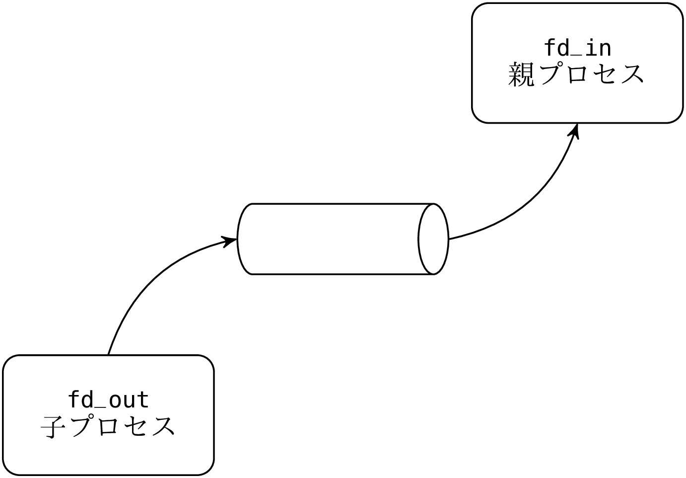
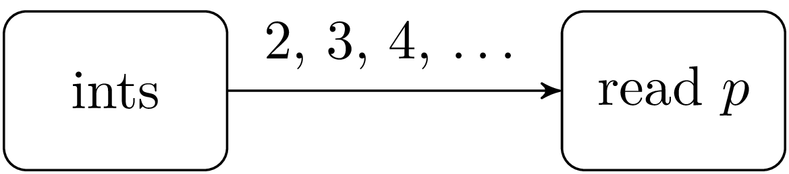
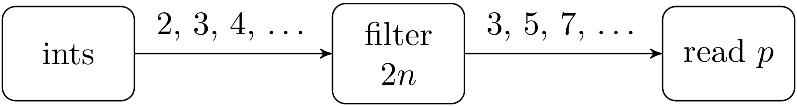

OCaml による Unix システムプログラミングXavier Leroy and Didier Rémy4thOctober, 2018 |
© 1991, 1992, 2003, 2004, 2005, 2006, 2008, 2009, 2010
Xavier Leroy and Didier Rémy,
inria Rocquencourt.
Rights reserved.
Consult the
license. 
Translation by
Daniel C. Bünzli,
Eric Cooper,
Eliot Handelman,
Priya Hattiangdi,
Thad Meyer,
Prashanth Mundkur,
Richard Paradies,
Till Varoquaux,
Mark Wong-VanHaren
Proofread by
David Allsopp,
Erik de Castro Lopo,
John Clements,
Anil Madhavapeddy,
Prashanth Mundkur
Translation coordination & layout by Daniel C. Bünzli.
英語版の日本語への翻訳: Yuki (github)
誤訳の指摘などは https://github.com/inzkyk/ocamlunix-jp/issues まで。
次のフォーマットが利用可能です: 一つのウェブページ, 章ごとのウェブページ, PDF — git リポジトリ
この文書は Unix システムプログラミングの入門コースであり、特にプロセス間通信に重点を置いています。システムプログラミングで一般的な C 言語ではなく、ML 言語の方言である OCaml 言語を使っていることがこの文書の一番の特徴であり、これによってシステムプログラミングと ML 言語に対する普通とは異なる視点を持つことができます。
目次
この講義ノートは 1994 年に Xavier Leroy が高等師範学校で基礎・応用数学及び情報科学の修士課程 1 年生に対して行ったシステムプログラミングの講義が元になっています。初期の版では Caml-Light [1] 言語が使われていました。
2003年から2006年にエコール・ポリテクニークで開かれた情報科学の修士課程学生向け講義のために、Didier Rémy はノートを改変し、 OCaml[2] 言語が使われるようになりました。この期間に、Gilles Roussel, Fabrice Le Fessant と Maxence Guesdon は講義を助けるとともに、このノートにも貢献しました。この新しい版では要素の追加や更新が行われています。
最初の版からの約 10 年間のうちに、 扱われる数字の桁はコンマ 1 つ分大きくなりました。またweb は大きく発達し、1994 年当時には先駆的だった httpリレーの例は現在では平凡なものです。そしてなんといってもこの間に OCaml言語は成熟し、Unison [18] のような実際のシステムアプリケーションに使われるようになりました。
伝統的に Unix システムプログラミングは C で行われなければならないという風潮があります。しかしこのコースで私達はより高レベルな言語 — 具体的には OCaml — のほうが Unix システムプログラミングの基礎を説明するのに適していることを発見しました。
OCamlの Unix システムコールに対するインターフェースはより抽象的です。C では全てが整数とビットフィールドに変換されますが、OCamlでは ML の型システムを使うことで、システムコールの引数と返り値が明確になります。そのため引数と返り値がどのようにデコード/エンコードされるかを説明する必要がなく、システムコールの意味を説明するのが簡単になります。 (例えば ?? ページにある wait システムコールの説明を見てみてください。)
加えて OCamlは静的な型システムを持ち、基本型が明確なので、 C よりも安全にプログラムを書けます。熟練した C プログラマーはこの利点を必要のない贅沢であるとみなすかもしれませんが、このコースが対象とする熟練していないプログラマーにとっては重要なことです。
システムプログラミングに関するこのノートの二つ目の目標は、定理証明やコンパイラ、記号計算といったOCamlの一般的な応用とは異なる分野における OCamlの利用例を見せることです。OCamlの持つ強固な命令的カーネルに加えてパラメトリック多相や高階関数、例外といった C にない優れた機能のおかげで、このノートで行われた試みの結果は上々です。他にも関数型プログラミングと命令型プログラミングを互いに排他的にではなく組み合わせて使うことで、同じプログラムの中にオペレーティングシステムとの優れたインターフェースと複雑な記号計算を共存させることが可能なことをこのノートは示しています。
このノートは読者が OCamlと Unix のシェルコマンドを知っていることを仮定します。OCamlに関する疑問は OCaml System documentation [2] を、 Unix についての疑問は Unix manual のセクション 1 や [5, 6] などの入門書を参考にしてください。
このノートは Unix システムのプログラミング上のインターフェースしか示すことしかせず、その実装や内部構造には触れません。bsd 4.3 の内部構造は [8] で、 System v の内部構造は [9] で説明されています。Tanenbaum の本 [13, 14] はネットワークとオペレーティングシステムの構造に関する全体像が示されています。
このノートで説明される Unix インターフェースは http://caml.inria.fr/ocaml/ でフリーソフトウェアとして配布されている OCaml System の一部です。
1 基礎
1.1 Sys モジュールと Unix モジュール
OCamlからシステムにアクセスするときに使われる関数は Sys と Unix の二つのモジュールにまとめられています。一つ目の Sys モジュールは OCamlが実行される Unix およびその他のオペレーティングシステムで一般的な関数を含みます。二つ目の Unix モジュールは Unix に特有なものを全て含みます。
これ以降 Sys と Unix モジュールにある識別子はどちらのモジュールのものかを示すことなく使うことにします。つまり open Sys および open Unix を実行した状態であるということです。完全な例を示すときには、open Sys と open Unix を明示的に書くことにします。
Sys および Unix モジュールは Pervasives モジュールに定義されている変数を上書きし、元の定義を隠してしまうことがあるので注意してください。例えば、 Pervasives.stdin と Unix.stdin は別物です。隠された定義にはプリフィックスをつけることでアクセスできます。
Unix ライブラリを使う OCamlのプログラムをコンパイルするには、次のようにします:
ocamlc -o prog unix.cma mod1.ml mod2.ml mod3.ml
ここで prog というプログラムは mod1, mod2 そして mod3 という三つのモジュールから成ります。モジュールは別々にコンパイルすることもできます:
ocamlc -c mod1.ml
ocamlc -c mod2.ml
ocamlc -c mod3.ml
この場合、次のようにしてリンクします:
ocamlc -o prog unix.cma mod1.cmo mod2.cmo mod3.cmo
両方の例において、引数 unix.cma は OCamlで書かれた Unix ライブラリを表します。バイトコードコンパイラではなくネイティブコードコンパイラを使うには、 ocamlc を ocamlopt に、unix.cma を unix.cmxa に置き換えてください。
コンパイルツール ocamlbuild を使っている場合、次の内容を _tags ファイルに追加してください:
<prog.{native,byte}> : use_unix
“toplevel” を言われる対話環境から Unix システムにアクセスすることもできます。実行している環境が C ライブラリの動的リンクに対応している場合、OCamlトップレベルを起動して次のディレクティブを入力します:
#load "unix.cma";;
動的リンクに対応していない場合、システム関数がプリロードされた対話環境を作る必要があります:
ocamlmktop -o ocamlunix unix.cma
このトップレベルは次のコマンドで起動できます:
./ocamlunix
1.2 プログラムを呼ぶためのインターフェース
シェル (コマンドインタープリタ) からプログラムを実行する場合、シェルは 引数 と 環境 を実行するプログラムに渡します。引数とはコマンドライン上でプログラムの名前の後ろに続く語です。環境とは variable=value の形をした文字列の集まりであり、環境変数のバインディングを表します。このバインディングは csh では setenv var=val で、 sh では var=val; export varでセットされます。
プログラムに渡された引数は文字列の配列 Sys.argv に格納されます:
プログラムの環境は Unix.environment 関数で取得できます:
Sys.getenv 関数を使えば環境をより簡単に検索できます。
Sys.getenv v は v という環境変数に結び付けられた値を返します。環境変数が見つからなかった場合は Not_found 例外を出します。
例
最初の例として、引数を出力する echo プログラムを示します。これは同じ名前の Unix コマンドと同じ動作です。
let echo () =
let len = Array.length Sys.argv in
if len > 1 then
begin
print_string Sys.argv.(1);
for i = 2 to len - 1 do
print_char ' ';
print_string Sys.argv.(i);
done;
print_newline ();
end;;
echo ();;
* * *
プログラムは exit を呼ぶことで任意の場所で終了させることができます。
引数は呼び出し元のプログラムに送られる返り値です。問題のない場合には 0 を、エラーが起こった場合には0でない値を返すという慣習があります。プログラムの実行結果が条件として使われた場合、sh シェルは返り値 0 をブール値 “true” に、0 でない全ての返り値を “false” として解釈します。
プログラムが全ての式を実行し終わって終了する場合、そのプログラムは暗黙的に exit 0 を呼びます。プログラムが補足されない例外によって途中で実行を終了する場合、そのプログラムは暗黙的に exit 2 を呼びます。
exit 関数は呼ばれたときに書き込み用にオープンされている全てのチャンネルのバッファをフラッシュします。at_exit 関数を使うと、プログラムが終了するときにこれ以外の動作をさせることができます。
val at_exit : (unit -> unit) -> unit
最後に登録された関数が最初に実行されます。at_exit 関数を使って登録された関数は登録を解除することができませんが、これが本質的な制限になることはありません。グローバル変数を使って実行を変えることができるからです。
1.3 エラー処理
他に明示されていない限り、Unix モジュールの全ての関数はエラーが起きたときに Unix_error 例外を出します。
Unix_error 例外の第二引数はエラーが起こったシステムコールの名前です。第三引数はエラーが起こったオブジェクトの名前を(可能な場合には)表します。例えば、ファイルの名前を引数として取るシステムコールの場合には、このファイルの名前が Unix_error の第三引数となります。最後に、第一引数はエラーの種類を表すエラーコードを表します。エラーコードは error というヴァリアント型に属しています。
type error = E2BIG | EACCES | EAGAIN | ... | EUNKNOWNERR
of int
この型のコンストラクタには posix で定義されるエラーが同じ名前と意味ですべて含まれ、加えて unix98, bsd のエラーの一部が含まれます。その他の全てのエラーは EUNKOWNERR というコンストラクタになります。
例外が発生したとき、 try によって補足されないエラーはプログラムの一番上まで上がっていき、プログラムを実行の途中で終了させます。小さいアプリケーションでは予見できないエラーを致命的なものとみなすことは良い習慣です。しかしその場合、エラーを分かりやすく表示することが望ましいです。エラーを分かりやすく表示するために、 Unix モジュールには handle_unix_error 関数があります:
handle_unix_error f x はまず引数 x を関数 f に適用します。この適用が Unix_error を出した場合、エラーを説明するメッセージが表示され、exit 2 によってプログラムは終了します。次のプログラムは典型的な使用例です:
handle_unix_error prog ();;
ここで関数 prog : unit -> unit がプログラム本体を実行します。参考のために、 handle_unix_error の実装を以下に示します。
1 open Unix;;
2 let handle_unix_error f arg =
3 try
4 f arg
5 with Unix_error(err, fun_name, arg) ->
6 prerr_string Sys.argv.(0);
7 prerr_string
": \"";
8 prerr_string fun_name;
9 prerr_string
"\" failed";
10 if String.length arg > 0
then begin
11 prerr_string
" on \"";
12 prerr_string arg;
13 prerr_string
"\""
14 end;
15 prerr_string
": ";
16 prerr_endline (error_message err);
17 exit 2;;
prerr_xxx の形をした関数は基本的には print_xxx 関数と同じ動作をしますが、書き込み先は stdout ではなく stderr となります。
error -> string 型をもつ error_message は引数の番号が表すエラーを説明するメッセージを返します (第 16 行)。プログラムに渡される第 0 引数 Sys.argv.(0) にはプログラムを起動するのに使われたコマンドが格納されます (第 6 行)。
handle_unix_error 関数がプログラムの実行を終了させるような致命的なエラーを処理します。OCamlを使うことの利点は全てのエラーを明示的に処理することが求められ、エラーが発生するとプログラムの実行が終了することになるトップレベルでさえこれが求められることです。実際システムコールによるどんなエラーも例外を発生させるので、プログラムの実行は中断され、例外は明示的に補足・処理されるまで上に登る事になります。これによってプログラムが不整合状態で実行が続くことを防ぐことができます。
Unix_error 型のエラーにはもちろんパターンマッチを使うことができます。次の関数はこれからよく目にすることになります:
let rec restart_on_EINTR f x =
try f x with Unix_error (EINTR, _, _) -> restart_on_EINTR f x
このコードは関数を実行してもし中断された場合にはもう一度繰り返すという処理を行います(4.5 節を参照)。
1.4 ライブラリ関数
これから例を通して見ていくことですが、システムプログラミングでは同じパターンの処理が繰り返し出てきます。アプリケーションのコードが本質的な部分だけを含むように、共通する処理をまとめたライブラリ関数を定義しておくことが望ましいです。
自分で書いて自分で実行するプログラムではどんなエラーが出て、そのうちどれが実行を終了させるような致命的なエラーかが分かるものですが、ライブラリ関数の場合には実行されるコンテキストが分からないのでどれが致命的なエラーなのかは通常分かりません。かといって全てのエラーが致命的であると仮定することもできません。そのためプログラムを止めるのか、それとも無視するのか呼び出し元に判断させるために、エラーを呼び出し元に伝えることが必要になります。
しかし、ライブラリ関数を普通に実装すると発生したエラーをそのまま呼び出し元に伝えることができません。システムを整合状態に置くことが求められるためです。例えばファイルを開いてそのファイルディスクリプタを使って操作を行うライブラリ関数は、ファイルへの操作でエラーが生じた場合を含めた全ての場合においてファイルディスクリプタを閉じる処理を行う必要があります。ファイルディスクリプタがリークしてファイルディスクリプタを使いきってしまうことを防ぐためです。
ファイルに対する操作を引数として受け取る場合もあります。この場合、いつどのように操作が失敗するかを知ることは (呼び出した側でなければ) できません。そのため操作の本体は “最終処理” コードで守ることが必要になります。このコードは関数が例外を出したかどうかにかかわらず、関数が帰る直前に実行されます。
try …finalize 構文は OCamlにビルトインでは用意されていませんが、簡単に定義することができます 1。
let try_finalize f x finally y =
let res = try f x with exn -> finally y; raise exn in
finally y;
res
この関数はメインの処理 f と最終処理 finally およびそれらの引数 x と y を受け取ります。最初にプログラムの本体 f x が実行され、その結果は最終処理 finally y が実行されてから返されます。プログラムの実行で例外 exn が起こった場合、最終処理が実行されてからもう一度 exn を出します。メインの処理と最終処理の両方が失敗した場合、最終処理の例外が出されます(メインの処理の例外が出されるようにすることもできます)。
ノート
これからこのコースでは例でよく使う try_finalize などの関数をまとめた補助ライブラリ Misc を使います。必要に応じてライブラリの関数を紹介するほか、インターフェースは付録にあります。このコースに出てくる例をコンパイルするには、 Misc モジュールの定義をまとめておく必要があります。
Misc モジュールにはこのコースでは直接使用しない可視化のための関数も含まれています。これらの関数は Unix ライブラリを強化するためのもので、いくつかの関数の振る舞いを上書きします。そのため Misc ライブラリを使う場合は Unix の後に読み込まれる必要があります。
例
このコースにはたくさんの例が含まれています。これらはバージョン 4.05.0の OCamlでコンパイルされることを確認しています。古いバージョンではプログラムを若干改変する必要があります。
例には二つの種類があります: とても一般的で再利用が可能な “ライブラリ関数” と小さなアプリケーションです。これら二つを区別することは重要です。ライブラリ関数の場合には実行時のコンテキストをできるだけ一般的なものと仮定して、インターフェースを熟慮し、全ての特殊ケースを扱うようにします。一方小さなアプリケーションの場合には、多くのエラーは致命的なものであり、プログラムの実行を停止させます。そのためエラーが起きた時にはその原因を伝えるだけで十分であり、システムを整合状態へと戻す処理は必要ありません。
2 ファイル
Unix において “ファイル” という言葉はいくつかのものを表します:
-
通常のファイル: テキストまたはバイナリ情報を含んだ有限のバイト列。 “通常ファイル” とも呼ばれる。
- ディレクトリ
- シンボリックリンク
- 特殊ファイル (デバイス): 主にコンピュータの周辺機器にアクセスするために使われる。
- 名前付きパイプ
- 名前付き Unix ドメインソケット
ファイルという表現にはファイルが保持するデータだけではなく、その種類やアクセス権限、最終更新日時といったファイルそのものに関するデータ (メタ属性と呼ばれます) も含まれます。
2.1 ファイルシステム
大ざっぱにいって、ファイルシステムは木と考えることができます。根 (ルート)は / で表され、枝は '\000' と / を除く文字列からなるファイルの名前でラベル付けされます (ただし空白文字と印字できない文字は避けたほうが良いとされます) 。終端でないノードは ディレクトリ です: これらのノードは必ず二つの枝 . と .. を含み、それぞれこのディレクトリそのものと親のディレクトリを表します。ディレクトリでないノードのことを ファイル と呼ぶことがありますが、木のどのノードもファイルであることを考えると、これは曖昧です。曖昧さを避けるために、このノートではこれらのことを 非ディレクトリファイル と呼ぶことにします。
木のノードはパスを使って表すことができます。パスの始点がファイル階層の頂上である場合、そのパスは 絶対 です。一方始点がディレクトリである場合にはパスは 相対 です。より正確に言うと、 相対パス とはファイルの名前を / で区切った文字列であり、絶対パス とは先頭に / のついた相対パスです。ここでは同じ文字 / が区切り文字と根ノードという二つの意味で使われています。
Filename モジュールを使うとパスをポータブルに扱うことができます。例えば concat は / という文字を与えることなく二つのパスを結合するので、他のオペレーティングシステム (windows では区切り文字は \ です) でも同じような動作をさせることができます。Filename モジュールには current_dir_name とparent_dir_name があり、それぞれ . と .. という枝を表します。basename 関数と dirname 関数はパス p を受け取ってそれぞれディレクトリ名 d と非ディレクトリファイル名 bを返します。このとき p と d/p が表すファイルは同じになります。Filename モジュールの関数はパスの操作だけを行うので、実際にそのパスが存在するかどうかは考慮しません。
ファイル階層は厳密には木ではありません。. と .. というディレクトリが自分自身や上の階層のディレクトリを指しているからです。さらに、非ディレクトリファイルは複数の親を持つことができます (ハードリンク と言います)。また他のファイルへのパスを保持する非ディレクトリファイルとみなすことができる シンボリックリンク もあります。概念上は、シンボリックリンクの保持するパスは通常ファイルと同じようにその内容を読むことで取得できます。パスの途中でシンボリックリンクに当たった場合、そのたびにパスをたどります。s が l へのシンボリックリンクならば、 p/s/q というパスは l が絶対パスのときは l/q を、相対パスのときは p/l/q を表します。
図 1 にファイル階層の例を示します。/tmp/bar というパスにあるシンボリックリンク 11 は ../gnu という相対パスを指していますが、このファイルはこの段階では存在していません。
一般的に、次の規則に従えばファイル階層の再帰的な探索は終了します:
-
ディレクトリ
. と .. を無視する。
- シンボリックリンクをたどらない。
シンボリックリンクをたどる場合には木ではなく一般のグラフを走査することになるので、たどったノードを覚えておかないとループを避けることができません。
それぞれのプロセスはワーキングディレクトリを持ちます。ワーキングディレクトリは getcwd 関数で取得することができ、chdir で変えることができます。chroot p を使えばファイル階層のビューを制限することができます。これによってディレクトリ p が制限されたビューのルートになります。それ以降は絶対パスが新しいルート p からのものとして解釈されます (新しいルートからの .. は p 自身になります)。
2.2 ファイル名とファイルディスクリプタ
ファイルにアクセスする方法は二つあります。一つ目はファイルシステム階層の ファイル名 (あるいは パス名) を利用する方法です。ハードリンクがあるので、全てのファイルは複数のファイル名を持つことができます。ファイル名は string 型の値です。例えばシステムコール unlink, link, symlink そして rename はどれもファイル名を使います。
val unlink : string -> unit
val link : string -> string -> unit
val symlink : string -> string -> unit
val rename : string -> string -> unit
以下のような効果を持ちます:
-
unlink f はファイル f を削除する。 Unix コマンド rm -f f と同じ。
link f1 f2 は f2 という名前で f1 というファイルを指すハードリンクを作成する。Unix コマンド ln f1 f2 と同じ。
symlink f1 f2 は f2 という名前で f1 というファイルを指すシンボリックリンクを作成する。Unix コマンド ln -s f1 f2 と同じ。
rename f1 f2 はファイル f1 をファイル f2 にリネームする。Unix コマンド mv f1 f2 と同じ。
ファイルにアクセスする二つ目の方法はファイルディスクリプタを使うものです。ファイルディスクリプタはファイルへのポインタであり、ファイルの名前の他にも現在の読み込み/書き込み位置、アクセス権限 (読み込み/書き込みは可能か?)、入出力を管理するためのフラグ (ブロッキング/ノンブロッキングや上書き/追記など)といった情報を含みます。ファイルディスクリプタは抽象型 file_descr の値です。
ファイルへの名前を使ったアクセスはファイルディスクリプタを使ったアクセスと独立しています。例えばあるファイルのファイルディスクリプタを取得したとき、そのファイルを消去したりリネームしたりすることは可能ですが、そうした場合でもファイルディスクリプタは元のファイルを指したままです。
プログラムが実行されると 3 つのディスクリプタが確保され、Unix モジュールのstdin, stdout, stderr という変数に割り当てられます。
これらのディスクリプタはそれぞれプロセスの標準入力、標準出力、標準エラー出力に対応します。
プログラムがコマンドラインから実行されリダイレクトされることがない場合、三つのディスクリプタは端末を表します。しかし例えば入力がシェルの cmd < f を使ってリダイレクトされている場合、cmd を実行している間はディスクリプタ stdin は f というファイルを指します。同様に、 cmd > f と cmd 2> f はコマンドの実行中にそれぞれ stdout と stderr をファイル f に割り当てます。
2.3 ファイルのメタ属性、種類、権限
システムコール stat, lstat および fstat はファイルについてのメタ属性、つまりそのファイルの内容についてではなくそのノード自身についての情報を返します。例えばファイルの識別子、ファイルの種類、アクセス権限、最終更新日時といった情報などが含まれます
val stat : string -> stats
val lstat : string -> stats
val fstat : file_descr -> stats
システムコール stat と lstat はファイル名を引数として受け取りますが、fstat はそれまでに開かれたディスクリプタを受け取りそのディスクリプタが指しているファイルの情報を返します。stat と lstat はシンボリックリンクに対して異なった動作をします。lstat はシンボリックリンクそのものの情報を返しますが、stat はシンボリックリンクが指すファイルに関する情報を返します。これら 3 つのシステムコールの返り値は stats 型のレコードです。そのフィールドは図 1 に説明されています。
| フィールド名 | 説明 |
|
st_dev : int | ファイルが保存されているデバイスの ID を表す。 |
st_ino : int | パーティションにおけるファイルの ID (inode 番号と呼ばれます) を表す。(st_dev, st_ino) の組でファイルシステム内のファイルを識別できる。 |
st_kind : file_kind | ファイルの種類を表す。 file_kind 型は列挙型であり、以下のコンストラクタを持つ:
S_REG | 通常ファイル |
S_DIR | ディレクトリ |
S_CHR | キャラクタデバイス |
S_BLK | ブロックデバイス |
S_LNK | シンボリックリンク |
S_FIFO | 名前付きパイプ |
S_SOCK | ソケット
|
|
st_perm : int | ファイルへのアクセス権限を表す。 |
st_nlink : int | ファイルがディレクトリの場合はディレクトリ内の要素の数を表す。
ファイルがディレクトリ出ない場合、このファイルに対するハードリンクの数を表す。 |
st_uid : int | ファイルの所有ユーザを表す。 |
st_gid : int | ファイルの所有グループを表す。 |
st_rdev : int | ファイルが特殊ファイルの場合、ファイルに関連付けられた周辺機器の ID を表す。 |
st_size : int | ファイルのサイズ (バイト) を表す。 |
st_atime : int | ファイルが最後にアクセスされた時間を、 1970年1月1日深夜0時 gmt からの経過秒数で表す。 |
st_mtime : int | ファイルが最後に更新された日時を表す (単位は同上)。 |
st_ctime : int | ファイルの状態が最後に更新された日時を表す。ファイルへの書き込み、アクセス権限の変更、所有ユーザ/グループの変更、リンク数の変更などがファイルの状態を変化させる。
|
|
Table 1 — stats 構造体のフィールド
識別子
ファイルはデバイス番号 st_dev (大抵の場合はファイルのあるディスクパーティションの番号) とinode 番号 st_ino で一意に識別できます。
所有者
ファイルは所有者 st_uid と所有グループ st_gid を持ちます。マシン上の全てのユーザとグループは通常 /etc/passwd と /etc/gourps に保存されています。ユーザとグループを文字列からポータブルに検索するには getpwnam 関数と getgrnam 関数が使えるほか、getpwuid 関数と getgrgid 関数を使うと id から検索できます。
プロセスを実行しているユーザの名前とそのユーザが属している全てのグループ番号はそれぞれ getlogin と getgroups 関数で取得できます。
chown 関数はファイル (第一引数) の所有者 (第二引数) と所有グループ (第三引数) を変えます。ファイルディスクリプタを持っているならば、 代わりに fchown 関数が使えます。任意のファイルの所有者と所有グループを変更できる権限を持つのはスーパーユーザだけです。
val chown : string -> int -> int -> unit
val fchown : file_descr -> int -> int -> unit
プログラムの実効 uid がファイルと等しいとき、あるいは実効 gid または実効ユーザの属する補助グループの一つがファイルの所有グループと等しい場合は、特権無しで所有ユーザ/グループの変更が可能です。
アクセス権限
アクセス権限は整数の中にビット列として格納されており、file_perm は int の別名に過ぎません。そこには所有ユーザ、所有グループおよびその他のユーザの読み込み、書き込みおよび実行のための権限を表すビットとスペシャルビットが保存されています:
| Special | User | Group | Other |
| – | – | – | – | – | – | – | – | – | – | – | – |
OoSUGO
|
ここでユーザ (User) 、グループ (Group)、その他 (Other) というフィールドの中には、読み込み (r)、 書き込み (w) そして実行 (x) の権限がこの順番で保存されています。ファイルの権限はこれらの権限を合わせたものであり、例を表 2 に示します。
| ビット (8進表記) | ls -l の表記 | アクセス権限 |
|
0o100 | --x------ | 所有ユーザによって実行可能 |
0o200 | -w------- | 所有ユーザによって書き込み可能 |
0o400 | r-------- | 所有ユーザによって読み込み可能 |
|
0o10 | -----x--- | 所有グループのメンバーによって実行可能 |
0o20 | ----w---- | 所有グループのメンバーによって書き込み可能 |
0o40 | ---r---- | 所有グループのメンバーによって読み込み可能 |
|
0o1 | --------x | その他のユーザによって実行可能 |
0o2 | -------w- | その他のユーザによって書き込み可能 |
0o4 | ------r-- | その他のユーザによって読み込み可能 |
|
0o1000 | --------t | グループに対する t ビット (スティッキービット) |
0o2000 | -----s--- | グループに対する s ビット (SGID) |
0o4000 | --s------ | ユーザに対する s ビット (SUID) |
|
Table 2 — 権限ビット
非ディレクトリファイルに対して、読み込み、書き込みおよび実行の権限が意味することは明らかです。ディレクトリに対する実行権限とはそのディレクトリに入る (chdir する) ための権限であり、読み込み権限とはディレクトリの内容を一覧で表示するための権限です。ただしディレクトリ内のファイルやサブディレクトリの名前を知っている場合、それらを読み込むためにはディレクトリの読み込み権限は必要ではありません。
スペシャルビットは x ビットが立っていない場合には意味を持ちません (x が 立っていないならば、追加の権限を与えません) 。スペシャルビットの場所が x と同じで、x が設定されていないときには s, t の代わりに S, T が使われるのはこのためです。
t フラグはスティッキービットと呼ばれ、このフラグが付いたディレクトリでは全てのユーザがファイルとディレクトリの作成を行えますが、削除が行えるのは所有者とルートだけです。
s ビットが立っている実行可能ファイルを実行すると、ファイルの所有者または所有グループとしてファイルが実行されます。さらにプログラムの実行時にシステムコール setuid と setgid を呼ぶことで、実効ユーザ識別子とグループを本来のユーザ/グループに切り変えることができます。
setuid と setgid が呼ばれたとき、プロセスは元のユーザ/グループ識別子を保存します。元の識別子が保存されるのは実効識別子を特別な権限なしに後で戻すことができるようにするためです。システムコール getuid と getgid は元の識別子を返し、geteuid と getegid は実効識別子を返します。
ただしスーパーユーザが setuid と setgid を実行した場合は別で、この場合は実効ユーザ/グループ識別子と実ユーザ/グループ識別子の両方を変更します。
プロセスは他にもファイル作成マスクを持ちます。これはファイル権限と同じようにエンコードされ、名前が示すように、禁止する操作を表します。ファイルを作成するとき、ファイル作成マスクで1になっているビットは作成されるファイルの権限では 0 になります。ファイル作成マスクはシステムコール umask で取得および変更できます。
システム変数を変更する多くのシステムコールと同じように、ファイル作成マスクを変更する umask は古い値を返します。そのため、この関数を二回呼べば現在の値を確認できます。一回目は適当な値を入力して変数の現在の値を手に入れ、二回目でその値を入力して変数を元の値に戻します。例えば:
let m = umask 0 in ignore (umask m); m
ファイルアクセス権限はシステムコール chmod と fchmod で変更できます。
val chmod : string -> file_perm -> unit
val fchmod : file_descr -> file_perm -> unit
これらの関数が動作していることはシステムコール access によって “動的に” 確認できます。
ここでアクセスされるファイルへの権限の問い合わせは access_permission 型の値のリストで表されます。 F_OK はファイルが存在しているかどうかを (他の権限を確認せずに) 確認します。他の値の意味は明らかです。
access によって調べられる情報は lstat で得られる情報よりも制限的なことがあることに注意してください。これはファイルシステムが制限された権限 — 例えば、読み込み専用モード — のもとにマウントされる場合があるためです。動的な 情報 (プロセスが実際にできることへの制限) と 静的な 情報 (ファイルシステムが指定する制限) を区別したのはこのためです。
2.4 ディレクトリに対する操作
ディレクトリに書き込めるのカーネルだけ (そしてファイルを作成するときだけ) です。そのため、ディレクトリを書き込みモードで開くことは禁止されています。 Unix の特定のバージョンでは、読み込み専用モードでディレクトリを開いて readで読むことが許されていますが、別のバージョンでは禁止されています。しかしディレクトリエントリのフォーマットは Unix のバージョンによって異なり、複雑なことが多いので、仮にディレクトリへの書き込みができたとしても行うべきではありません。次の関数を使うとポータブルにディレクトリを走査することができます:
システムコール opendir はディレクトリのディレクトリディスクリプタを返します。 readdir はディスクリプタの次のエントリを読んで同じディレクトリ内のファイルの名前を返すか、ディレクトリの終端に到達した場合には End_of_file 例外を出します。rewinddir はディスクリプタをディレクトリの最初に移動し、closedir はディレクトリディスクリプタを閉じます。
例
Misc モジュールに含まれる次のライブラリ関数はディレクトリ dirname 内のエントリーについて、関数 f を繰り返し適用します。
let iter_dir f dirname =
let d = opendir dirname in
try while true do f (readdir d) done
with End_of_file -> closedir d
* * *
ディレクトリの作成と空ディレクトリの削除には mkdir と rmdir を使います。
val mkdir : string -> file_perm -> unit
val rmdir : string -> unit
mkdir の第二引数には新しく作られるディレクトリのアクセス権限を指定します。すでに空であるディレクトリしか削除することはできません。そのためディレクトリとその要素を削除するにはまず再帰的にディレクリの要素を削除してからディレクトリを削除することが必要になります。
2.5 完全な例: ファイル階層の検索
Unix コマンド find はファイル階層にあるファイルで一定の条件 (ファイル名、タイプ、権限など) に合致するものを一覧で表示します。このセクションではこの探索を実装したライブラリ関数 Findlib.find と、-follow そして -maxdepth オプションに対応した find コマンドを作成します。
Findlib.find に対するインターフェースを以下のように定めます:
val find :
(Unix.error * string * string -> unit) ->
(string -> Unix.stats -> bool) -> bool -> int -> string list ->
unit
関数呼び出し
find handler action follow depth roots
はリスト roots で指定されるファイル (絶対パスまたは関数が呼ばれたときのプロセスのカレントディレクトリからの相対パス) をルートとするファイル階層を最大 depth の深さまで、 フラグ follow がセットされているならばシンボリックリンクをたどって探索します。 探索を開始したパスを r とすると、探索結果のパスは r を先頭に持ちます。探索で見つかったパス p は Unix.lstat p (follow が true の場合は Unix.stat p) の結果とともに action 関数に渡されます。ディレクトリに対しては、action 関数は探索をそのディレクトリの探索を続けるべきか (true) かやめるべきか (false) を返します。
handler 関数は探索中に起こった Unix_error 型のエラーを報告します。エラーが起こった場合は、例外の引数が handler 関数に渡され探索は続行されます。例外が action 関数または handler 関数の内部で起こった場合にはその時点で探索は終了し、例外は呼び出し側に伝わります。action と handler の中で出される Unix_error 例外を探索中に起こったエラーと区別するために、Hidden 例外でラップします (hide_exn と reveal_exn 参照)。
1 open Unix;;
2
3 exception Hidden
of exn
4 let hide_exn f x =
try f x
with exn -> raise (Hidden exn);;
5 let reveal_exn f x =
try f x
with Hidden exn -> raise exn;;
6
7 let find on_error on_path follow depth roots =
8 let rec find_rec depth visiting filename =
9 try
10 let infos = (
if follow
then stat
else lstat) filename
in
11 let continue = hide_exn (on_path filename) infos
in
12 let id = infos.st_dev, infos.st_ino
in
13 if infos.st_kind = S_DIR && depth > 0 && continue &&
14 (not follow || not (List.mem id visiting))
15 then
16 let process_child child =
17 if (child <> Filename.current_dir_name &&
18 child <> Filename.parent_dir_name)
then
19 let child_name = Filename.concat filename child
in
20 let visiting =
21 if follow
then id :: visiting
else visiting
in
22 find_rec (depth-1) visiting child_name
in
23 Misc.iter_dir process_child filename
24 with Unix_error (e, b, c) -> hide_exn on_error (e, b, c)
in
25 reveal_exn (List.iter (find_rec depth [])) roots;;
ディレクトリはデバイス番号と inode 番号の組 id によって識別されます ( 12 行目)。リスト visiting がそれまでに訪問したディレクトリを記録します。この情報が必要になるのはシンボリックリンクをたどる時だけです ( 21 行目)。
ここまでくれば、 find コマンドを作るのは簡単です。このコードの主な処理は Arg モジュールを使ってコマンドライン引数をパースすることです。
let find () =
let follow = ref false in
let maxdepth = ref max_int in
let roots = ref [] in
let usage_string =
("Usage: " ^ Sys.argv.(0) ^ " [files...] [options...]") in
let opt_list = [
"-maxdepth", Arg.Int ((:=) maxdepth), "max depth search";
"-follow", Arg.Set follow, "follow symbolic links";
] in
Arg.parse opt_list (fun f -> roots := f :: !roots) usage_string;
let action p infos = print_endline p; true in
let errors = ref false in
let on_error (e, b, c) =
errors := true; prerr_endline (c ^ ": " ^ Unix.error_message e) in
Findlib.find on_error action !follow !maxdepth
(if !roots = [] then [ Filename.current_dir_name ]
else List.rev !roots);
if !errors then exit 1;;
Unix.handle_unix_error find ();;
この find の機能は少ないですが、これからの練習問題で示されるように、ライブラリ関数 FindLib.find ははるかに多機能です。
練習問題 1
Findlib.find を使って、以下の Unix コマンドと同じコマンド find_out_CVS を書いてください。
find . -type d -name CVS -prune -o -print
このコマンドはカレントディレクトリから始まりファイルの名前を再帰的に表示しますが、CVS という名前のディレクトリについては表示することもディレクトリに入ることもしません。
解答
* * *
let main () =
let action p infos =
let b = not (infos.st_kind = S_DIR || Filename.basename p = "CVS") in
if b then print_endline p; b in
let errors = ref false in
let error (e,c,b) =
errors:= true; prerr_endline (b ^ ": " ^ error_message e) in
Findlib.find error action false max_int [ "." ];;
handle_unix_error main ()
* * *
練習問題 2
getcwd 関数はシステムコールではありませんが、 Unix モジュールで定義されています。getcwd の “原始的な” 実装を与えてください。まずアルゴリズムの原理を言葉で説明してから実装するようにしてください (同じシステムコールを何度も呼ぶのは避けたほうが良いでしょう)。
解答
* * *
ヒントを示します。現在の場所からルートに向かって登って行くことで、答えとなるパスを作ることができます。ルートは親がそれ自身と等しい唯一のディレクトリノードとして検出できます(ルートからの相対パス . と .. は等しいです)。ディレクトリ r の名前を見つけるには、親ディレクトリの要素を一覧で表示し r に対応するものを見つければよいです。
* * *
2.6 ファイルのオープン
openfile 関数を使うと指定した名前のファイルに対するディスクリプタを得ることができます (対応するシステムコールは open ですが、これは ocaml の予約語なので使うことができません) 。
val openfile :
string -> open_flag list -> file_perm -> file_descr
第一引数は開くファイルの名前です。第二引数は open_flag 列挙型のフラグのリストであり、ファイルが開かれるモードおよびファイルが存在しなかったときの動作を指定します。file_perm 型の第三引数はファイルが作られるときのファイルのアクセス権限を指定します。返り値はファイルへのディスクリプタであり、入出力位置は最初ファイルの先頭にあります。
第二引数のフラグのリストは以下のうちちょうど一つだけを含む必要があります。
O_RDONLY | 読み込み専用モードで開く。 |
O_WRONLY | 書き込み専用モードで開く。 |
O_RDWR | 読み込み/書き込みモードで開く。
|
これらのフラグは読み込みと書き込み命令がディスクリプタに対して行えるかどうかを指定します。読み込み/書き込み権限のないファイルを読み込み/書き込みモードで開こうとした場合、openfile は失敗します。このため、全てのファイルを O_RDWR を使って開こうとするのは避けるべきです。
openfile の第二引数のフラグには以下の値を一つ以上含むことができます。
O_APPEND | 追記モードで開く。 |
O_CREAT | ファイルが存在しない場合作成する。 |
O_TRUNC | ファイルが存在する場合、内容を切り捨てる。 |
O_EXCL | ファイルがすでに存在しているなら失敗する。
|
O_NONBLOCK | ノンブロッキングモードで開く。 |
O_NOCTTY | 端末モードでは機能しない。
|
O_SYNC | ファイルに関する同期モードで書き込みを行う。 |
O_DSYNC | データに関する同期モードで書き込みを行う。 |
O_RSYN | 同期モードで読み込みを行う。
|
最初のグループはファイルが存在に関連した動作を決めます:
-
O_APPEND が指定された場合、全ての書き込み処理の前に入出力位置がファイルの末尾にセットされる。これによって書き込まれたデータはファイルの末尾に付け足されるようになる。O_APPEND が無い場合、書き込みは入出力位置 (初期位置はファイルの先頭) で行われる。 O_TRUNC が指定された場合、ファイルは開かれたときに切り捨てられる。ファイルの内容は失われてファイルの長さは 0 になり、最初の書き込みは空ファイルに行われる。O_TRUNC が無い場合、書き込みはファイルの先頭からそこにあるデータを上書きしながら行われる。O_CREAT が指定された場合、ファイルが存在しなければ作成される。作成されるファイルは空で、その権限は openfile の第三引数とプロセスの作成マスクによって決まる (作成マスクは umask によって取得および確認できる) 。O_EXCL が指定された場合、ファイルがすでに存在しているなら openfile は失敗する。このフラグと O_CREATE を併せると、ファイルを ロック1 として使うことができる。ロックを取得したいプロセスは O_EXCL と O_CREAT を指定して openfile を呼ぶ。ファイルが存在していた場合、これは他のプロセスがロックを取得済みであることを意味し、openfile はエラーを出す。ファイルが存在せず openfile がエラーを出さずに値を返しファイルが作られた場合、他のプロセスはロックを取得することができなくなる。ロックを開放するにはプロセスはロックファイルに unlink を行う。ファイルの作成はアトミックな演算である: もし二つのプロセスが O_EXCL と O_CREAT を指定して同時に同じファイルを作成しようとした場合、多くとも一つのプロセスしか成功しない。この手法の欠点はプロセスが現在使用中のロックを得るためにビジーウェイトする必要があることと、プロセスの異常終了がロックを開放しない場合があることである。
例
たいていのプログラムは openfile の第三引数として 0o666 を使います。これは文字列でいうと rw-rw-rw- を意味します。デフォルトファイル作成マスクが 0o022 の場合、ファイルは rw-r--r-- の権限で作成されます。マスクがより寛大で 0o002 の場合には、ファイルは rw-rw-r-- の権限で作成されます。
* * *
例
ファイルから読み込むには以下のようにします:
openfile filename [O_RDONLY] 0
O_CREAT が指定されていないならば、第三引数は何でも構いません。 0 がよく使われます。
それまでの内容にかかわらず空ファイルに書き込むには以下のようにします:
openfile filename [O_WRONLY; O_TRUNC; O_CREAT] 0o666
ファイルが実行可能なコード (例えば ld によって作られるファイルやスクリプトなど) を含む場合、ファイルを実行権限付きで作成します:
openfile filename [O_WRONLY; O_TRUNC; O_CREAT] 0o777
ファイルが機密情報 (例えば mail が既読メールを保存する “メールボックス”) である場合、書き込み権限を所有ユーザのみとして作成します:
openfile filename [O_WRONLY; O_TRUNC; O_CREAT] 0o600
存在するファイルの末尾にデータを付け足すか、ファイルが存在しない場合には作成するには以下のようにします:
openfile filename [O_WRONLY; O_APPEND; O_CREAT] 0o666
* * *
O_NONBLOCK フラグはファイルが名前付きパイプまたはスペシャルファイルの場合に、ファイルのオープンとその後の読み込みがノンブロッキングであることを保証します。
O_NOCTYY フラグはファイルが制御端末 (キーボードやウィンドウなど) の場合に、そのファイルが呼び出しプロセスの制御端末にならないことを保証します。
フラグの最後のグループは読み込みと書き込み処理をどのように同期するかを指定します。デフォルトでは処理は同期しません。
-
O_DSYNC が指定された場合、データの書き込みは同期されプロセスは全ての書き込みが物理的にメディア (通常はディスク) に行われるまでブロックされる。
O_SYNC が指定された場合、ファイルのデータとメタ属性の書き込みが同期される。
O_RSYNC が O_DSYNC と共に指定された場合データの読み込みも同期される: 読み込みが起こる前にそれまでの全ての書き込み (要求されたが実行されていないものを含む) が本当にメディアに書き込まれることが保証される。O_RSYNC が O_SYNC と共に指定された場合上記のことがメタ情報にも適用される。
2.7 読み込みと書き込み
システムコール read と write はバイト列をファイルに書き込みます。歴史的な理由から、システムコール write は OCamlでは single_write という名前です。
val read : file_descr -> bytes -> int -> int -> int
val single_write : file_descr -> bytes -> int -> int -> int
二つの関数 read と single_write は同じインターフェースを持ちます。第一引数は操作を行うファイルディスクリプタです。第二引数2は read の場合は読み込んだバイト列を収める文字列で、single_write の場合は書き込むバイト列です。第三引数は文字列の中で入出力を行う最初のバイトの位置で、第四引数は入出力を行うバイト数です。第三、四引数は第二引数の部分文字列を定めています (この部分文字列はもちろん有効なものである必要がありますが、read と single_write はこのことをチェックしません) 。
read と single_write は実際に読み込んだ/書き込んだバイト数を返します。
入出力の命令はファイルディスクリプタの現在の入出力位置から行われます (ファイルが O_APPEND モードで開かれた場合、この位置は書き込み命令の前にファイルの末尾にセットされます)。システムコールの後、現在位置は読み込み/書き込みを行ったバイト数だけ進みます。
書き込みでは実際に書き込むバイト数は要求されたバイト数と普通一致しますが、いくつか例外があります:
(i) バイト列を書き込めなかった場合 (例えばディスクが満杯なとき)
(ii) ディスクリプタがノンブロッキングモードで開かれたパイプまたはソケットな場合
(iii) 書き込む文字列が OCamlの持つバッファより大きい場合
(iii) の理由は OCamlが最大値の制限された補助バッファを使っているためです。バッファの最大値よりも書き込みが大きかった場合、書き込みは部分的になります。この問題を解決するために、 OCamlには エラーが出るか全てのデータが書き込まれるまで書き込みを繰り返す write があります。しかしこの関数を使うとエラーが起こった場合に書き込まれたバイト数を知ることができません。single_writeを使うと書き込みの原始的になり(何が書き込まれたかが分かる)、オリジナルの Unix システムコールにより忠実になるので single_write を使うべきです。single_write の実装はセクション 5.7 で説明されています。
例
fd が書き込み専用モードで開かれたディスクリプタだとします。
write fd "Hello world!" 3 7
は "lo worl" という文字列を対応するファイルに書き込み、 7 を返します。
* * *
読み込みでは実際に読み込んだバイト数が読むように要求されたバイト数よりも小さいことがありえます。例えばファイルの終端が近いときは現在位置からファイルの終端までのバイト数が要求されたバイト数よりも小さくなります。特に現在位置がファイルの終端なとき read は 0 を返します。“ゼロはファイルの終端と等しい” という慣習はスペシャルファイルやパイプ、ソケットに対しても成り立ちます。例えば ctrl-D を端末に入力すると read は 0 を返します。
read が要求した値よりも小さい値を返すもうひとつの例は端末から読み込む場合です。この場合 read はまず行の入力が利用可能になるまでブロックします。行が入力され、その長さが要求されたバイト数よりも短い場合、read は要求されたバイト数に達しようと次のデータを待つことをせずに行の入力が利用可能になった時点で値を返します(これは端末のデフォルトの動作ですが、文字ごとに読み込むように変えることもできます。セクション section 2.13 と terminal_io 型を参考にしてください)。
例
次のプログラムは標準入力から最大 100 文字を読み込み、文字列として返します。
let buffer = Bytes.create 100 in
let n = read stdin buffer 0 100 in
Bytes.sub buffer 0 n
* * *
例
以下の関数 really_read は read と同じインターフェースを持ちますが、要求されたバイト数を取得するために追加の読み込みを行います。読み込み中にファイルの終端に達した場合には End_of_file 例外が出ます。
let rec really_read fd buffer start length =
if length <= 0 then () else
match read fd buffer start length with
| 0 -> raise End_of_file
| r -> really_read fd buffer (start + r) (length - r);;
* * *
2.8 ディスクリプタのクローズ
システムコール close はファイルディスクリプタを閉じます。
val close : file_descr -> unit
ディスクリプタが閉じられると読み込みや書き込みなどのディスクリプタに関する操作は全て失敗します。ディスクリプタは必要なくなった時点で閉じられるべきですが、閉じることは必須ではありません。write 関数による書き込みの要求が即時にカーネルに伝わるために、Pervasives モジュールのチャンネルとは違って全ての書き込みが実行されたことを保証するためにチャンネルを閉じる必要はありません。一方プロセスが確保できるディスクリプタの数はカーネルによって (数百から数千に) 制限されていることから、使わないディスクリプタを close で開放しないとディスクリプタが枯渇します。
2.9 完全な例: ファイルのコピー
引数として与えられる f1 と f2 について、f1 のバイト列を f2 にコピーするコマンド file_copy を作ります。
open Unix;;
let buffer_size = 8192;;
let buffer = Bytes.create buffer_size;;
let file_copy input_name output_name =
let fd_in = openfile input_name [O_RDONLY] 0 in
let fd_out = openfile output_name [O_WRONLY; O_CREAT; O_TRUNC] 0o666 in
let rec copy_loop () = match read fd_in buffer 0 buffer_size with
| 0 -> ()
| r -> ignore (write fd_out buffer 0 r); copy_loop ()
in
copy_loop ();
close fd_in;
close fd_out;;
let copy () =
if Array.length Sys.argv = 3 then begin
file_copy Sys.argv.(1) Sys.argv.(2);
exit 0
end else begin
prerr_endline
("Usage: " ^ Sys.argv.(0) ^ " <input_file> <output_file>");
exit 1
end;;
handle_unix_error copy ();;
作業の多くは file_copy 関数によって実行されます。最初に入力ファイルのディスクリプタを読み込み専用で開き、次に出力ファイルのディスクリプタを書き込み専用モードで開きます。
出力ファイルがすでに存在している場合ファイルは切り捨てられ (O_TRUNC オプション)、存在しない場合には作成されます (O_CREAT オプション)。作成されるファイルの権限は rw-rw-rw- をファイル作成マスクで改変したものですが、これは十分ではありません。実行可能ファイルをコピーする場合は、コピー先も実行可能であるべきだからです。コピー先のファイルと元のファイルの権限を同じにする方法は後述します。
copy_loop 関数の中で buffer_size バイトのコピーを行います。まずbuffer_size の読み込みを行い、これが 0 を返した場合はファイルの終端に到達しているのでコピーを終了します。そうでなければ読み込んだ r バイトを出力ファイルに書き込んで同じことを繰り返します。
最後に二つのディスクリプタを閉めます。プログラム本体となる copy はコマンドが二つの引数を受け取ったことを確認し、その引数を file_copy 関数に渡します。
コピー中に起きた Unix_error はhandle_unix_error によって補足され、エラーの内容が表示されます。ここで起こるエラーの例としては入力ファイルが存在しないために開くことができない、権限が足りなくてファイルを開くことができない、ディスクに容量がなくて書き込むことができない、などがあります。
練習問題 3
file_copy -a f1 f2 が f1 の内容を f2 の末尾に付け足すように、-a オプションを追加してください。
解答
* * *
-a オプションが与えられた場合、行うべき処理が
openfile output_name [O_WRONLY; O_CREAT; O_APPEND] 0o666
ではなく
openfile output_name [O_WRONLY; O_CREAT; O_TRUNC] 0o666
となります。 新しいオプションをコマンドラインからパースする部分は読者に残します。
* * *
2.10 システムコールのコストとバッファ
file_copy の例では読み込みを 8192 バイトごとに行ないました。どうして 1 バイトごとや 1 メガバイトごとに読み込みをしないのでしょうか? 理由は効率です。
図 2 に file_copy の速度を示します。一秒間にコピーできるバイト数を縦軸に、ブロックサイズ (buffer_size の値) を横軸に示しています。
転送されるデータの総量はブロックサイズに関わらず一定です。ブロックサイズが小さい時は、コピー速度はブロックサイズにほぼ比例しています。実行時間の多くがはデータの転送ではなく、copy_loop のループと read と write の呼び出しに使われているということがわかります。更に詳細に実行時間を計測すると、ほとんどが read と write の呼び出しに使われていることがわかります。システムコールは処理が大きくない場合でも (テストに使われた PC — 2.8 GHz Pentium 4 — では) 最低 4 マイクロ秒、一般的には 1 から 10 マイクロ秒程度かかります。そのため入出力のブロックサイズが小さい場合にはシステムコールの時間が支配的になります。
ブロックが大きくて 4KB から 1MB の場合、コピー速度は最大値で一定です。ここではシステムコールとループにかかる時間がデータ転送にかかる時間に比べて小さくなっているということです。加えてバッファのサイズがシステムのキャッシュよりも大きくなるためにデータの転送がシステムコールのコストを上回るようになります3。
最後に、ブロックがとても大きい (8 MB 以上) ときにはコピー速度は最大値よりも少しだけ小さくなります。ここで影響するのはブロックを確保してメモリのページを割り当てるのを書き込み中に行う時間です。
以上のことから学べることは、システムコールはほとんど何も処理をしていない場合でも大きな — 通常の関数呼び出しよりもはるかに大きな — コストがかかるということです。アーキテクチャによって違いますが、だいたい 2 から 20 マイクロ秒が呼び出しごとにかかります。そのためシステムコールの数を減らすことが重要になります。読み込みと書き込みに関して言えば、一文字ごとではなくある程度のサイズのブロックごとに行われるべきです。
file_copy の例では大きなブロックで入出力を行うのは難しくありません。しかしある種のプログラムでは一文字ごとに入出力を行うことが自然なことがあります(例えばファイルから一行ずつ読む処理、字句解析、数字の印字など)。このようなプログラムのために、ほとんどのシステムにはアプリケーションとオペレーティングシステムの間にソフトウェアのレイヤーを追加する入出力ライブラリがあります。例えば OCamlには Pervasives モジュールにファイルディスクリプタと似た抽象型in_channel と out_channel が定義されていて、この型に関する関数 input_char,input_line、output_char あるいは output_string があります。このレイヤーはバッファを使って複数回の一文字ごとの読み込みと書き込みを一回のシステムコールにまとめます。これによって一文字ごとに処理をするプログラムの効率が良くなります。さらにこのレイヤーによってプログラムがよりポータブルになります。Pervasives モジュールを使うプログラムを新しいオペレーティングシステムに移植するには、このライブラリをそのシステム上で使えるシステムコールを使って実装すれば良いからです。
2.11 完全な例: 簡単な入出力ライブラリ
バッファを使った入出力のテクニックの例として、OCamlの Pervasives ライブラリの一部を実装します。 次のようなインタフェースを持ちます:
exception End_of_file
type in_channel
val open_in : string -> in_channel
val input_char : in_channel -> char
val close_in : in_channel -> unit
type out_channel
val open_out : string -> out_channel
val output_char : out_channel -> char -> unit
val close_out : out_channel -> unit
“読み込み” の部分から始めます。
抽象型 in_channel は次のように定義します:
open Unix;;
type in_channel =
{ in_buffer: bytes;
in_fd: file_descr;
mutable in_pos: int;
mutable in_end: int };;
exception End_of_file
文字列 in_buffer は文字通りのバッファです。フィールド in_fd は読み込むファイルに開かれた (Unix の) ファイルディスクリプタです。フィールド in_pos は読み込みの現在位置を示します。フィールド in_end は事前にバッファへ読み込まれた文字列のうち有効な部分長さです。
in_pos と in_end のフィールドは読み込み処理中に更新されるので mutable として宣言します。
let buffer_size = 8192;;
let open_in filename =
{ in_buffer = Bytes.create buffer_size;
in_fd = openfile filename [O_RDONLY] 0;
in_pos = 0;
in_end = 0 };;
読み込みのためにファイルを開いたとき、同時に合理的なサイズの (システムコールが多くなりすぎない程度に大きく、メモリを無駄遣いしない程度に小さい) バッファを作ります。その後 in_fd フィールドを読み込み専用で開いたファイルに対する Unix のファイルディスクリプタで初期化します。バッファは最初空です (ファイルからのどんな文字列も含んでいません) 。そのため in_end フィールドは 0 で初期化します。
let input_char chan =
if chan.in_pos < chan.in_end then begin
let c = chan.in_buffer.[chan.in_pos] in
chan.in_pos <- chan.in_pos + 1;
c
end else begin
match read chan.in_fd chan.in_buffer 0 buffer_size
with 0 -> raise End_of_file
| r -> chan.in_end <- r;
chan.in_pos <- 1;
chan.in_buffer.[0]
end;;
in_channel から文字を読むとき、次の二つのうち一つを行います。一つ目はバッファに一つ以上まだ読んでいない文字がある、つまり in_pos フィールドの値が in_end フィールドの値よりも小さい場合です。このときはバッファの in_pos にある文字を返し、 in_pos をインクリメントします。もう一つはバッファが空の場合で、このときは read を呼んでバッファにもう一度文字列を読み込みます。read が 0 を返したならファイルの終端に達したということなので End_of_file 例外を出します。そうでなければ in_end に呼んだ文字の数を代入します。
let close_in chan =
close chan.in_fd;;
in_channel を閉じる処理は対応する Unix のファイルディスクリプタを閉じるだけです。
“書き込み” の部分は “読み込み” の部分にとても良く似ています。唯一異なるのはバッファがまだ読んでいない読み込み (バッファされたが読み込まれていない文字列) を保持するのではなくて、まだ完了していない書き込み (バッファされたがファイルディスクリプタに書き込まれていない文字列) を保持する点です。
type out_channel =
{ out_buffer: bytes;
out_fd: file_descr;
mutable out_pos: int };;
let open_out filename =
{ out_buffer = Bytes.create 8192;
out_fd = openfile filename [O_WRONLY; O_TRUNC; O_CREAT] 0o666;
out_pos = 0 };;
let output_char chan c =
if chan.out_pos < Bytes.length chan.out_buffer then begin
chan.out_buffer.[chan.out_pos] <- c;
chan.out_pos <- chan.out_pos + 1
end else begin
ignore (write chan.out_fd chan.out_buffer 0 chan.out_pos);
chan.out_buffer.[0] <- c;
chan.out_pos <- 1
end;;
let close_out chan =
ignore (write chan.out_fd chan.out_buffer 0 chan.out_pos);
close chan.out_fd;;
out_channel に文字を書き込むには次の二つのうち一つを行います。一つ目はバッファが満杯ではない場合で、このときは文字をバッファを out_pos の位置に保存して out_pos をインクリメントします。もう一つはバッファが満杯の場合で、このときは write を呼んでバッファを空にしてからバッファの先頭に文字を読み込みます。
out_channel を閉めるときにはバッファの内容 (位置 0 から out_pos - 1 までの文字列) を書き込むことを忘れないでください。これを忘れると最後にバッファが空になってからチャンネルに書き込まれた内容が失われます。
練習問題 4
次の関数を実装してください:
val output_string : out_channel -> string -> unit
この関数は output_char をそれぞれの文字に対して複数回呼んだときと同じ動作をしますが、より効率的です。
解答
* * *
書き込む文字列をバッファにコピーするのが基本的なアイデアです。バッファに十分な空きが無く途中でバッファを空にする必要がある場合とそうでなく文字列全てをバッファに直接書き込める場合とを考える必要があります。解答例を以下に示します。
open Unix;;
let output_string chan s =
let avail = Bytes.length chan.out_buffer - chan.out_pos in
if Bytes.length s <= avail then begin
Bytes.blit s 0 chan.out_buffer chan.out_pos (Bytes.length s);
chan.out_pos <- chan.out_pos + Bytes.length s
end
else if chan.out_pos = 0 then begin
ignore (write chan.out_fd s 0 (Bytes.length s))
end
else begin
Bytes.blit s 0 chan.out_buffer chan.out_pos avail;
let out_buffer_size = Bytes.length chan.out_buffer in
ignore (write chan.out_fd chan.out_buffer 0 out_buffer_size);
let remaining = Bytes.length s - avail in
if remaining < out_buffer_size then begin
Bytes.blit s avail chan.out_buffer 0 remaining;
chan.out_pos <- remaining
end else begin
ignore (write chan.out_fd s avail remaining);
chan.out_pos <- 0
end
end;;
let ex2 () =
if Array.length Sys.argv < 3 then begin
prerr_string "Usage: test <sources> <dest>";
exit 2;
end;
let fdin = open_in Sys.argv.(1) in
let fdout = open_out Sys.argv.(2) in
prerr_endline "copying";
try while true do output_char fdout (input_char fdin) done
with End_of_file ->
prerr_endline "Done";
output_string fdout "The end.\n";
prerr_endline "Closing";
close_out fdout;;
handle_unix_error ex2 ();;
./ex2.byte ex2.ml ex2.out
(cat ex2.ml; echo "C'est la fin.") | diff --brief - ex2.out
rm ex2.out
* * *
2.12 入出力の位置
システムコール seek はファイルディスクリプタの現在の入出力位置を変更します。
val lseek : file_descr -> int -> seek_command -> int
第一引数はファイルディスクリプタで第二引数は移動させる位置です。第二引数は seek_command 型の第三引数に基づいて解釈されます。この列挙型は位置の種類を指定します:
SEEK_SET | 第二引数は関数を呼び出した後の入出力位置を表す。ファイルの最初の文字は位置 0 である。 |
SEEK_CUR | 第二引数は現在の入出力位置からの相対的なオフセットを表す。正の値のとき前に、負の値のとき後ろに動く。 |
SEEK_END | 第二引数はファイルの終端からの相対的なオフセットを表す。SEEK_CUR と同様にオフセットは正負どちらにもなれる。
|
lseek の返り値は関数を実行した後の入出力位置 (絶対位置) です。
負の絶対位置が指定された場合はエラーとなります。ファイルの終端よりも後ろの位置を指定することは可能です。このとき read は (ファイルの末尾に達しているので) 0 を返し、write はまずファイルの終端から入出力位置まで 0 を書き込んでからデータを書き込みます。
例
カーソルを 1000 番目の文字に移動させるには以下のようにします:
lseek fd 1000 SEEK_SET
一文字巻き戻すには以下のようにします:
lseek fd (-1) SEEK_CUR
ファイルのサイズを求めるには以下のようにします:
let file_size = lseek fd 0 SEEK_END in ...
* * *
ファイルディスクリプタが O_APPEND モードで開かれている場合、入出力位置は毎回の書き込みの前にファイルの終端にセットされます。そのため書き込み位置を指定するために lseek を読んでも意味がありません。一方読み込みを指定することには使えます。
コミュニケーションデバイス (パイプ、ソケット) や端末を始めとする多くのスペシャルファイルなどの、入出力の絶対位置が意味を持たないタイプのファイルについては lseek の動作は未定義です。Unix のほとんどの実装ではこれらのファイルに対する lseek は無視されます (入出力位置はセットされますが、入出力処理は入出力位置を無視します)。いくつかの実装ではパイプとソケットに対する lseek はエラーを出します。
練習問題 5
tail コマンドはファイルの末尾 n 行を表示します。tail を通常ファイルに対して効率よく実装するにはどうすればよいでしょうか ? -f オプションはどのすれば実装できるでしょうか (参考: man tail) ?
解答
* * *
tail のナイーブな実装は最後に呼んだ n 行を巡回バッファに記録しながらファイルを最初から読み、ファイルの末尾に達したところでバッファを表示するというものです。lseek の実装されないパイプやスペシャルファイルからデータが来るならば、これが最善の方法になります。
もしデータが通常ファイルから来るならば、ファイルの末尾から読み込むほうが効率が良くなります。まず lseek を使って最後の 4096 文字を読み込み、その中に改行がないか調べます。n 個以上の改行があるなら対応する行を出力しそうでなければ次の 4096 バイトを読み、同じことをします。
-f オプションを追加するにはまずオプション無しの場合の動作を行い、そのあとファイルの末尾に移動してから read します。read が返ったときはその内容をすぐに画面に表示しもう一度 read します。もし read が 0 を返したならプログラムは一定時間待ってから (sleep 1) もう一度試します。
* * *
2.13 ファイルの種類に特有の操作
Unix ではデータのやり取りはディスクリプタを通して行われ、ディスクリプタは永続性のファイル (通常ファイル、周辺機器) または揮発性のファイル (パイプとソケット、 5 章と 6 章参照) を表します。ファイルディスクリプタはデータのやり取りのための統一されたメディアによらないインタフェースを提供します。もちろんファイルディスクリプタに対する操作の実際の実装は背後にあるメディアによって異なります。
しかしあるメディアの全ての機能を使う必要がある場合は他のファイルと同じように扱うことはできません。ファイルのオープンや読み込み、書き込みなどの一般的な操作はほとんどのディスクリプタで同じ動作をします。しかしこのような一般的な操作であっても、周辺機器とパラメータで決まるアドホックな動作をするスペシャルファイルが存在します。またあるメディアに対してだけ可能な操作もあります。
通常ファイル
システムコール truncate と ftruncate を使うと通常ファイルを短くすることができます。
第一引数は切り捨てるファイルで第二引数は切り捨てた後のサイズです。これより後ろの位置にある全てのデータは失われます。
シンボリックリンク
シンボリックリンクに対するほとんどの操作はリンクを “たどり” ます。つまり、操作はリンクそのものではなくリンクが指すファイルに適用されます (例えば openfile, stat, truncate, opendir などはこのような動作をします) 。
二つのシステムコール symlink と readlink はシンボリックリンクそのものを操作します。
symlink f1 f2 は f1 へのシンボリックリンク f2 を作成します (Unix コマンド ln -s f1 f2 と同様です) 。readlink はシンボリックリンクの内容、つまりリンクが指すファイルの名前を返します。
スペシャルファイル
スペシャルファイルは “キャラクタ” または “ブロック” に分類されます。前者は文字のストリームです。つまり文字の入出力は逐次的にしか行うことができません。例として端末やサウンドデバイス、プリンターなどがあります。後者は永続的な媒体を持つものであり、ディスクが典型です。文字はブロック単位で読み込むことができ、現在位置からの相対位置にシークすることができます。
スペシャルファイルは以下のように分類できます:
/dev/null | あらゆるものを飲み込み何も出てこないブラックホール。 プロセスの出力を /dev/null にリダイレクトすることでプロセスの出力を無視できる。 |
/dev/tty* | 制御端末。 |
/dev/pty* | 本物の端末ではないが端末をシミュレートし同じインターフェースを持つ擬似端末。 |
/dev/hd* | ディスク。 |
/proc | システム変数。 Linux ではシステム変数はファイルシステムで管理され、入出力が許されている。
|
多くのファイルに対するシステムコールはスペシャルファイルに対して違った動作をします。しかし read と write に関しては、ほとんどのスペシャルファイル (端末、テープドライバ、ディスクなど) が通常ファイルと同じ動作をします (読み書きするバイト数に制限があることがあります)。ただしそのようなスペシャルファイルの多くが lseek を無視します。
通常のファイルシステムに加えて、周辺機器を表すスペシャルファイルは動的に制御また設定される必要があります。例えばテープドライブには巻き戻しや早送りが、端末には行の編集モードや特殊文字による制御、シリアル通信用変数 (スピード、パリティなど) があります。Unix ではこれらデバイスのパラメータの設定は全てシステムコール ioctl を通して行います。しかし OCamlにはこのシステムコールが提供されていません。ioctl は引数の形が特殊なので統一的に扱うことができないためです。
端末
端末と擬似端末はキャラクタタイプのスペシャルファイルで、 OCamlから設定を変更することができます。システムコール tcgetattr はオープンされたスペシャルファイルのファイルディスクリプタを受け取り posix 規格に基づいて端末の状態を表す terminal_io 型の構造体を返します。
type terminal_io =
{ c_ignbrk : bool; c_brk_int : bool; ...; c_vstop : char }
この構造体を変更してシステムコール tcsetattr を呼ぶことで周辺機器の設定を変更できます。
val tcsetattr : file_descr -> setattr_when -> terminal_io -> unit
第一引数は操作する周辺機器のファイルディスクリプタです。最後の引数は terminal_io 型の構造体で、周辺機器への引数となります。第二引数は変更がいつ起きるべきかを指定する setattr_when 列挙型の値です。即時 (TCSANOW)、 データを全て送ってから (TCSADRAIN)、 データを全て受け取ってから (TCAFLUSH) の三つを指定できます。書き込みに関するパラメータを変更するときには TCSADRAIN が、読み込みに関するパラメータを変更するときには TCSAFLUSH が推奨されます。
例
標準入力が端末または擬似端末の場合、パスワードを読む処理を行っている間はユーザが打ち込んだ文字列を表示するべきではありません。この処理は以下のように実装できます:
let read_passwd message =
match
try
let default = tcgetattr stdin in
let silent =
{ default with
c_echo = false;
c_echoe = false;
c_echok = false;
c_echonl = false;
} in
Some (default, silent)
with _ -> None
with
| None -> input_line Pervasives.stdin
| Some (default, silent) ->
print_string message;
flush Pervasives.stdout;
tcsetattr stdin TCSANOW silent;
try
let s = input_line Pervasives.stdin in
tcsetattr stdin TCSANOW default; s
with x ->
tcsetattr stdin TCSANOW default; raise x;;
read_passwd 関数は stdin につながっている端末の現在の設定を取得するところから始まります。その後文字を表示しないように変更した設定を定義します。もしこの処理が失敗した場合標準入力は制御端末ではないので普通に一行の入力を受け取ります。そうでなければメッセージを表示し、端末の設定を変え、パスワードを読み込み、端末の設定を元に戻します。読み込みが失敗した後でも端末の設定が元に戻るように注意が必要です。
* * *
プログラムが別のプログラムを起動しその標準入力を端末 (もしくは擬似端末) につなげる必要がある場合があります。OCamlはこれをサポートしていません4。そのため擬似端末 (一般に /dev/tty[a-z][a-f0-9] という名前のついたファイル) の中からすでに開いているものを手動で探す必要があります。そしてその擬似端末のファイルをオープンすれば、新しいプログラムを標準入力がこのファイルになった状態で始めることができます。
端末のデータの流れを制御する関数が 4 つあります (割り込みを送る、送信の終了を待つ、待っているデータをフラッシュする、やり取りを再開する)。
tcsendbreak 関数は周辺機器に割り込みを送ります。第二引数は割り込みの長さです (0 は周辺機器のデフォルト値と解釈されます)。
tcdrain 関数は全ての書き込みデータが送信されるのを待ちます。
val tcflush : file_descr -> flush_queue -> unit
第二引数の値にもとづいて、 tcflush 関数は書き込まれたが送信されていないデータ (TCIFLUSH) か受け取ったが読み込まれていないデータ (TCOFLUSH) 、あるいはその両方 (TCIOFLUSH) を捨てます。
val tcflow : file_descr -> flow_action -> unit
第二引数の値にもとづいて、 tcflow 関数はデータの送信を止める (TCOOFF) か、データの送信を再開する (TCOON) か、制御文字 stop あるいは start を送って送信を止める (TCIOFF) かをします。
setsid 関数はプロセスを新しいセッションに移し端末から切り離します。
2.14 ファイルのロック
二つのプロセスは同じファイルに同時に書き込むことができますが、書き込みが衝突した場合データの一貫性が失われることがあります。O_APPEND を使って常にファイルの末尾に書き込むようにしてこれを回避できることがあります。log ファイルにはこの方法で良いですが、データベースのように任意の場所に書き込みが起こるときは上手くいきません。そのような場合にはファイルを使うプロセスは他人のつま先を踏まないように協調する必要があります。ファイル全体に対するロックは補助ファイルを使うことで実装できます (?? ページ参照) が、システムコール lockf を使うとファイルの一部分をロックするより良い同期パターンを利用できます。
val lockf : file_descr -> lock_command -> int -> unit
2.15 完全な例: 再帰的なファイルのコピー
file_copy (セクション 2.9) を拡張して通常ファイルだけではなくシンボリックリンクとディレクトリにも対応させます。ディレクトリについてはその中身も再帰的にコピーすることにします。
通常ファイルのコピーにはすでに定義した 2.9 関数を再利用します。
open Unix
...
let file_copy input_name output_name =
...
次の set_infos 関数はファイルの所有者とアクセス権限、最終アクセス/変更日時を変更します。コピー先のファイルの情報をコピー元と同じにするためにこの関数を使います。
let set_infos filename infos =
utimes filename infos.st_atime infos.st_mtime;
chmod filename infos.st_perm;
try
chown filename infos.st_uid infos.st_gid
with Unix_error(EPERM,_,_) -> ()
システムコール utime は最終アクセス/更新日時を、chmod と chownがアクセス権限と所有者を変更します。通常ユーザが chown を実行すると “permission denied” エラーが出て失敗することがありますが、このエラーは捕捉した上で無視します。
処理の本体である再帰関数は以下のようになります:
let rec copy_rec source dest =
let infos = lstat source in
match infos.st_kind with
| S_REG ->
file_copy source dest;
set_infos dest infos
| S_LNK ->
let link = readlink source in
symlink link dest
| S_DIR ->
mkdir dest 0o200;
Misc.iter_dir
(fun file ->
if file <> Filename.current_dir_name
&& file <> Filename.parent_dir_name
then
copy_rec
(Filename.concat source file)
(Filename.concat dest file))
source;
set_infos dest infos
| _ ->
prerr_endline ("Can't cope with special file " ^ source)
source ファイルの情報を読むところから処理が始まります。ファイルが通常ファイルの場合、 file_copy によってデータを、 set_infos によって情報をコピーします。ファイルがシンボリックリンクの場合、リンクがどこを指しているを読み取りそのファイルを指すリンクを作成します。ファイルがディレクトリの場合、目的となるディレクトリを作成しディレクトリのエントリを読み、各エントリに対して再帰的に copy\_rec を呼び出します。このときディレクトリそのものと親ディレクトリのエントリは無視します。これ以外のファイルについては警告を出して無視します。
メインプログラムは単純です:
let copyrec () =
if Array.length Sys.argv <> 3 then begin
prerr_endline ("Usage: " ^Sys.argv.(0)^ " <source> <destination>");
exit 2
end else begin
copy_rec Sys.argv.(1) Sys.argv.(2);
exit 0
end
;;
handle_unix_error copyrec ();;
練習問題 6
ハードリンクを賢くコピーしてください。同じファイルが n 個の異なる場所に存在する場合、上記のプログラムではcopy_rec は同じファイルを n 個作成します。このような状況を検出し、コピーを一度だけして他の場所にはハードリンクを作るようにしてください。
解答
* * *
すでにコピーされたファイルについて、識別子 (st_dev, st_ino) からコピー先へのマップを記録するようにします。各コピーを実行する前にマップを探索し、同じ識別子を持ったファイルがすでにコピーされていないかをチェックします。もしすでにコピーされたファイルが見つかったらファイルをコピーする代わりにコピー元ファイルと同じ名前のハードリンクを作成します。マップの大きさを最小化するために一つ以上の名前を持つファイル、つまり st_nlink > 1 を満たすファイルのみについてマップを持つようにします。
let copied_files = (Hashtbl.create 53 : ((int * int), string) Hashtbl.t)
let rec copy source dest =
let infos = lstat source in
match infos.st_kind with
S_REG ->
if infos.st_nlink > 1 then begin
try
let dest' =
Hashtbl.find copied_files (infos.st_dev, infos.st_ino)
in link dest' dest
with Not_found ->
Hashtbl.add copied_files (infos.st_dev, infos.st_ino) dest;
file_copy source dest;
set_infos dest infos
end else begin
file_copy source dest;
set_infos dest infos
end
| S_LNK -> ...
* * *
2.16 完全な例: TAR
tar ファイルフォーマット (tape archive の略です) はファイル階層を一つのファイルに保存します。tar ファイルは小さなファイルシステムと見ることができます。
このセクションでは tar ファイルを読み書きする関数を定義します。そのほかに readtar という、 readtar a でアーカイブ a に含まれるファイルを表示し、readtar a f でアーカイブ a に含まれるファイル f を取り出すコマンドも作ります。ファイル階層全体を取り出すこととファイル階層からアーカイブを作ることは練習問題として読者に残します。
ファイルフォーマットの仕様
tar アーカイブは複数のレコードから成ります。それぞれのレコードがファイルを表します。レコードはファイルについての情報 (名前、種類、サイズ、所有者など) をエンコードするヘッダから始まり、ファイルの内容がその後に続きます。ヘッダは 512 バイトのブロックで、表 3 のような構造をしています。
| オフセット | 長さ | コードの種類 | 名前 | 説明 |
|
| 0 | 100 | 文字列 | name | ファイルの名前 |
| 100 | 8 | 8進 | perm | ファイルの権限 |
| 108 | 8 | 8進 | uid | 所有ユーザの ID |
| 116 | 8 | 8進 | gid | 所有グループの ID |
| 124 | 12 | 8進 | size | ファイルのサイズ (単位はバイト) |
| 136 | 12 | 8進 | mtime | 最終更新日 |
| 148 | 8 | 8進 | checksum | ヘッダのチェックサム |
| 156 | 1 | 文字 | kind | ファイルの種類 |
| 157 | 100 | 8進 | link | リンク |
| 257 | 8 | 文字列 | magic | シグネチャ ("ustar\032\032\0") |
| 265 | 32 | 文字列 | user | 所有ユーザの名前 |
| 297 | 32 | 文字列 | group | 所有グループの名前 |
| 329 | 8 | 8進 | major | 周辺機器のメジャー番号 |
| 337 | 8 | 8進 | minor | 周辺機器のマイナー番号 |
| 345 | 167 | | | パディング
|
|
注意 フィールドの長さの単位はバイト。全てのフィールドはヌル文字 '\000' で終わる文字列でエンコードされるが、フィールド kind と size については終端の '\000' は無くても良い。
Table 3 — ヘッダの構造
ファイルの内容はヘッダのすぐ後ろに保存され、サイズは 512 バイトの倍数まで 0 で拡張されます。レコードの後には別のレコードが続きます。ファイルは最低 20 ブロック (1 ブロックは 512 バイト) を持つように空のブロックでパディングされます。
tar アーカイブは脆い媒体に保存されて何年もしてから読み込まれることを想定しているので、ヘッダが傷ついたことを検出するための checksum フィールドがあります。その値はヘッダ内の全てのバイトの和です (チェックサムを計算するときには checksum フィールド自身は 0 として計算します)。
ヘッダの kind フィールドはファイルの種類を以下のように 1 バイトにエンコードします5:
'\0' or '0' | '1' | '2' | '3' | '4' | '5' | '6' | '7' |
|
REG | LINK | LNK | CHR | BLK | DIR | FIFO | CONT
|
ほとんどの場合 kind フィールドの値は stats 構造体の st_kind フィールドに保存されているUnix のファイルの種類 file_kind に対応します。LINK はアーカイブに保存されたファイルに対するハードリンクを表します。CONT はメモリの連続した領域に保存された通常ファイルを表します (これはいくつかのファイルシステムが持つ機能であり、通常ファイルと同じように扱うことができます)。
ヘッダの kind フィールドが LINK または LNK のとき、 link フィールドにはリンクの指す先のファイル名が保存されます。kind フィールドが CHR または BLK のとき、major と minor フィールドには周辺機器のメジャー番号とマイナー番号が保存されます。これらのフィールドはそれ以外のとき使用されません。
kind フィールドの値はヴァリアント型によって、 ヘッダはレコードによって自然に表現されます。
type kind =
| REG | LNK of string | LINK of string | CHR of int * int
| BLK of int * int | DIR | FIFO | CONT
type header =
{ name : string; perm : int; uid : int; gid : int; size : int;
mtime : int; kind : kind; user : string; group : string }
ヘッダの読み込み
ヘッダの読み込みはあまり面白い処理ではありませんが、無視することもできません。
exception Error of string * string
let error err mes = raise (Error (err, mes));;
let handle_error f s =
try f s with
| Error (err, mes) ->
Printf.eprintf "Error: %s: %s" err mes;
exit 2
let substring s offset len =
let max_length = min (offset + len + 1) (Bytes.length s) in
let rec real_length j =
if j < max_length && s.[j] <> '\000' then real_length (succ j)
else j - offset in
Bytes.sub s offset (real_length offset);;
let integer_of_octal nbytes s offset =
let i = int_of_string ("0o" ^ substring s offset nbytes) in
if i < 0 then error "Corrupted archive" "integer too large" else i;;
let kind s i = match s.[i] with
| '\000' | '0' -> REG
| '1' -> LINK (substring s (succ i) 99)
| '2' -> LNK (substring s (succ i) 99)
| '3' -> CHR (integer_of_octal 8 s 329, integer_of_octal 8 s 329)
| '4' -> BLK (integer_of_octal 8 s 329, integer_of_octal 8 s 337)
| '5' -> DIR | '6' -> FIFO | '7' -> CONT
| _ -> error "Corrupted archive" "kind"
let header_of_string s =
{ name = substring s 0 99;
perm = integer_of_octal 8 s 100;
uid = integer_of_octal 8 s 108;
gid = integer_of_octal 8 s 116;
size = integer_of_octal 12 s 124;
mtime = integer_of_octal 12 s 136;
kind = kind s 156;
user = substring s 265 32;
group = substring s 297 32; }
let block_size = 512;;
let total_size size =
block_size + ((block_size -1 + size) / block_size) * block_size;;
アーカイブの終端は本来なら新しいレコードが始まるべき場所にあるファイルの終端か、完全で空のブロックです。そのためヘッダを読み込むときに読むブロックは空なものか完全なものです。そこで really_read を再利用します。アーカイブが壊れていない限り、1 ブロックを読み込もうとしたときにファイルの終端を読むことはありません。
let buffer_size = block_size;;
let buffer = Bytes.create buffer_size;;
let end_of_file_error () =
error "Corrupted archive" "unexpected end of file"
let without_end_of_file f x =
try f x with End_of_file -> end_of_file_error ()
let read_header fd =
let len = read fd buffer 0 buffer_size in
if len = 0 || buffer.[0] = '\000' then None
else begin
if len < buffer_size then
without_end_of_file (really_read fd buffer len) (buffer_size - len);
Some (header_of_string buffer)
end;;
アーカイブの読み込み
アーカイブに操作を行うには、操作の対象を見つけるまでレコードを順に読んでいく必要があります。通常はそれぞれのレコードのヘッダだけを読みこむだけですみますが、前に読み込んだアーカイブに戻ってその内容を読む必要があることもあります。そのような場合のためにそれぞれのレコードごとにそのヘッダとアーカイブ内の位置を記録しておきます。
type record = { header : header; offset : int; descr : file_descr };;
アーカイブのレコード (ファイルの内容は除く) を読み込んで記録する一般的なイテレータを定義します。イテレータを一般的にするために、蓄積のための関数 f は抽象的なものにしておきます。こうすることでレコードの表示や破壊などの処理にも同じイテレータ関数を使うことができます。
let fold f initial fd =
let rec fold_aux offset accu =
ignore (without_end_of_file (lseek fd offset) SEEK_SET);
match without_end_of_file read_header fd with
Some h ->
let r =
{ header = h; offset = offset + block_size; descr = fd } in
fold_aux (offset + total_size h.size) (f r accu)
| None -> accu in
fold_aux 0 initial;;
fold_aux 関数は処理を offset の位置から開始し、 accu の中に途中経過が含まれています。レコードが始まる位置 offset まで移動し、ヘッダを読み、レコード r を構築し、同じ処理を新しい (より処理の進んだ) 途中結果 f r accu とともにレコードの末尾から行います。この処理はヘッダが無くなるまで、つまりアーカイブの終端に達するまで繰り返されます。
レコードの名前の表示
fold 関数の使用例として、レコードの名前を保存すること無く表示する処理を示します:
let list tarfile =
let fd = openfile tarfile [ O_RDONLY ] 0o0 in
let add r () = print_string r.header.name; print_newline () in
fold add () fd;
close fd
レコードの内容を表示する
コマンド readtar a f はアーカイブの中のファイル f を探索し、もしそれが通常ファイルならばその内容を表示します。f がアーカイブ内のファイル g に対するハードリンクであれば、アーカイブの中では別になっていたとしても本当は二つのファイルは同一なので、そのリンクをたどって g の内容を表示します。g と f のどちらがリンクでどちらがリンク先であるかはアーカイブが作られるときにどちらが先に探索されたかのみに依存します。ここではシンボリックリンクを追うことはしません。
ハードリンクの解決は以下の相互再帰関数によって行われます:
let rec find_regular r list = match r.header.kind with
| REG | CONT -> r
| LINK name -> find_file name list
| _ -> error r.header.name "Not a regular file"
and find_file name list = match list with
| r :: rest ->
if r.header.name = name then find_regular r rest
else find_file name rest
| [] -> error name "Link not found (corrupted archive)";;
find_regular 関数はレコード r に対応する通常ファイルを探します。r が通常ファイルならば r を返します。r がハードリンクならば find_file 関数を使ってリンクの指すファイルをアーカイブにすでに保存されているレコード list の中から探します。それ以外の場合は関数は失敗します。
レコードが見つかった場合はその内容を表示します。ディスクリプタをレコードの開始地点に移動させた後は file_copy とよく似た処理になります。
let copy_file file output =
ignore (lseek file.descr file.offset SEEK_SET);
let rec copy_loop len =
if len > 0 then
match read file.descr buffer 0 (min buffer_size len) with
| 0 -> end_of_file_error ()
| r -> ignore (write output buffer 0 r); copy_loop (len-r) in
copy_loop file.header.size
これらの関数を組み合わせれば完成です:
exception Done
let find_and_copy tarfile filename =
let fd = openfile tarfile [ O_RDONLY ] 0o0 in
let found_or_collect r accu =
if r.header.name = filename then begin
copy_file (find_regular r accu) stdout;
raise Done
end else r :: accu in
try
ignore (fold found_or_collect [] fd);
error "File not found" filename
with
| Done -> close fd
まずターゲットのファイル名が見つかるまでアーカイブのレコード (内容は除く) を読みます。その後 find_regular 関数で実際にそのファイルの内容を含んでいるレコードを探します。この二回目の逆順の探索はアーカイブが矛盾なく作られている限り成功します。しかし一回目の探索はファイルがアーカイブに存在しない場合に失敗するので、処理が失敗した場合でも二つのエラーを区別するようになっています。
readtar コマンドを実装したメイン関数は以下のようになります:
let readtar () =
let nargs = Array.length Sys.argv in
if nargs = 2 then list Sys.argv.(1)
else if nargs = 3 then find_and_copy Sys.argv.(1) Sys.argv.(2)
else
prerr_endline ("Usage: " ^Sys.argv.(0)^ " <tarfile> [ <source> ]");;
handle_unix_error (handle_error readtar) ();;
練習問題 7
readtar コマンドを拡張して、シンボリックリンクが指しているファイルがアーカイブ内に存在する場合はそのファイルの内容を表示するようにしてください。
解答
* * *
問題は一見単純なように見えますが、シンボリックリンクはハードリンクと違ってディレクトリを含んだ任意のパスを表すことができ、そのパスがアーカイブの中に存在するとは限らないことから、簡単ではありません。
シンプルな解決法はアーカイブに含まれるファイル階層をメモリ上に再構築することです。
type info = File | Link of string list | Dir of (string * inode) list
and inode = { mutable record : record option; mutable info : info;}
メモリ上に構築されるファイルシステムのノードは inode 型で表されます。info フィールドが通常ファイルとシンボリックリンクとディレクトリに制限されたファイルの種類を表します。パスは文字列のリストとして、ディレクトリは含まれるファイルの名前とノードの組のリストとして表されます。record フィールドはノードに対応する tar レコードを保持します。中間のディレクトリはアーカイブ内にレコードを持たない場合があるので、このフィールドはオプショナルです。ファイルはアーカイブ内に複数回現れることがあり、最後に現れたものが優先されるので info フィールドは変更可能になっています。
let root () =
let rec i =
{ record = None; info = Dir [ Filename.current_dir_name, i ] }
in i
let link inode name nod = match inode.info with
| File | Link _ -> error name "Not a directory"
| Dir list ->
try let _ = List.assoc name list in error name "Already exists"
with Not_found -> inode.info <- Dir ((name, nod) :: list)
let mkfile inode name r =
let f = { record = r; info = File } in
link inode name f; f
let symlink inode name r path =
let s = { record = r; info = Link path } in
link inode name s; s
let mkdir inode name r =
let d = mkfile inode name r in
d.info <-
Dir [ Filename.current_dir_name, d; Filename.parent_dir_name, inode ];
d
Unix と同様に各ディレクトリは自分自身と親に対するリンクを持ちます。ただしルートディレクトリの親が自分自身となる Unix とは違い、いま考えているファイルシステムではルートディレクトリは親を持ちません。これによってアーカイブの外側のファイルに対するアクセスを検出しやめさせることができます。
let rec find link inode path = match inode.info, path with
| _, [] -> inode
| Dir list, name :: rest ->
let subnode = List.assoc name list in
let subnode =
match subnode.info with
Link q ->
if link && rest = [] then subnode else find false inode q
| _ -> subnode in
find link subnode rest
| _, _ -> raise Not_found;;
find 関数はアーカイブから path に対応するノードを inode を始点として探索します。引数 link は探索がリンクを返した場合にリンクそのものを返すべきなのか (true) それともリンクが指すファイルを返すべきなのか (false) を決めます。
let rec mkpath inode path =
match inode.info, path with
| _, [] -> inode
| Dir list, name :: rest ->
let subnode =
try List.assoc name list
with Not_found -> mkdir inode name None in
mkpath subnode rest
| _, _ -> raise Not_found;;
mkpath 関数はパス path をたどってパス上の存在しないノードを作成します。
let explode f =
let rec dec f p =
if f = Filename.current_dir_name then p
else dec (Filename.dirname f) (Filename.basename f :: p) in
dec (if Filename.basename f = "" then Filename.dirname f else f) [];;
ml 関数は Unix のパスをパースして文字列のリストにします。このときアーカイブでは許されているディレクトリ末尾の “/” を削除します。
let add archive r =
match r.header.kind with
| CHR (_,_) | BLK (_,_) | FIFO -> ()
| kind ->
match List.rev (explode r.header.name) with
| [] -> ()
| name :: parent_rev ->
let inode = mkpath archive (List.rev parent_rev) in
match kind with
| DIR -> ignore (mkdir inode name (Some r))
| REG | CONT -> ignore (mkfile inode name (Some r))
| LNK f -> ignore (symlink inode name (Some r) (explode f))
| LINK f -> link inode name (find true archive (explode f))
| _ -> assert false;;
add 関数はレコード r をアーカイブに追加します。ルートノードで表されるアーカイブは副作用で変更されます。
let find_and_copy tarfile filename =
let fd = openfile tarfile [ O_RDONLY ] 0 in
let records = List.rev (fold (fun x y -> x :: y) [] fd) in
let archive = root () in
List.iter (add archive) records;
let inode =
try find false archive (explode filename)
with Not_found -> error filename "File not found" in
begin match inode.record with
| Some ({ header = { kind = (REG | CONT) }} as r) -> copy_file r stdout
| Some _ -> error filename "Not a regular file"
| None -> error filename "Not found"
end;
close fd;;
最後はこれまでと同じです。
let readtar () =
let nargs = Array.length Sys.argv in
if nargs = 2 then list Sys.argv.(1)
else if nargs = 3 then find_and_copy Sys.argv.(1) Sys.argv.(2)
else prerr_endline ("Usage: " ^Sys.argv.(0)^ " <tarfile> [ <source> ]");;
Printexc.print (handle_unix_error (handle_error readtar)) ();;
* * *
練習問題 8
untar a がアーカイブ a の全てのファイル (スペシャルファイルを除く) を抽出し新しいディレクトリとして作成するようなコマンド untar を作成してください。ファイルについての情報 (所有者、権限) は可能ならばアーカイブのものを復元してください。
ファイル階層は untar コマンドが実行されたディレクトリに再構築されるべきです。コマンドが現在のワーキングディレクトリのサブディレクトリではない場所に書き込むことは許されません。アーカイブにレコードが無いディレクトリはユーザのデフォルト権限で作られるようにしてください。
解答
* * *
この練習問題では一つ前の練習問題 2.16と再帰的なファイルのコピーについての練習問題 2.15 を組み合わせます。
すこし難しい部分は権限の管理です。アーカイブのディレクトリを書き込み権限で作成して全てのファイルを抽出し終わってから本来の権限に設定しなければいけません。
最初に補助関数 mkpath p m を書きます。この関数はパス p に含まれるディレクトリでまだ作成されていないものを、 m の権限で作成します。p の最後には余分な “/” が含まれていても構いません。
let warning mes = prerr_string mes;prerr_newline ();;
open Filename
let mkpath p perm =
let normal_path =
if basename p = "" then dirname p else p in
let path_to_dir = dirname normal_path in
let rec make p =
try ignore (stat p)
with Unix_error (ENOENT, _, _) ->
if p = current_dir_name then ()
else if p = parent_dir_name then
warning "Ill formed archive: path contains \"..\""
else begin
make (dirname p);
mkdir p perm
end in
make path_to_dir;;
2.15 節でファイルをコピーするときに利用したものと似たset_infos を定義します。
let set_infos header =
chmod header.name header.perm;
let mtime = float header.mtime in
utimes header.name mtime mtime;
begin match header.kind with
| LNK f -> ()
| _ -> chmod header.name header.perm
end;
try chown header.name header.uid header.gid
with Unix_error(EPERM,_,_) -> ();;
untar_file_collect_dirs は作成されるディレクトリを記録しながら一つのレコードをコピーします。
let verbose = ref true;;
let default_dir_perm = 0o777;;
let default_file_perm = 0o666;;
let protect f x g y = try f x; g y with z -> g y; raise z
let file_exists f = try ignore (stat f); true with _ -> false;;
let untar_file_collect_dirs file dirs =
let fh = file.header in
if !verbose then begin print_string fh.name; print_newline () end;
match fh.kind with
| CHR (_,_) | BLK(_,_) | FIFO ->
warning (fh.name ^ "Ignoring special files");
dirs
| DIR ->
mkpath fh.name default_dir_perm;
if file_exists fh.name then dirs
else begin mkdir fh.name default_dir_perm; fh :: dirs end
| x ->
mkpath fh.name default_dir_perm;
begin match x with
| REG | CONT ->
let flags = [ O_WRONLY; O_TRUNC; O_CREAT; ] in
let out = openfile fh.name flags default_file_perm in
protect (copy_file file) out close out
| LNK f ->
symlink f fh.name
| LINK f ->
begin
try if (stat fh.name).st_kind = S_REG then unlink fh.name
with Unix_error(_,_,_) -> ();
end;
Unix.link f fh.name;
| _ -> assert false
end;
set_infos fh;
dirs;;
メインプログラムは untar_file_collect_dirs を全てのレコードに適用し、最後にディレクトリのアクセス権限を修正するだけです。
let extract tarfile =
let fd = openfile tarfile [ O_RDONLY ] 0 in
let new_directories =
fold untar_file_collect_dirs [] fd in
List.iter set_infos new_directories;
close fd;;
let untar () =
let nargs = Array.length Sys.argv in
if nargs = 2 then extract Sys.argv.(1)
else prerr_endline ("Usage: " ^ Sys.argv.(0) ^ " <tarfile>");;
handle_unix_error untar ();;
* * *
練習問題 9
tar -xvf a f1 f2 ... が f1, f2 ... とそのサブディレクトリを含むアーカイブ a を作成するようなコマンド tar を書いてください。
解答
* * *
一つ前の練習問題で定義したデータ構造を再利用するために Tarlib モジュールに集めておきます。プログラムを停止したりプログラムの返り値を変更したりせずに警告を表示する関数を定義します。
open Sys
open Unix
open Tarlib
let warning path message = prerr_endline (path ^ ": " ^ message)
レコードのヘッダをバッファに書き込む関数から始めます。処理は退屈ですが、ヘッダがおかしいとアーカイブ全体が読み込めなくなるので慎重になる必要があります。特にファイルのフォーマットによる制限には注意が必要です。例えばパスの長さは 99 バイトに制限されています(これより長いパスを扱えるようにするフォーマットの拡張もありますが、この練習問題では取り扱いません)。
let write_header_to_buffer source infos kind =
let size = if kind = REG then infos.st_size else 0 in
Bytes.fill buffer 0 block_size '\000';
let put len string offset =
Bytes.blit string 0 buffer offset (min (Bytes.length string) len) in
let put_int8 x = put 7 (Printf.sprintf "%07o" x) in
let put_int12 x = put 11 (Printf.sprintf "%011o" x) in
let put_char c offset = buffer.[offset] <- c in
let put_path s offset =
if Bytes.length s <= 99 then put 99 s offset
else raise (Error ("path too long", s)) in
put_path (if kind = DIR then source ^ "/" else source) 0;
put_int8 infos.st_perm 100;
put_int8 infos.st_uid 108;
put_int8 infos.st_gid 116;
put_int12 size 124;
put_int12 (int_of_float infos.st_mtime) 136;
put 7 "ustar " 257;
put 31 (getpwuid infos.st_uid).pw_name 265;
put 31 (getgrgid infos.st_gid).gr_name 297;
(* Fields dev and rdev are only used for special files, which we omit *)
put_char
begin match kind with
| REG -> '0'
| LINK s -> put_path s 157; '1'
| LNK s -> put_path s 157; '2'
| DIR -> '5'
| _ -> failwith "Special files not implemented"
end 156;
let rec sum s i =
if i < 0 then s else sum (s + Char.code buffer.[i]) (pred i) in
let checksum = sum (Char.code ' ' * 8) (block_size - 1) in
put 8 (Printf.sprintf "%06o\000 " checksum) 148;;
次の関数はファイルに対するレコードのバッファを作成します。source はファイルの名前、 infos は stats で取得できるファイルの情報、 kind はファイルの種類です。
let header source infos kind = {
name = source;
size = if kind = REG then infos.st_size else 0;
perm = infos.st_perm;
mtime = int_of_float infos.st_mtime;
uid = infos.st_uid;
gid = infos.st_gid;
user = (getpwuid infos.st_uid).pw_name;
group = (getgrgid infos.st_gid).gr_name;
kind = kind }
アーカイブにファイルの内容を書き込むために、 file_copy に似た関数を定義します。この関数は引数としてコピーされるバイト数を受け取り、ファイルの末尾がそのサイズと対応していることを確認します。受け取ったバイト数だけ書き込んだ結果ファイルの末尾に到達しなかった場合、エラーを出します。これによってアーカイブ中にファイルが変更されるケースに対応できます。アーカイブの欠損を一つのファイルに抑えるために、引数で受け取ったバイト数を超えて書き込むことはしません。
let write_file len source fdout =
let fdin = openfile source [O_RDONLY] 0 in
let error () = raise (Error ("File changed size", source)) in
let rec copy_loop len =
match read fdin buffer 0 buffer_size with
0 ->
close fdin; if len > 0 then error ()
| r ->
let len = len - r in
if len < 0 then (close fdin; error ());
ignore (write fdout buffer 0 r); copy_loop len in
copy_loop len;;
let padding fd len =
if len > 0 then ignore (write fd (Bytes.make len '\000') 0 len);;
ここからがアーカイブの作成になります。アーカイブに書き込まれたファイルはそのパスと共にハッシュテーブルに保存され、同じファイルが何度もコピーされることが無いように利用されます。またファイルだけではなくディレクトリについてもすでに書き込んだパスをハッシュテーブルを保存します。アーカイブのルートが他のディレクトリに含まれることがありえますが、そのような場合にコピーを行わないようにするためです (ただしコピーをしても問題はありません)。
アーカイブを書き込むのに必要となるのは書き込みファイルを指すファイルディスクリプタとファイルとディレクトリのキャッシュ (一つ前の練習問題参照)、 そして現在のアーカイブのサイズを記録する変数 (必要な場合に最小サイズにパディングするため) です。archive 型がこれらの情報を保持するレコードです:
type archive =
{ regfiles : (int * int, string) Hashtbl.t;
dirfiles : (int * int, bool) Hashtbl.t;
fd : file_descr; st : stats; mutable size : int }
let try_new_dir archive dir =
try Hashtbl.find archive.dirfiles dir
with Not_found -> Hashtbl.add archive.dirfiles dir false; true
コマンドラインで与えられるパス file から始まるファイル階層全体を書き込む関数は以下のようになります。この関数は難しくありませんが、いくつか例外的なケースがあります。例えばファイルがアーカイブ中に変更されたことを検出する方法については前に示しました。このケースの特別な場合は、アーカイブがアーカイブ自身をアーカイブしようとしている場合です。
let verbose = ref true;;
let write_from archive file =
if not (Filename.is_relative file) then
raise (Error ("absolute path", file));
let rec write_rec archive file =
let source =
if Filename.basename file = "" then Filename.dirname file else file in
if !verbose then begin prerr_endline source end;
let st = lstat source in
if st.st_ino = archive.st.st_ino && st.st_dev = archive.st.st_dev
then warning source "Skipping archive itself!"
else
let write_header kind =
write_header_to_buffer source st kind;
ignore (write archive.fd buffer 0 block_size) in
match st.st_kind with
S_REG ->
begin try
if st.st_nlink = 1 then raise Not_found;
let path =
Hashtbl.find archive.regfiles (st.st_ino, st.st_dev) in
write_header (LINK path);
with Not_found ->
if st.st_nlink > 1 then
Hashtbl.add archive.regfiles (st.st_ino, st.st_dev) source;
write_header REG;
write_file st.st_size source archive.fd;
let t =
(block_size-1 + st.st_size) / block_size * block_size in
padding archive.fd (t - st.st_size);
archive.size <- archive.size + t + block_size;
end
| S_LNK ->
write_header (LNK (readlink source));
| S_DIR when try_new_dir archive (st.st_ino, st.st_dev) ->
write_header DIR;
Misc.iter_dir
begin
fun file ->
if file = Filename.current_dir_name then ()
else if file = Filename.parent_dir_name then ()
else write_rec archive (source ^ "/" ^ file)
end
source
| S_DIR ->
warning source "Ignoring directory already in archive."
| _ ->
prerr_endline ("Can't cope with special file " ^ source) in
write_rec archive file;;
ハードリンクを持つ可能性がある通常ファイルをハッシュテーブル regfile に記録します。リンクを一つしか持たないファイルは記録する必要がありません。
メイン関数は以下のようになります。エラーが出た場合には、アーカイブを削除したほうが良いでしょう。
let min_archive_size = 20 * block_size;;
let build tarfile files =
let fd, remove =
if tarfile = "-" then stdout, ignore
else openfile tarfile [ O_WRONLY; O_CREAT; O_TRUNC ] 0o666, unlink in
try
let arch =
{ regfiles = Hashtbl.create 13; dirfiles = Hashtbl.create 13;
st = fstat fd; fd = fd; size =0 } in
Array.iter (write_from arch) files;
padding fd (min_archive_size - arch.size);
close fd
with z ->
remove tarfile; close fd; raise z;;
最後にコマンドライン引数をパースする処理を書いて練習問題を終わります。
let usage () =
prerr_endline "Usage: tar -cvf tarfile file1 [ file2 ... ] ";
exit 2;;
let tar () =
let argn = Array.length Sys.argv in
if argn > 3 && Sys.argv.(1) = "-cvf" then
build Sys.argv.(2) (Array.sub Sys.argv 3 (argn-3))
else usage ();;
let _ =
try handle_unix_error tar ()
with Error (mes, s) ->
prerr_endline ("Error: " ^ mes ^ ": " ^ s); exit 1;;
* * *
3 プロセス
プロセスとはオペレーティングシステム上で実行されるプログラムのことです。プロセスはプログラム (機械語) とその状態 (現在の実行位置、変数の値、関数呼び出しスタック、開いているファイルディスクリプタなど) からなります。
この章では新しいプロセスを作ったり新しいプログラムを実行したりするための Unix のシステムコールを紹介します。
3.1 プロセスの作成
システムコール fork はプロセスを作成します。
fork を呼び出した 親プロセス のほぼ完璧な複製である 子プロセス が新しく作られます。二つのプログラムは同じプログラムを同じ実行位置 (fork から返った位置) から実行します。このとき全ての変数は同じ値を持ち、スタックは同一で、開かれているファイルディスクリプタも同じです。二つのプロセスを区別する唯一のものは fork の返り値です。子プロセスでは fork は 0 を返し、 親プロセスでは 0 でない整数を返します。fork の返り値を確認することで、プログラムは自分が親なのか子なのかを確認してそれによって動作を変えることができます。
match fork () with
| 0 -> (* 子プロセスだけが実行するコード *)
| pid -> (* 親プロセスだけが実行するコード *)
fork によって親プロセスに返される 0 でない整数は子プロセスの プロセス ID です。カーネルはプロセス IDを使ってプロセスを一意に識別します。プロセスは getpid 関数を呼ぶことでプロセス ID を取得できます。
子プロセスは親プロセスと同じ状態 (同じ変数の値、同じファイルディスクリプタ) に初期化されます。この状態は親と子で共有されるのではなく、 fork が呼ばれたときにコピーされます。例えば fork の前に定義した参照変数があった場合、 fork の後には親と子プロセスはこの参照を互いに影響を及ぼすこと無く独立に変更できます。
同様にファイルディスクリプタも fork が呼ばれたときにコピーされます。そのため一方を閉じたとしてももう一方は開いたままです。ただし二つのディスクリプタは (システムメモリにある) ファイルテーブル内の同じエントリを指すので、入出力の現在位置を共有します。親と子のどちらかが読み込みを行った場合、その次に読み込むのがどちらであっても読み込み位置は変化します。また lseek による入出力位置の変更はもう一方のプロセスにすぐに伝わります。
3.2 完全な例: leave コマンド
leave hhmm コマンドは時刻 hhmm に利用を終える時間だとユーザに報告するバックグラウンドプロセスをフォークしてすぐに終了します。このコマンドを作成します。
1 open Unix;;
2
3 let leave () =
4 let hh = int_of_string (String.sub Sys.argv.(1) 0 2)
5 and mm = int_of_string (String.sub Sys.argv.(1) 2 2)
in
6 let now = localtime(time ())
in
7 let delay = (hh - now.tm_hour) * 3600 + (mm - now.tm_min) * 60
in
8
9 if delay <= 0
then begin
10 print_endline
"Hey! That time has already passed!";
11 exit 0
12 end;
13 if fork () <> 0
then exit 0;
14 sleep delay;
15 print_endline
"\007\007\007Time to leave!";
16 exit 0;;
17
18 handle_unix_error leave ();;
プログラムは最初にコマンドラインをパースして時刻を取得し、報告するまでの秒数を計算します (8 行目) 。time 関数はエポック (1970 年 1 月 1 日 午前 0 時 0 分 0 秒) から現在時刻までの経過秒数を返します。 localtime を使うとこの値から年、月、日、時、分、秒を計算することができます。プログラムはその後 fork で新しいプロセスを作ります。親プロセス (fork の返り値が 0 でないプロセス) はすぐに終了するため、leave を起動したシェルの制御はすぐにユーザに戻ります。子プロセス (fork の返り値が 0 のプロセス) の実行は続き、sleep を呼んで指定された時間まで待ってからメッセージを表示して終了します。
3.3 プロセスの終了を待つ
システムコール wait は fork によって作られた子プロセスの一つが終了するまで待ち、そのプロセスがどのように終了したかについての情報を返します。これは親子間の同期メカニズムであり、子から親へのとても原始的な形のコミュニケーションです。
val wait : unit -> int * process_status
val waitpid : wait_flag list -> int -> int * process_status
基礎となるシステムコールは waitpid であり、 wait () という呼び出しは waitpid [] (-1) の短縮形に過ぎません。
waitpid [] p の動作は p の値によって異なります。
-
p > 0 ならば、プロセス ID が p である子プロセスの終了を待つ。
p = 0 ならば、同じグループ ID を持つ任意の子プロセスの終了を待つ。
p = −1 ならば、任意の子プロセスの終了を待つ。
p <−1 ならば、グループ ID が -p である子プロセスの終了を待つ。
返り値の最初の要素は wait によって終了を捕捉された子プロセスのプロセス ID です。2番目の要素は以下に示す process_status 型の値です:
WEXITED r | 子プロセスは exit が呼ばれるかプログラムの終端に達することによって通常の方法で終了した。r はリターンコード (exit の引数) を表す。 |
WSIGNALED s | 子プロセスはシグナル (ctrl+C, kill など。 4 章参照) によって終了した。s がシグナルの種類を表す。 |
WSTOPPED s | 子プロセスはシグナル s によって停止された。これが起こるのはあるプロセス (典型的にはデバッガ) が他のプロセスの実行を (ptrace を使って) モニターしているという特殊なケースに限られる。
|
子プロセスの一つが wait を呼んだ時点ですでに終了していた場合は呼び出しはすぐに返ります。そうでなければ親プロセスは子プロセスのどれかが終了するまでブロックします (“ランデブー” と呼ばれる動作です)。この子プロセスの終了を待つには wait を n 回呼ぶ必要があります。
waitpid 関数は二つのオプショナルなフラグを第一引数に受け取ります。一つ目の WNOHANG フラグは終了していない子プロセスが無い場合に待たないことを指示します。子プロセスが無かった場合の返り値は第一要素が 0 で第二要素は未定義です。もう一つの WUNTRACED フラグは sigstop シグナルによって停止させられた子プロセスを返すことを指示します。waitpid は p に該当する子プロセスがないとき(あるいは p が -1 で現在のプロセスが子プロセスを持たないとき)には例外を出します。
例
以下の fork_search 関数は二つのプロセスを使って線形探索を行います。線形探索には simple_search 関数を使っています。
1 open Unix;;
2 exception Found;;
3
4 let simple_search cond v =
5 try
6 for i = 0
to Array.length v - 1
do
7 if cond v.(i)
then raise Found
8 done;
9 false
10 with Found ->
true;;
11
12 let fork_search cond v =
13 let n = Array.length v
in
14 match fork ()
with
15 | 0 ->
16 let found = simple_search cond (Array.sub v (n/2) (n-n/2))
in
17 exit (
if found
then 0
else 1)
18 | _ ->
19 let found = simple_search cond (Array.sub v 0 (n/2))
in
20 match wait ()
with
21 | (pid, WEXITED retcode) -> found || (retcode = 0)
22 | (pid, _) -> failwith
"fork_search";;
fork された子プロセスはテーブルの上半分を探索し、 cond を満たす要素を見つけた場合は 1 を、それ以外の場合は 0 をリターンコードとして終了します ( 16 行目と 17 行目)。親プロセスはテーブルの下半分を探索し、 wait を呼んで子プロセスと同期します ( 21 行目と 22行目)。 子プロセスが通常の方法で終了した場合、そのリターンコードとテーブルの下半分の探索結果を組み合わせます。そうでなければエラーが起こっているので、 fork_search 関数は失敗します。
* * *
wait はプロセス間の同期を行いますが、それ以外に子プロセスが持つリソースの完全な開放も行います。終了した子プロセスは “ゾンビ” 状態となり大部分のリソース (メモリなど) が開放されますが、子プロセスは wait を呼んだ親プロセスに返り値を伝える必要があるので、プロセステーブルのスロットには乗ったままです。親プロセスが wait を呼べば、子プロセスはプロセステーブルからも削除されます。このテーブルの大きさは固定なので、リークを防ぐためにもフォークした全てのプロセスを wait することが重要です。
親プロセスが子プロセスよりも先に終了した場合、子の親はプロセス ID が 1 のプロセス (通常は init) に移ります。このプロセスは wait の無限ループを含むので、子プロセスは終了するとすぐに回収されます。この仕組みによって “ダブルフォーク” という便利なテクニックが使えるようになります。このテクニックは子プロセスの終了をブロックして待つことができないときなどに使われます。
match fork () with
| 0 -> if fork () <> 0 then exit 0;
(* 子プロセスの処理を行う *)
| _ -> wait ();
(* 親プロセスの処理を行う *)
子プロセスは二回目のフォークの後すぐに終了します。これによって孫プロセスは親を失うので、init の養子となります。この方法ではゾンビプロセスが生まれることはありません。親はフォーク後すぐに wait を呼んで子を回収します。子はすぐに終了するので、この wait が長い間ブロックすることはありません。
3.4 プログラムの起動
システムコール execve、 execv、 そして execvp は現在のプロセスでプログラムを起動します。現在のプログラムの実行を止めて新しいプログラムに移るので、エラーの場合を除いてこの呼び出しが返ることはありません。
val execve : string -> string array -> string array -> unit
val execv : string -> string array -> unit
val execvp : string -> string array -> unit
第一引数は実行するプログラムを含むファイルの名前です。execvp を使った場合ファイルの名前は (環境変数 PATH で指定される) 探索パスのディレクトリから探索されます。
第二引数はプログラムを実行するときに渡されるコマンドライン引数の配列です。実行するプログラムの中ではこの配列が Sys.argv となります。
execve を使うと第三引数にプログラムが実行される環境を渡すことができます。execv と execvp では現在の環境がそのまま使われます。
execve と execv、そして execvp が結果を返すことはありません。エラーが起こること無くプロセスが指定されたプログラムを実行するか、実行ファイルが見つからないなどのエラーが起きて呼び出し元のプログラムに Unix_error を出すかのどちらかです。
例
次の三つは同じ動作をします:
execve "/bin/ls" [|"ls"; "-l"; "/tmp"|] (environment ())
execv "/bin/ls" [|"ls"; "-l"; "/tmp"|]
execvp "ls" [|"ls"; "-l"; "/tmp"|]
* * *
例
受け取った grep コマンドへの引数に -i オプション (大文字と小文字を区別しない) を追加して起動するための “ラッパー” コマンドは以下のように書けます:
open Sys;;
open Unix;;
let grep () =
execvp "grep"
(Array.concat
[ [|"grep"; "-i"|];
(Array.sub Sys.argv 1 (Array.length Sys.argv - 1)) ])
;;
handle_unix_error grep ();;
* * *
例
emacs コマンドをターミナルのタイプを変えて起動するための “ラッパー” コマンドは以下のように書けます:
open Sys;;
open Unix;;
let emacs () =
execve "/usr/bin/emacs" Sys.argv
(Array.concat [ [|"TERM=hacked-xterm"|]; (environment ()) ]);;
handle_unix_error emacs ();;
* * *
exec を呼んだプロセスは新しいプログラムを実行するプロセスと同じです。そのため新しいプログラムは exec を呼んだプログラムの実行環境の一部を引き継ぎ、以下に上げるものは同じになります:
-
プロセス ID と親プロセス
- 標準出力、標準入力、標準エラー出力
- 無視されるシグナル (4 章を参照)
3.5 完全な例: ミニシェル
次のプログラムは単純なコマンドインタープリターです。標準入力から行入力を読み、単語ごとに区切り、コマンドを起動し、標準入力から EOF を受け取るまでこれを繰り返します。文字列を単語のリストに分割する関数から始めます。このひどい処理についてはどうかノーコメントとさせてください。
open Unix;;
open Printf;;
let split_words s =
let rec skip_blanks i =
if i < String.length s & s.[i] = ' '
then skip_blanks (i+1)
else i in
let rec split start i =
if i >= String.length s then
[String.sub s start (i-start)]
else if s.[i] = ' ' then
let j = skip_blanks i in
String.sub s start (i-start) :: split j j
else
split start (i+1) in
Array.of_list (split 0 0);;
次はインタープリターのメイン処理です:
let exec_command cmd =
try execvp cmd.(0) cmd
with Unix_error(err, _, _) ->
printf "Cannot execute %s : %s\n%!"
cmd.(0) (error_message err);
exit 255
let print_status program status =
match status with
| WEXITED 255 -> ()
| WEXITED status ->
printf "%s exited with code %d\n%!" program status;
| WSIGNALED signal ->
printf "%s killed by signal %d\n%!" program signal;
| WSTOPPED signal ->
printf "%s stopped (???)\n%!" program;;
exec_command 関数がコマンドを実行とエラーの対処を行います。リターンコード 255 はコマンドが実行されなかったことを意味します (これは通常の慣習ではありません。リターンコード 255 で終了するプログラムはほとんど無いはずだという想定からこのようにしています)。print_status は終了プロセスが返した状態をデコードして出力します。
let minishell () =
try
while true do
let cmd = input_line Pervasives.stdin in
let words = split_words cmd in
match fork () with
| 0 -> exec_command words
| pid_son ->
let pid, status = wait () in
print_status "Program" status
done
with End_of_file -> ()
;;
handle_unix_error minishell ();;
input_line 関数は EOF に達すると End_of_file を出すので、これをもってループの終了とします。その後は行入力を単語に区切ってから fork を呼び出します。子プロセスは exec_command を呼んでコマンドを実行します。親プロセスは wait を使ってコマンドの終了を待った後、wait の返す子プロセスの状態を出力します。
練習問題 10
コマンドの最後に & が付いている場合にコマンドをバックグラウンドで実行する機能を追加してください。
解答
* * *
コマンドが & で終わっていた場合には親プロセスが wait を呼ばずに次のループにすぐに移るようにすればよいです。しかし一つ難しいところがあります:親プロセスは同時に実行される複数の子プロセスを持つことになるので、wait がそのうちのどれとも同期するようになってしまうことです。そのため同期的に実行されるコマンドの終了を待っているときには回収した子が終了を待っている子であると確認するまで wait を何度も呼ぶ必要があります。
while true do
let cmd = input_line Pervasives.stdin in
let words, ampersand = parse_command_line cmd in
match fork () with
| 0 -> exec_command words
| pid_son ->
if ampersand then ()
else
let rec wait_for_son () =
let pid, status = wait () in
if pid = pid_son then
print_status "Program" status
else
let p = "Background program " ^ (string_of_int pid) in
print_status p status;
wait_for_son () in
wait_for_son ()
done
* * *
4 シグナル
シグナル、あるいはソフトウェア割り込みはプログラムの処理を切り替えるためのプログラム外部からの非同期イベントです。シグナルはプログラムの実行中のどんなときにでも起こりえます。この点において、 read 関数やパイプ (5 章参照) のような外部からのメッセージを明示的に待つプロセス間通信とは異なっています。
シグナルによって伝わるのはシグナルの種類という最小限の情報だけです。シグナルはもともとプロセス間通信を目的とするものではありませんでしたが、外部装置 (つまりシステムや他のプロセス) の状態の原始的な情報を送ることでプロセス間通信を可能にしています。
4.1 デフォルトの動作
プロセスがシグナルを受け取ったときの動作としてありえるのは次の四つです:
-
シグナルがプロセスを終了させる。加えてシステムはプロセスの状態のイメージをコアファイルに書き込むことができる (コアダンプと呼ばれ、あとでデバッガを使って調べられる)。
- シグナルはプロセスの実行を停止させるが、メモリー上に保持する。親プロセス (たいていはシェル) は終了しないので、あとで追加のシグナルを送ることでプロセスの実行をフォアグラウンドまたはバックグラウンドで再開させることができる。
- シグナルは完全に無視され、何も起きない。
- シグナルを受け取ったプロセスで関連づいた関数が実行される。それまでのプロセスの実行は関数が返ってから再開される。
シグナルにはいくつか種類があり、それぞれ特定のイベントと結びついています。表 4 にシグナル (の一部) とそのデフォルトの動作を示します。
| 名前 | イベント | デフォルトの動作 |
|
sighup | ハングアップ (接続の終了) | 終了 |
sigint | 割り込み (ctrl-C) | 終了 |
sigquit | 終了 (ctrl-\) | 終了 & コアダンプ |
sigfpe | 算術エラー (0 による除算) | 終了 & コアダンプ |
sigkill | 中止 (無視できない) | 終了 |
sigsegv | 不正なメモリ参照 | 終了 & コアダンプ |
sigpipe | 読み込み先のいないパイプへの書き出し | 終了 |
sigalrm | タイマー割り込み | 無視 |
sigtstp | 一時中断 (ctrl-Z) | 中断 |
sigcont | 中断したプロセスの再開 | 無視 |
sigchld | 子プロセスが終了あるいは停止した | 無視
|
|
Table 4 — シグナル (一部) とそのデフォルトの動作
プロセスが受け取るシグナルはいくつかの方法で送られます:
- ユーザがキーボードで送る。コンソールで
ctrl-C と打つことで sigint シグナルをターミナルがフォアグラウンドで実行しているプロセスに送ることができる。同様に ctrl-\ は sigquit シグナルを送る1。端末が自分自身を終了するか、ネットワークのリンクが切れることで端末が終了したとき、 sighup シグナル送られる。 - ユーザがシェルコマンド
kill で送る。kill を使うと特定のプロセスに特定のシグナルを送ることができる。例えば kill -KILL 194 は sigkill シグナルを ID が 194 のプロセスに送り、プロセスを停止させる - 他のプログラムがシステムコール
kill で送る (一つ前のケースと同じ)。 - プロセスの誤った動作を受けてシステムが送る。例えばゼロによる除算を行おうとしたプロセスには
sigfpe が送られる。 - システムが実行環境が変化したことを通知するために送る。例えば子プロセスが終了すると、親には
sigchld シグナルが送られる。
4.2 シグナルの利用
システムコール kill を使うとプロセスにシグナルを送ることができます。
val kill : int -> int -> unit
第一引数はシグナルを送るプロセスの ID で、第二引数は送るシグナルの番号です。kill を呼んだユーザによって所有されていないプロセスにシグナルを送ろうとするとエラーとなります。プロセスは自分自身にシグナルを送ることができます。システムコール kill が値を返した場合、シグナルが目的のプロセスに届いたことが保証されます。
プロセスが同じシグナルを短い間に何度も受け取った場合、そのシグナルに対応するコードは一度しか実行しないことがあります。そのためプロセスは受け取ったシグナルの数を数えることはできず、数えられるのはシグナルに反応した回数となります。
システムコール alarm を使うとシステムクロックを使って割り込みを予約することができます。
alarm s という呼び出しはすぐに返りますが、その後少なくとも s 秒後 (最大で何秒後かについての保証はありません) に sigalrm シグナルが送られます。この呼び出しが返すのはこれまでの alarm によって設定されたアラームまでの残り秒数です。s が 0 の場合、これまでのアラームをキャンセルします。
4.3 シグナルに対する動作の変更
システムコール signal を使うとプロセスが指定した種類のシグナルを受け取ったときの動作を変更できます。
val signal : int -> signal_behavior -> signal_behavior
第一引数は動作を変更するシグナルの番号で、 signal_behavior 型の第二引数はそのシグナルに対応する動作を指定します。 signal_behavior には以下の値があります:
Signal_ignore | シグナルを無視する。 |
Signal_default | デフォルトの動作を行う。 |
Signal_handle f | シグナルを受け取ると f を実行する。
|
システムコール fork によってプロセスをフォークしてもシグナルに関する動作は引き継がれます。フォーク直後の子プロセスのシグナルへの動作は fork が実行された時点での親プロセスのものと同じです。システムコール execve は無視されているシグナルは無視されたままにし、それ以外のシグナルについては Signal_default に動作を変更します。
例
ログオフしたりセッションを終了した後でもバックグラウンドでタスク (大規模な計算、あるいは “スパイウェア” など)を実行したままにしておきたいことがあります。プロセスの sighup シグナル (ユーザが接続を終了すると送られます) に対するデフォルトの動作はプロセスの終了なので、このシグナルを無視するように変更すればプロセスを実行されたままにすることができます。Unix コマンド nohup はまさにこのことを行います:
nohup cmd arg1 ... argn
nohup はコマンド cmd arg1 ... argn を fighup に影響されない状態で実行します (バックグラウンドで起動された全てのプロセスに対して自動的に nohup を実行するシェルもあります)。この nohup は 3 行で実装できます:
open Sys;;
signal sighup Signal_ignore;;
Unix.execvp argv.(1) (Array.sub argv 1 (Array.length argv - 1));;
システムコール execvp は sighup が無視される状態を引き継ぎます。
* * *
例
異常動作をしたプログラムの注意深い終了処理。例えば tar のようなプログラムは、異常動作によって終了することになっても終了する前にファイルの重要な情報を書き込んだり壊れたファイルを削除することが望ましいです。以下のコードをプログラムの最初に書けばプログラムが終了するときの動作を設定することができます。
signal sigquit (Signal_handle quit);
signal sigsegv (Signal_handle quit);
signal sigfpe (Signal_handle quit);
ここで quit は以下のような形をしています:
let quit _ =
(* ファイルの重要な情報の書き込みを試みる *)
exit 100;;
* * *
例
ユーザが発した割り込みのキャプチャ。インタラクティブなプログラムではユーザが ctrl-C を押したときにメインループを抜けるようになっていることがあります。sigint シグナルを受け取ったときに例外を出すようにすれば実装できます。
exception Break;;
let break _ = raise Break;;
...
let main_loop () =
signal sigint (Signal_handle break);
while true do
try (* ユーザのコマンドを読み込んで評価する *)
with Break -> (* "stopped" と表示する *)
done;;
* * *
例
アニメーションなどのメインプログラムと切り離された周期的なタスクの実行。例えば次のプログラムメインプログラムの動作 (計算、入出力) に関係なく 30 秒ごとに “ビープ” 音を鳴らします。
let beep _ =
output_char stdout '\007'; flush stdout;
ignore (alarm 30);;
...
signal sigalrm (Signal_handle beep); ignore (alarm 30);;
* * *
チェックポイント
シグナルは非同期コミュニケーションに便利です — 実際それが存在理由です — が、この非同期であるという特徴のせいでシグナルはシステムプログラミングにおける難しい部分になっています。
シグナルハンドラは非同期に実行されるので、この関数とプロセスのメインプログラムとは擬似的に並列な状態で実行されます。シグナルハンドラが値を返せないことから、通常この関数は通常グローバル変数を変更します。したがってメインプログラムも同時にその変数を変更しようとした場合、競合状態に陥ること可能性があります。これに対する一つの解決法は次の節で説明するようにシグナルハンドラが変更する変数をメインプログラムが変更するときにはシグナルを一時的にブロックすることです。
厳密にいうと、 OCamlはシグナルを非同期に扱いません。OCamlは受け取ったシグナルを記録しますが、シグナルハンドラが実行されるのは特定の チェックポイント においてだけです。チェックポイントはハンドラが非同期に実行されると考えても良い程度に頻繁に設けられています。通常アロケーションやループ制御、システムとのやり取り (システムコールを含む) のときにチェックポイントが設けられます。ループが含まれず、アロケーションをせず、システムとのやり取りをしないプログラムについて、OCamlはメインプログラムとシグナルハンドラの実行が互い違いにならないことを保証しています。そのため例えばアロケートされない値 (整数および真偽値など。小数値は含まれません!) の参照セルは上記の状況でも競合状態に陥りません。
4.4 シグナルのマスク
シグナルはブロックできます。ブロックされたシグナルは無視されるわけではなく、後で届けられるよう待機状態になります。システムコール sigprocmask を使うとシグナルのマスクすることができます。
val sigprocmask : sigprocmask_command -> int list -> int list
sigprocmask cmd sigs はブロックするシグナルを変更し、この呼び出しの前にブロックされていたシグナルのリストを返します。返り値によってマスクを元の状態に戻すことが可能になります。引数 sigs はシグナルのリストであり、 sigprocmask_command 型の値 cmd によって呼び出しの効果が異なります:
SIG_BLOCK | sigs 内のシグナルがブロックするシグナルのリストに追加される。 |
SIG_UNBLOCK | sigs 内のシグナルがブロックするシグナルのリストから削除される。 |
SIG_SETMASK | sigs 内のシグナルがブロックするシグナルとなる。
|
典型的な sigprocmask の利用法はあるシグナルをマスクすることです。
let old_mask = sigprocmask cmd sigs in
(* 処理を行う *)
let _ = sigprocmask SIG_SETMASK old_mask
次のパターンを使うと起こりがちなエラーを防ぐことができます。
let old_mask = sigprocmask cmd sigs in
let treat () = (* 処理を行う *) in
let reset () = ignore (sigprocmask SIG_SETMASK old_mask) in
Misc.try_finalize treat () reset ()
4.5 シグナルとシステムコール
いくつかのシステムコールは無視されていないシグナルによって中断されます。このようなシステムコールは 遅い システムコールと呼ばれる、実行にいくらでも長い時間がかかりうるもの (例えば端末との i/oや select、 system など) です。割り込みが起こった場合、これらのシステムコールは実行を完了しないまま EINTR 例外を出します。
一方ファイル i/oは割り込みされません。ファイル i/o中に実行中のプロセスを中断して他のプロセスを実行することはありますが、ディスクが正常に機能しているならばこの中断は常に短時間になります。ゆえにデータのスループットはシステムのみに依存し、他のユーザのプロセスから影響を受けることはありません。
無視されたシグナルは届かず、マスクされたシグナルはマスクを解くまで届きません。しかしそれ以外の場合はシステムコールをマスクしていないシステムコールから守る必要があります。典型的な例は子プロセスの終了を待っている親プロセスです。子のプロセス ID を wait とすると親は waitpid [] pid を実行しますが、waitpid はブロックするシステムコールなので 遅い システムコールであり、シグナルによって中断される可能性があります。特に子プロセスが終了したときには sigchld シグナルが親に送られます。
Misc モジュールの restart_on_EINTR 関数はシステムコールが中断されたとき、すなわち EINTR 例外が出たときにシステムコールをやり直します。
let rec restart_on_EINTR f x =
try f x with Unix_error (EINTR, _, _) -> restart_on_EINTR f x
子プロセスの終了をシグナルで中断されないように待つには、restart_on_EINTR (waitpid flags) pid を呼びます。
例
子プロセスの返り値が親プロセスにとって重要でない場合、 sigchld のシグナルハンドラによって子プロセスを非同期に回収することも可能です。ただし短い時間に何度も同じシグナルを受け取った場合シグナルハンドラが一度しか起動しないことがあるので、sigchld を受け取ったときに子プロセスがいくつ終了したかを知ることはできません。このことから、sigchld シグナルを処理するためには以下のライブラリ関数 Misc.free_chidlren が必要になります。
let free_children _ =
try while fst (waitpid [ WNOHANG ] (-1)) > 0 do () done
with Unix_error (ECHILD, _, _) -> ()
free_children は waitpid をノンブロッキングモード (WNOHANG オプション) で実行して実行を終了した子プロセスを回収する、という処理を子プロセスが全て実行中となる (waitpid が子のプロセス ID ではなく 0 を返す) か子プロセスがなくなる (ECHILD 例外が出される) まで繰り返します。
waitpid が WNOHANG オプションでノンブロッキングとなっているので EINTR に対する処理は必要ありません。
* * *
例
Unix モジュールの system 関数は次のように単純に定義されています:
let system cmd = match fork () with
| 0 -> begin try
execv "/bin/sh" [| "/bin/sh"; "-c"; cmd |]
with _ -> exit 127
end
| id -> snd (waitpid [] id);;
C 標準ライブラリの system 関数の規格では、親プロセスは sigint と sigquitを無視しコマンドの実行中は sigchld をマスクするようになっています。これによって親プロセスに影響を与えること無く子プロセスを中断したり終了させることが可能になります。
ここでは system 関数をより一般的な exec_as_system 関数の特殊化として定義します。この関数ではシェルを必ずしも起動されません。
1 let exec_as_system exec args =
2 let old_mask = sigprocmask SIG_BLOCK [ sigchld ]
in
3 let old_int = signal sigint Signal_ignore
in
4 let old_quit = signal sigquit Signal_ignore
in
5 let reset () =
6 ignore (signal sigint old_int);
7 ignore (signal sigquit old_quit);
8 ignore (sigprocmask SIG_SETMASK old_mask)
in
9 let system_call () =
match fork ()
with
10 | 0 ->
11 reset ();
12 (
try exec args
with _ -> exit 127)
13 | k ->
14 snd (restart_on_EINTR (waitpid []) k)
in
15 try_finalize system_call () reset ();;
16
17 let system cmd =
18 exec_as_system (execv
"/bin/sh") [|
"/bin/sh";
"-c"; cmd |];;
シグナルの変更は fork の実行の前に行う必要があることに注意してください。フォークを実行した後にシグナルを変更するようにすると、シグナルが変更しきる前にシグナル (例えばすぐに終了した子プロセスからの sigchld) を受け取ってしまう可能性があるためです。シグナルの変更は子プロセスではコマンドの実行の前に 11 行目でリセットされます。fork と exec は無視するシグナルを保存し、 fork はシグナルに対する動作を保存します。exec は無視していないシグナルの動作をデフォルトに戻します。
最後に親プロセスはエラーが起きた場合でもシグナルの変更をリセットする必要があります。このために 15 行目では try_finalize が使われます。
* * *
4.6 時間の経過
時刻に対するレガシーなアプローチ
Unix の初期のバージョンから、時間は秒で測られてきました。そのため互換性が重要となるならば、常に秒単位で時間を計測するべきです。現在時刻は 1970 年 1 月 1 日 00:00:00 gmt からの経過秒数と定義されます。次の関数で取得できます:
システムコール sleep は引数で指定した秒数だけプログラムの実行を止めます:
しかしこの関数は原始的ではありません。さらに基本的なシステムコール alarm (前の節を参照) と sigsuspend を使うことで sleep を実装することができます。
sigsuspend l はリスト l 内のシグナルを一時的に差し止め、無視も差し止めもされていないシグナルを受け取るまでプログラムの実行を停止します。値が返るときにシグナルマスクは元の値に戻ります。
例
sleep は以下のように実装できます:
1 let sleep s =
2 let old_alarm = signal sigalrm (Signal_handle (
fun s -> ()))
in
3 let old_mask = sigprocmask SIG_UNBLOCK [ sigalrm ]
in
4 let _ = alarm s
in
5 let new_mask = List.filter (
fun x -> x <> sigalrm) old_mask
in
6 sigsuspend new_mask;
7 let _ = alarm 0
in
8 ignore (signal sigalrm old_alarm);
9 ignore (sigprocmask SIG_SETMASK old_mask)
;;
初期状態では何もしないことが sigalrm シグナルに対する動作です。“何もしない” とはシグナルを無視することとは異なることに注意してください。sigalrm シグナルを受け取ったときにプロセスが起動することを保証するために、このシグナルは無視されないようにします。そのあと sigalrm 以外のマスクされているシグナルを全て差し止めてからスタンバイ状態に移行します。この変更はアラームのシグナルの後で取り消されます。sigsuspend がシグナルマスクを変更しないことから、9 行目は 2 行目の直後に置くこともできます。
* * *
現代的な時刻の取り扱い
現代的なバージョンの Unix では時刻をマイクロ秒単位で測定することができます。OCamlではマイクロ秒単位で測定した時刻は浮動小数点型で表されます。システムコール gettimeofday は現代的なシステムにおいて time の代わりとなるものです。
タイマー
現在出回っている Unix では各プロセスはそれぞれ違う時間を測定する 3 つのタイマーを持ちます。タイマーは interval_timer 型の値として確認できます:
ITIMER_REAL | 実時間 (sigalrm). |
ITIMER_VIRTUAL | ユーザ時間 (sigvtalrm). |
ITIMER_PROF | ユーザ時間とシステム時間 (sigprof).
|
タイマーの状態は interval_timer_status 型のレコードによって表され、各フィールドは以下の時間を表します (どちらも float です):
-
it_interval フィールドはタイマーの周期を表す。
it_value フィールドはタイマーの現在の値を表す。この値が 0 になった場合 sigvtalrm シグナルが送られ、タイマーの値は it_interval にリセットされる。
二つのフィールドが 0 の場合タイマーはアクティブではありません。タイマーは次の関数で取得および変更できます:
val getitimer : interval_timer -> interval_timer_status
val setitimer :
interval_timer -> interval_timer_status -> interval_timer_status
settimer の返り値は変更前の値です。
練習問題 11
複数のタイマーを管理するために、以下のインターフェースを持つモジュールを書いてください:
module type Timer = sig
open Unix
type t
val new_timer : interval_timer -> (unit -> unit) -> t
val get_timer : t -> interval_timer_status
val set_timer : t -> interval_timer_status -> interval_timer_status
end
new_timer k f はタイプ k の新しいタイマーを作り f の実行を始めます。タイマー作成時にはアクティブではありません。set_timer t はタイマーの値を t に設定し古い値を返します。
* * *
日付の計算
Unix の現代的なバージョンには日付を処理するための関数も含まれています。tm 構造体はカレンダー (年、月など) によって表現でき、gmtime や localtime、 mktime などによって他の単位と変換できます。
4.7 シグナルの問題点
シグナルは非同期なので、シグナルをプロセス間通信に使うと制限と困難がいくつかあります:
- 送られる情報が少なすぎる — シグナルの種類のみ。
- シグナルプログラムの実行中いつでも起きるので、グローバル変数にアクセスするシグナルハンドラは競合状態を避けるためにメインプログラムと協調しなければならない。
- シグナルをメインプログラムから使うと、シグナルに対する動作がデフォルトの動作であったとしても、実行に時間のかかるシステムコールが中断される可能性が生まれることになる。
- ライブラリ関数はシグナルの可能性を常に考慮しシステムコールの割り込みに対する対処をしなければならない。
シグナルは制限された非同期通信であるにもかからわず、非同期通信にまつわる困難や問題は全て含みます。そのため可能であれば利用を避けるべきです。たとえば短い時間だけ待つためには select がアラームの代わりに使えます。ただしコマンドラインのインタープリターなどのシグナルを考えなければいけない状況もあります。
シグナルはおそらく Unix システムの中で最も有用でない概念です。古いバージョンの Unix (System V など) ではシグナルの動作は受け取った後に自動的にSignal_default にリセットされます。そのためシグナルハンドラは自分自身をもう一度設定し直す必要があり、以下のように書く必要がありました:
let rec beep _ =
set_signal sigalrm (Signal_handle beep);
output_char stdout '\007'; flush stdout;
ignore (alarm 30);;
しかし問題はシグナルを受け取ってシグナルの動作が自動的に Signal_default に戻ってからset_signal が実行されるまでの短い間にシグナルを受け取った場合です。この場合シグナルはハンドラを呼びだすことなく、種類に応じて無視されるかプロセスを終了させます。
その他の Unix (bsd と Linux) はより良い動作をします。シグナルを受け取ってもその動作を置き換えず、シグナルを処理している間は他のシグナルは保留されます。
5 古典的なプロセス間通信: パイプ
これまでは見てきたのはプロセスを管理する方法とファイルを使って外部環境と通信する方法です。コースの残りの部分では、並列に実行されるプロセス同士がコミュニケーションを取りながら協調する方法を見ていきます。
5.1 パイプ
並列に実行されるプロセス同士がやり取りを行う手段として通常ファイルは十分ではありません。例えば一つのファイルにあるプロセスが書き込み、その内容を別のプロセスが読み込む状況を考えてみてください。やり取りの手段としてファイルを使った場合、読み込み側はファイルが終端に達したことを (read が 0 を返すことで)検出することができますが、その理由が書き込みが終わったためなのかそれとも計算に時間がかかっているためなのかを知ることはできません。さらにファイルはやり取りされるデータを全て保持する必要があるので、ディスクを不必要に圧迫します。
パイプはこのようなやり取りに向いた仕組みです。パイプは二つのファイルディスクリプタからなります。一つがパイプの出力を表し、もう一方がパイプの入力を表します。パイプはシステムコール pipe で作成できます。
val pipe : unit -> file_descr * file_descr
pipe を呼ぶと (fd_in, fd_out) が返ります。fd_in は 読み込み専用 で開かれたパイプの出力を表すファイルディスクリプタで、fd_out は 書き込み専用 で開かれたパイプの入力を表すファイルディスクリプタです。パイプ自身はこれら 2 つのディスクリプタからのみアクセス可能なカーネルの内部オブジェクトです。またパイプはファイルシステムにおいて名前を持ちません。
パイプは先入れ先出しのキューのように振る舞います。最初にパイプに書き込んだものが最初にパイプから読み込まれます。書き込み (パイプの入力ディスクリプタへの write) はパイプを満たし、パイプが満杯の場合はブロックします。ブロックは他のプロセスがパイプの他方の端から十分な量のデータを読み込むまで続き、write に渡された全てのデータが書き込まれるまで続きます。読み込み (パイプの出力ディスクリプタへの read) はパイプの中身を消費します。パイプが空のとき read はパイプの他方の端に少なくとも 1 バイトが書き込まれるまでブロックします。read は要求されたバイト数だけ読み込むまで待つこと無く返ります。
入出力が同じプロセスから起きるのならばパイプは役に立ちません。そのようなプロセスは大量の書き込みや空のパイプへの読み込みによって永遠にブロックしてしまうからです。そのため普通パイプへの入出力は別々のプロセスが行います。パイプは名前を持たないことから、パイプを利用するプロセスの片方はパイプを作成したプロセスからのフォークによって作られる必要があります。
例
次の短いコードは典型的なパイプの使用例です。
let (fd_in, fd_out) = pipe () in
match fork () with
| 0 -> close fd_in; ... write fd_out buffer1 offset1 count1 ...
| pid -> close fd_out; ... read fd_in buffer2 offset2 count2 ...
fork のあとパイプの入力を指すディスクリプタは二つあり、親プロセスと子プロセスが一つづつ持っています。出力用ディスクリプタについても同様です。
この例では子が書き込みを、親が読み取りを行います。子はパイプの出力 fd_in をクローズしますが、これはディスクリプタを節約しプログラミング上のミスを防ぐためです。ディスクリプタはプロセスのメモリに確保され、フォークすると親子でメモリが別々になるので、子プロセスでディスクリプタをクローズしたとしても親プロセス fd_in はその影響を受けません。パイプはシステムメモリに確保され、親プロセスの fd_in がパイプの出力に読み込みモードで開いている限り生き続けます。同じ理由で親プロセスはパイプの入力へのディスクリプタをクローズします。結果的に以下のような状態となります:

子プロセスが fd_out に書き込んだデータは親の fd_in に書き込まれます。
* * *
パイプの入力へのディスクリプタが全てクローズされかつパイプが空のとき、パイプの出力への read は 0 (ファイルの終端) を返します。パイプの出力へのディスクリプタが全てクローズされているとき、パイプの入力への write は書き込みプロセスを終了させます。より正確に言うと、カーネルが write を呼んだプロセスに sigpipe シグナルを送り、このシグナルのデフォルトの動作がプロセスの終了です。sigpipe シグナルのハンドラが変更していた場合は、 write は EPIPE エラーを出して失敗します。
5.2 完全な例: 並列エラトステネスのふるい
これは並列プログラミングの古典的な例です。ここで扱うのは素数を順に列挙しながら見つかった順にインタラクティブに表示するという問題です。アルゴリズムのアイデアは次のようなものです。あるプロセスが 2 から順に整数を出力します。このプロセスに整数 p を一つ受け取って表示する別の フィルター プロセスをつなげます。

最初のフィルタープロセスは 2 を最初に受け取ることから p=2 となります。このプロセスは自分の出力と接続した新しいフィルタープロセスを作成します。そして新しいプロセスに p の倍数でない整数を入力します。

新しいフィルタープロセスは 3 を最初に受け取るので p=3 となります。このプロセスは 3 の倍数をフィルターし、同じことが次のプロセスへと続きます。
このアルゴリズムは見つける素数の数よりひとつ多い数のプロセスが必要になりますが、これだとプロセスを多く作りすぎるのでUnix で直接実装できません。多くの Unix システムではプロセス数を数十程度に制限しています。同時に実行されるプロセスが多すぎる場合、プロセスが一つしか無い機械ではコンテキストスイッチによるコストによって性能が大幅に減少します。そのためこれからの実装ではプロセスは最初の n 個の素数 p1, …, pn を出力し、p1, …, pn の倍数でない整数を次のプロセスへと渡します。n=1000 程度にすればプロセス生成のコストが見えなくなります。
まず 2 から k までの整数を生成するプロセスを作ります。
open Unix;;
let input_int = input_binary_int
let output_int = output_binary_int
let generate k output =
let rec gen m =
output_int output m;
if m < k then gen (m+1)
in
gen 2;;
整数の入出力には次の関数が使われます:
標準ライブラリの output_binary_int 関数は整数を表す 4 バイトのバイナリをout_channel に書き込みます。この整数は in_channel に対する input_binary_int で読み込むことができます。これらの関数を使うことには二つのメリットがあります。まず、整数をバイト表現に変換する関数を作る必要がありません1。さらに、これらの関数はバッファされた i/oを使うのでシステムコールの回数が減り、パフォーマンスが上昇します。次の関数は i/oをバッファするための in_channel または out_channel を作成します。
これらの関数を使うと間接的に手に入れたディスクリプタ、あるいはファイルを開いていないディスクリプタに対してバッファされた i/oを行うことができます。バッファされた i/oをバッファされていない i/oと混ぜることはしてはいけません。混ぜることは不可能ではありませんが、とてもエラーを含みやすい — 特に入力に対しては — ので決して行うべきではありません。また一つのディスクリプタに対して二つ以上の in_channel あるいは out_channel を開くことも可能ですが、これも危険なので行うべきではありません。
フィルタープロセスの話を進めます。このプロセスは補助関数 read_first_primes を使用します。read_first_primes input count は count 個の素数を input (in_channel 型の値) から読み、すでに計算された素数は読み飛ばします。count 個の素数は読み込まれた時点で出力され、計算された素数を保存するリストに入ります。
1 let print_prime n = print_int n; print_newline ()
2
3 let read_first_primes input count =
4 let rec read_primes first_primes count =
5 if count <= 0
then first_primes
else
6 let n = input_int input
in
7 if List.exists (
fun m -> n
mod m = 0) first_primes
then
8 read_primes first_primes count
9 else begin
10 print_prime n;
11 read_primes (n :: first_primes) (count - 1)
12 end
13 in
14 read_primes [] count
;;
フィルター関数は以下のようになります:
1 let rec filter input =
2 try
3 let first_primes = read_first_primes input 1000
in
4 let (fd_in, fd_out) = pipe ()
in
5 match fork ()
with
6 | 0 ->
7 close fd_out;
8 filter (in_channel_of_descr fd_in)
9 | p ->
10 close fd_in;
11 let output = out_channel_of_descr fd_out
in
12 while true do
13 let n = input_int input
in
14 if List.exists (
fun m -> n
mod m = 0) first_primes
then ()
15 else output_int output n
16 done
17 with End_of_file -> ();;
フィルタは read_first_primes を呼んで最初の 1000 個の素数を出力するところから始まります(引数 input は in_channel 型です)。そのあとパイプを作ってから子プロセスをフォークします、親プロセスは整数を入力 input から読み、それが最初に計算した 1000 個の素数の倍数でない場合はそれをパイプに入力します。
最後に整数を出力するプロセスと最初のフィルタープロセスをつなぐ処理を書けばメインプログラムの完成です。プログラムを sieve k で起動すると k より小さい素数が列挙されます。k が省略された場合には k は max_int となります。
1 let sieve () =
2 let len =
try int_of_string Sys.argv.(1)
with _ -> max_int
in
3 let (fd_in, fd_out) = pipe ()
in
4 match fork ()
with
5 | 0 ->
6 close fd_out;
7 filter (in_channel_of_descr fd_in)
8 | p ->
9 close fd_in;
10 generate len (out_channel_of_descr fd_out);;
11
12 handle_unix_error sieve ();;
この例では親プロセスが終了するときに子プロセスの終了を待つことはしません。この理由は親プロセスが子プロセスの ジェネレータ であるためです。
k が与えられたとき最初に実行を終えるのは親プロセスであり、終了するとき子プロセスに繋がったパイプの入力へのディスクリプタをクローズします。OCamlはプロセスが終了するときに書き込みモードで開かれたディスクリプタのバッファを空にすることから、子プロセスは親プロセスが書き込んだ最後の整数まで読みきることができます。その子プロセスが終了するときについても同様です。そのためこのプログラムでは子プロセスは一時的に親を失って init の子となります
k が与えられていない場合はいずれかのプロセスが終了するまで全てのプロセスがずっと動き続けます。プロセスの終了すると上記のように子プロセスも終了します。またプロセスが終了すると親プロセスにつながっているパイプの出力をクローズするので、親プロセスは次の書き込みをしたときに終了します (正確には書き込みのときに sigpipe を受け取り、そのデフォルトの動作によって終了します)。
練習問題 12
親プロセスが子プロセスの終了を待つようにするにはどうすればよいでしょうか ?
解答
* * *
親プロセスは子プロセスを待たなくてはいけませんが、そのまえに子プロセスが読み込むパイプへの入力を親が閉じる必要があります。これを閉じなかった場合子プロセスは次の整数が来るのを永遠に待つことになり、デッドロックを引き起こします (チャンネルを閉じると対応するディスクリプタのバッファが空になるので、データが失われることはありません)。具体的には sieve 関数の 10 行目を以下のようにします:
let output = out_channel_of_descr fd_out in
generate len output;
close_out output;
ignore(waitpid [] p);;
そして filter 関数の 12–16 行目 (... で表されている部分) を次のコードで覆います。
try
...
with End_of_file ->
close_out output;
ignore (waitpid [] p)
* * *
練習問題 13
素数が見つかったとき、print_prime 関数は print_newline () を実行します。この実行によって出力のバッファを空にするシステムコールが呼ばれるので、プログラムの実行速度が制限されます。print_newline () は print_char '\n' と flush Pervasives.stdout を実行しますが、フラッシュを省略して print_newline () を print_char '\n' と置き換えた場合何が起こるでしょうか? この問題を解決するにはどうすればよいでしょうか?
解答
* * *
子プロセスは親プロセスの完全なコピーであることから、標準ライブラリのi/oバッファは fork のときに複製されます。そのため各書き込みごとにバッファを空にしない場合、fork の直前にバッファを空にしておく必要があります。read_first_prime 関数の 14 行目の後に flush Pervasives.stdout を追加すればよいです。
* * *
5.3 名前付きパイプ
いくつかの Unix システム (System V, SunOS, Ultrix, Linux など) ではファイルシステム内で名前を持つパイプを作成できます。この 名前付きパイプ (あるいは fifo) を使うと親子関係にないプロセス同士がやり取りを行うことができます。パイプを作ったプロセスとその子でしかやり取りのできない通常のパイプとは対称的です。
システムコール mkfifo は名前付きパイプを作成します:
val mkfifo : string -> file_perm -> unit
第一引数がパイプの名前を、第二引数がアクセス権限を表します。
名前付きパイプは openfile を使って通常ファイルと同じように開くことができます。名前付きパイプの入出力も通常ファイルと同じです。名前付きパイプを読み込み専用 (あるいは書き込み専用) モードで開くとそのパイプが別のプロセスによって書き込みモード (あるいは読み込みモード) で開かれるまでブロックします。すでに開かれていた場合にはブロックはありません。O_NONBLOCK フラグでパイプを開くことでブロックを避けることができますが、この場合パイプへの入出力もブロックしなくなります。clear_nonblock を使うとパイプを開いた後で入出力をブロックするように変更でき、set_nonblock を使うとブロックしないようにすることができます。
5.4 ディスクリプタのリダイレクト
ここまでの説明では、シェルが cmd1 | cmd2 のようなコマンドを実行するときのように標準入出力をパイプに接続する方法はわかりません。pipe で作ったパイプの両端を指すのは 新しい ディスクリプタであり、stdin や stdout、 stderr ではないからです。
この問題に対処するために、Unix には dup2 というシステムコールがあります (dup2 は「あるディスクリプタを別のディスクリプタに複製する (duplicate to)」 と読めます) 。dup2 はあるディスクリプタを別のディスクリプタとして振る舞うようにします。これが可能なのはファイルディスクリプタ (file_descr 型のオブジェクト)と ファイルテーブルエントリ と呼ばれるカーネル内部のオブジェクトとの間に間接参照の仕組みが存在するからです。 ファイルテーブルエントリ が開かれているファイルやパイプ、現在の入出力位置などの情報を保持します。
val dup2 : file_descr -> file_descr -> unit
dup2 fd1 fd2 を呼ぶとディスクリプタ fd2 が fd1 の指すファイルテーブルエントリを指すようになります。この呼び出しの後には同じファイルまたはパイプを指し、同じ入出力位置を持つファイルディスクリプタが二つあることになります。
例
標準入力のリダイレクト
let fd = openfile "foo" [O_RDONLY] 0 in
dup2 fd stdin;
close fd;
execvp "bar" [|"bar"|]
dup2 を呼ぶとディスクリプタ stdin はファイル foo を指すようになります。つまり stdin を読み込むとファイル foo から読むことになります (fd への読み込みも同様ですが、これは使用しないのですぐに閉じます) 。stdin の設定は execvp で保存されるので、プログラム bar は標準入力がファイル foo に繋がった状態で実行されます。これはシェルで bar < foo としたときと同じ動作です。
* * *
例
標準出力のリダイレクト
let fd = openfile "foo" [O_WRONLY; O_TRUNC; O_CREAT] 0o666 in
dup2 fd stdout;
close fd;
execvp "bar" [|"bar"|]
dup2 を呼ぶとディスクリプタ stdout はファイル foo を指すようになります。つまstdout への書き込みはファイル foo への書き込みとなります (fd への書き込みも同様ですが、これは使用しないのですぐに閉じます) 。stdout の設定は execvp で保存されるので、プログラム bar は標準出力がファイル foo に繋がった状態で実行されます。これはシェルで bar > foo としたときと同じ動作です。
* * *
例
あるプログラムの出力を他のプログラムの入力にする
let (fd_in, fd_out) = pipe () in
match fork () with
| 0 ->
dup2 fd_in stdin;
close fd_out;
close fd_in;
execvp "cmd2" [|"cmd2"|]
| _ ->
dup2 fd_out stdout;
close fd_out;
close fd_in;
execvp "cmd1" [|"cmd1"|]
プログラム cmd2 は標準入力がパイプの出力となった状態で実行されます。それと並行してプログラム cmd1 は標準出力がパイプの入力となった状態で実行されます。結果として cmd1 が標準出力に書いたものはすべて cmd2 が標準入力から読みます。
cmd1 が cmd2 よりも前に終了すると何が起こるでしょうか? cmd1 が終了すると全ての開かれているディスクリプタが閉じられるので、パイプの入力を指すディスクリプタがなくなります。結果として cmd2 がパイプにあるデータを全て読んだ次の読み込みで EOF を読み込みます。cmd2 は標準入力が末尾に達したときの動作を行います — 例えば終了するなどです。
反対に cmd2 が cmd1 よりも前に終了した場合、パイプの出力を指す最後のディスクリプタが閉じられるので cmd1 は次に標準出力に書き込んだときに sigpipe シグナルを受け取ります (このシグナルのデフォルトの動作はプロセスの終了です)。
* * *
練習問題 14
シェルが持つ他のリダイレクトを実装してください。具体的には以下です:
>> 2> 2>> 2>1 <<
解答
* * *
-
>> については、ファイルを開くときのフラグを [O_WRONLY; O_APPEND; O_CREAT] に変えれば他は > と同じです。
2> については、 dup2 fd stdout を dup2 fd stderr に変えれば他は > と同じです。
2>1 については、コマンドを実行する前に dup2 stderr stdout を実行すればよいです。
<< については、 シェル sh は /tmp フォルダに一時的なファイルを作って << に続く文字列を保存し、標準入力をこのファイルにリダイレクトしてからコマンドを実行する必要があります。これとは別の解法はコマンドの標準入力をパイプの出力につなぎ、子プロセスを使ってそのパイプの入力に << に続く文字列を入力することです。
* * *
二つのディスクリプタを交換する場合には注意が必要です。dup2 fd1 fd2; dup2 fd2 fd1 では上手く行きません。一つ目の dup2 によって fd1 と fd2 の両方のディスクリプタがファイルテーブルエントリ内の同じファイルを指すようになるので、最初に fd2 に指されていた値は失われ、二つ目の dup2 は意味を持ちません。ここで行いたいのは 2 つの参照セルの交換なので、片方の値を保存しておく一時的な変数が必要になります。システムコール dup によってディスクリプタをコピーして保存することができます。
val dup : file_descr -> file_descr
dup fd は fd が指すファイルテーブルエントリと同じファイルを指す新しいディスクリプタを返します。これを使うことで、例えば stdout と stderr の交換は次のように行なえます:
let tmp = dup stdout in
dup2 stderr stdout;
dup2 tmp stderr;
close tmp;;
ディスクリプタのリークを防ぐために交換の後で tmp をクローズします。
5.5 完全な例: N 個のコマンドの合成
以下のようなコマンドを作成します:
compose cmd1 cmd2 ... cmdn
このコマンドは次のシェルコマンドのように動作します:
cmd1 | cmd2 | ... | cmdn
1 open Sys;;
2 open Unix;;
3
4 let compose () =
5 let n = Array.length Sys.argv - 1
in
6 for i = 1
to n - 1
do
7 let (fd_in, fd_out) = pipe ()
in
8 match fork ()
with
9 | 0 ->
10 dup2 fd_out stdout;
11 close fd_out;
12 close fd_in;
13 execv
"/bin/sh" [|
"/bin/sh";
"-c"; Sys.argv.(i) |]
14 | _ ->
15 dup2 fd_in stdin;
16 close fd_out;
17 close fd_in
18 done;
19 match fork ()
with
20 | 0 -> execv
"/bin/sh" [|
"/bin/sh";
"-c"; Sys.argv.(n) |]
21 | _ ->
22 let rec wait_for_children retcode =
23 try
24 match wait ()
with
25 | (pid, WEXITED n) -> wait_for_children (retcode
lor n)
26 | (pid, _) -> wait_for_children 127
27 with
28 Unix_error(ECHILD, _, _) -> retcode
in
29 exit (wait_for_children 0)
30 ;;
31 handle_unix_error compose ();;
処理の大部分は 6 行目から始まる for ループが行います。最後のコマンドを除いた各コマンドについて、新しいパイプと子プロセスを作成します。子プロセスはパイプの入力を標準出力に接続してからコマンドを実行します。fork のあと子プロセスは親プロセスの標準入力を引き継ぎます。メインプロセス (親プロセス) はパイプの出力を標準入力としてループを続けます。i 番目の反復において以下のような状況になると (帰納法の仮定として) 仮定します:
丸角の四角形がプロセスを表します。プロセスの標準入力を左に、標準出力を右に示しています。楕円は compose プロセスの最初の標準入出力を表します。この状態から pipe と fork を実行すると以下のような状況となります:
親プロセスが dup2 を実行すると、こうなります:
子プロセスが dup2 と execv を実行すると、こうなります:
これで次の反復への準備が整います。
最後のコマンドではパイプを作る必要がないのでループの外でフォークが実行されます。compose プロセスの標準入力 (最後から二番目のコマンドの出力) と標準出力(最初 compose コマンドに与えられたもの) が最初から正しいので、ただ fork と exec 呼ぶだけで十分です。親プロセスはそれから子プロセスの終了を待つためにwait を ECHILD エラー (終了待ちの子がいない) が出るまで繰り返し呼びます。子プロセスのリターンコードはビットごとの “or” (lor 演算子) によってまとめられ、compose の返り値となります。これによって全ての子プロセスが 0 を返した場合には 0 が、そうでない場合には 0 以外が compose コマンドから返ります。
/bin/sh を使ってコマンドを実行していることに注意してください。次のようなコマンドを単語に分割する処理を /bin/sh に任せています:
compose "grep foo" "wc -l"
ミニシェルの例のようにこの処理を自分で書くこともできますが、コードを不必要に複雑にしてしまうだけでしょう。
5.6 入出力の多重化
これまでの全ての例において、プロセス間の通信は 線形 でした。つまりそれぞれのプロセスが読み込むのは多くとも一つのプロセスからのデータでした。この節では 複数の プロセスからのデータを読み込む問題の解決方法を見ていきます。
複数のウィンドウを持つ端末エミュレータを例として考えます。あるコンピュータ (クライアントと呼びます) がシリアルポートで Unix マシンに接続しており、Unix マシン上の異なるプロセスに接続するためにクライアント上で複数のウィンドウをエミュレートする必要があるとします。例えばウィンドウの一つはシェルに、他のウィンドウはテキストエディタに使いたいという状況です。シェルからの出力は最初のウィンドウに、テキストエディタからの出力は二番目のウィンドウに表示します。最初のウィンドウがアクティブならばクライアントのキーボードからの入力はシェルに送られ、二番目のウィンドウがアクティブな場合はエディタに送られます。
Unix マシンとクライアントの間には物理的な接続が一つしか無いことから、データの送受信を分割してウィンドウとプロセスの間に仮想的な接続を多重化する必要があります。シリアルポートには次のプロトコルを使用してメッセージを送ります:
-
受信者のプロセス番号またはウィンドウ番号を表す 1 バイト
- これから続くバイト数 N を表す 1 バイト
- 受信者に送られる N バイトのデータ
Unix マシンではユーザプロセス (シェルやエディタなど) はパイプによって一つ以上の補助プロセスに接続され、補助プロセスはデータの多重化 (あるいは逆多重化) やシリアルポートへの入出力を行います。シリアルポート (例えば /dev/ttya) はスペシャルファイルであり、補助プロセスがクライアントとやり取りを行うために使われます。
逆多重化 (クライアントからユーザプロセスへのデータ転送) は難しくありません。シリアルポートからデータを読み、抽出したデータを目的のユーザプロセスの標準入力に接続されたパイプに書き込めばよいです。
多重化 (ユーザプロセスからクライアントへのデータ転送) はもっと複雑になります。まず逆多重化と同じようなことを試してみましょう。ユーザプロセスの標準出力に接続されたパイプからの出力を読み込み、受信者のウィンドウ番号とデータの長さをつけてシリアルポートに送るプロセスです。
パイプからの読み込みがブロックする可能性があるので、これは上手く行きません。例えばシェルからの出力を読み込みを行ない、その時点では表示するものがなかった場合、多重化プロセスはブロックし、エディターからの文字列は無視されます。表示されるべきデータがあるのはどちらのプロセスのパイプなのかを事前に知る方法はありません(並列アルゴリズムにおいては、あるプロセスが共有リソースへのアクセスをずっと拒否される状況を 飢餓 と言います)。
次に別のアプローチを示します。各ユーザプロセスに リピータ プロセスを結びつけます。このリピータはユーザプロセスの標準出力に接続したパイプの出力を読み、データをメッセージに変換し、メッセージをシリアルポートに直接書き込みます。各リピータプロセスは /dev/ttya を書き込みモードで開きます。
各ユーザプロセスの出力は独立して転送されることから、ブロッキングの問題は解決されます。しかしこの方法を使うとプロトコルが破られる場合があります。二つのリピータが同時にメッセージを書き込んだ場合、 Unix カーネルはそれらの書き込みの原始性、すなわち書き込みが割り込まれることなく行われなければいけないことを考慮することができません。そのため書き込みは最初にメッセージの一部を送り、その次に別のメッセージを送ってから、最初のメッセージの残りの部分を送るかもしれません。クライアントの多重化プロセスはこれに対処できず、二番目のメッセージを最初のメッセージの後半部分と解釈し、それ以降のデータを次のデータのヘッダと解釈するでしょう。
これを避けるためには、シリアルポートに書き込むプロセスがどんなときでも多くとも一つになるようにリピータプロセス同士が同期する必要があります (並列アルゴリズムではこのことを「リピータのシリアル接続へのアクセスは排他制御される必要がある」と言います)。技術的には、これまでに見た概念でこれを行うことができます。リピータはメッセージを送る前に特定のファイル (“ロック”) を O_EXCL フラグで作成し、シリアルポートへの書き込みが終わった後にそのファイルを削除するようにすればよいです。しかしロックの作成と削除にコストが掛かり過ぎるので、あまり効率的とは言えません。
より良い解決法は最初のアプローチ (一つの多重化プロセス) をとり、ユーザプロセスの標準出力に接続されたパイプからの出力を set_nonblock によってノンブロッキングに設定することです。空のパイプからの読み込みはブロックせずすぐに EAGAIN または EWOULDBLOCK エラーを出して返るので、このエラーは無視して次のプロセスの出力を読みにいくことができます。こうすることで飢餓と排他制御の問題を回避できます。しかしこれはとても非効率的な方法でもあります。多重化プロセスがデータを送っているプロセスがなくても実行を止めず、“ビジーウェイト” と呼ばれることを行うためです。この非効率性は読み込みループに sleep を入れることで緩和できますが、残念ながら sleep する正しい時間を見つけるのはとても難しいです。sleep が短いとデータが少ないときにプロセッサに無駄な負荷がかかり、sleep が短いとデータが多いときに知覚可能なレベルの遅延を引き起こすためです。
これは深刻な問題であり、bsd の設計者たちはこの問題を解決するために select という新しいシステムコールを Unix に追加しました。このシステムコールはほとんどの Unix で利用可能です。select を呼ぶと一つ以上の入出力のイベントを (受動的に) 待つことができます。ここでイベントとは以下のことです:
-
読み込みイベント: ディスクリプタからデータを読み込む準備が整った。
- 書き込みイベント: ディスクリプタにブロックせずにデータを書き込む準備が整った。
- 例外的なイベント: ディスクリプタについて例外的な条件が真になった。例えばネットワーク接続において優先度の高いデータ (アウトオブバンドデータ) が送信待ちの通常データを追い抜いて送信された。この種の優先度の高いデータは例外的な条件となる。
システムコール select は次のシグネチャを持ちます:
val select :
file_descr list -> file_descr list -> file_descr list ->
float -> file_descr list * file_descr list * file_descr list
最初の三つの引数がディスクリプタの集合をリストで表します。最初の引数が読み込みイベントを監視するディスクリプタの集合で、二つ目が書き込みイベントを監視するディスクリプタの集合、三つ目が例外的なイベントを監視するディスクリプタの集合です。第四引数はタイムアウトまでの秒数です。第四引数が 0 以上のとき、select はイベントが何も起こらなかったとしてもその時間が経てば返ります。この値が負のとき、select は監視を要求されたイベントの一つが起こるまでブロックします。
select はディスクリプタのリストの三つ組を返します。最初の要素が読み込みの準備ができたディスクリプタを、二つ目の要素が書き込みの準備ができたディスクリプタを、三つ目の要素が例外的な条件が真となったディスクリプタをそれぞれ表します。イベントが起こる前にタイムアウトした場合、これら三つのリストは全て空です。
例
以下のコードはディスクリプタ fd1 と fd2 の読み込みイベントを監視し、 0.5 秒後に返ります。
match select [fd1; fd2] [] [] 0.5 with
| [], [], [] -> (* 0.5 秒でタイムアウトした *)
| fdl, [], [] ->
if List.mem fd1 fdl then
(* fd1 から読む *)
if List.mem fd2 fdl then
(* fd2 から読む *)
* * *
例
以下の multiplex 関数は説の最初で説明したマルチウィンドウに対応したターミナルエミュレータの多重化/逆多重化の中心となります。
単純のために、多重化関数はメッセージの受信者番号を送信者番号と同じようにラベル付けし、逆多重化関数は受け取ったデータを受信者番号に直接リダイレクトすることにします。つまり、ユーザプロセスとクライアントのどちらについても、送信者は必ず同じ番号の受信者とやり取りをすると仮定します。あるいは同じことですが、送信者と受信者の対応付けはシリアル接続の内部で受信者番号を書き換えることで行われると仮定します。
multiplex 関数はシリアルポートへ開いたディスクリプタと同じサイズのディスクリプタの配列二つを受け取ります。配列の一つにはユーザプロセスの標準入力につながったパイプが、もう一方にはユーザプロセスの標準出力に繋がったパイプが含まれています。
open Unix;;
let rec really_read fd buff start length =
if length <= 0 then () else
match read fd buff start length with
| 0 -> raise End_of_file
| n -> really_read fd buff (start+n) (length-n);;
let buffer = String.create 258;;
let multiplex channel inputs outputs =
let input_fds = channel :: Array.to_list inputs in
try
while true do
let (ready_fds, _, _) = select input_fds [] [] (-1.0) in
for i = 0 to Array.length inputs - 1 do
if List.mem inputs.(i) ready_fds then begin
let n = read inputs.(i) buffer 2 255 in
buffer.[0] <- char_of_int i;
buffer.[1] <- char_of_int n;
ignore (write channel buffer 0 (n+2));
()
end
done;
if List.mem channel ready_fds then begin
really_read channel buffer 0 2;
let i = int_of_char(buffer.[0])
and n = int_of_char(buffer.[1]) in
if n = 0 then close outputs.(i) else
begin
really_read channel buffer 0 n;
ignore (write outputs.(i) buffer 0 n);
()
end
end
done
with End_of_file -> () ;;
multiplex 関数は読み込みに使うディスクリプタの集合 input_fds を作るところから始まります。この集合にはユーザプロセスの標準出力につながっているディスクリプタとシリアルポートのディスクリプタが含まれます。一番外側の while の反復では select を呼んで input_fds 内に書き込み待ちがないか確認します。ここでは例外的なイベントを待つことはせず、待ち時間に制限を設けることもありません。select が返ったならば、ユーザプロセスからの入力ディスクリプタまたはシリアルポートのディスクリプタが入力を待っているかを調べます。
ユーザプロセスからの入力ディスクリプタの準備ができているならば read でデータをバッファに読み、メッセージのヘッダをつけてシリアルポートに書き込みます。read が 0 を返した場合対応するユーザプロセスのパイプが閉じられたことを意味します。クライアントのターミナルエミュレータは 0 バイトのメッセージによってウィンドウに対応する番号のユーザプロセスが終了したことを通知されるので、そのウィンドウを閉じることができます。
シリアルポートにデータがある場合、まず 2 バイトのヘッダから受信者番号 i と読み込むデータのバイト数 n を読み込みます。その後シリアルポートのチャンネルから n バイトを読み、読み込んだデータをi 番目のユーザプロセスの標準入力に書き込みます。このとき n が 0 ならば、 i 番目の出力ディスクリプタを閉じます。接続先のターミナルエミュレータが発する n = 0 というメッセージはそのエミュレータのプロセスの標準入力が終端に達したことを意味するからです。
really_read が End_of_file 例外を出したら一番外側のループを抜けます。この例外はシリアルポートが EOF に達したことを意味します。
* * *
5.7 その他: write
Unix モジュールの write 関数は要求されたデータがバイト数まで全て書き込まれ終わるまでシステムコール write を呼び続けます。
val write : file_descr -> byte -> int -> int -> int
ディスクリプタがパイプ (あるいはソケット、 6 参照) だった場合、書き込みはブロックしシステムコール write はシグナルによって中断する可能性があります。このような場合には OCamlの Unix.write は中断され EINTR エラーが出ます。ここで問題となるのはシステムコール write によってデータの一部が書き込まれたにも関わらずそのサイズがわからないまま失われてしまうということです。このためシグナルがある状況では Unix モジュールの write は役に立たなくなってしまいます。
この問題を解決するために、 Unix モジュールには single_write という名前の “生の” システムコールがあります。
single_write を使えば、エラーが起こったときにデータが書き込まれていないことを保証できます。
この説の残りではこの関数をどうやって実装するかを示します。基本的にこれは OCamlと C の間のインターフェースの問題です (OCamlのマニュアルにはこの話題に関する情報が載っています) 。次のコードは single_write.c に保存されます:
1 #include <errno.h>
2 #include <string.h>
3 #include <caml/mlvalues.h>
4 #include <caml/memory.h>
5 #include <caml/signals.h>
6 #include <caml/unixsupport.h>
7
8 CAMLprim value caml_single_write
9 (value fd, value buf, value vofs, value vlen) {
10 CAMLparam4(fd, buf, vofs, vlen);
11 long ofs, len;
12 int numbytes, ret;
13 char iobuf[UNIX_BUFFER_SIZE];
14 ofs = Long_val(vofs)
15 len = Long_val(vlen)
16 ret = 0;
17 if (len > 0) {
18 numbytes = len > UNIX_BUFFER_SIZE ? UNIX_BUFFER_SIZE : len;
19 memmove (iobuf, &Byte(buf, ofs), numbytes);
20 caml_enter_blocking_section ();
21 ret = write(Int_val(fd), iobuf, numbytes);
22 caml_leave_blocking_section ();
23 if (ret == -1) uerror(
"single_write", Nothing);
24 }
25 CAMLreturn (Val_int(ret));
26 }
最初の二行は標準の C ヘッダをインクルードします。その次の四行はディストリビューションと共にインストールされる OCaml特有の C ヘッダをインクルードします。unixsupport.h ヘッダは OCamlの Unix ライブラリが持つ再利用可能な C の関数を定義しています。
一番重要な行は write を呼ぶ行です。この関数は (ディスクリプタがパイプかソケットの場合に) ブロックすることがあるので、呼び出す前に OCamlランタイムのグローバルのロックを開放し (20 行目) 、呼び出した後にロックを取得します (22 行目)。これによってこの関数は Thread モジュール (7 章参照) と同時に利用できます。ブロックしている間に他のスレッドが実行できるからです。
システムコールの間に OCamlはガベージコレクションが実行され、OCamlの文字列 buf がメモリ内を移動する可能性があります。この問題を解決するために buf を C の文字列 iobuf にコピーします。これには追加のコストがかかりますが、10% 前後のオーダーです (50% 程度と考えるかもしれませんが、そうではありません)。関数全体のコストはシステムコールがほとんどを占めるためです。バッファに使う C の文字列の大きさは unix_support.h に定義されています。システムコール中にエラーが起こった場合 (負の返り値で示されます) そのエラーは uerror 関数によって OCamlに運ばれます。 uerror 関数は OCamlの Unix ライブラリで定義されています。
この関数を OCamlから利用するには、 unix.mli を作って以下の宣言を書きます:
external unsafe_single_write :
file_descr -> string -> int -> int -> int = "caml_single_write"
実際に使うときには関数を呼ぶ前に引数を確認します:
let single_write fd buf ofs len =
if ofs < 0 || len < 0 || ofs > String.length buf - len
then invalid_arg "Unix.write"
else unsafe_single_write fd buf ofs len
single_write 関数はバージョン 3.08 から Unix モジュールで利用可能ですが、上記のように自分で書いた場合には以下のようにしてコンパイルする必要があります(OCamlのコードは write.mli と write.ml にあると仮定します)。
ocamlc -c single_write.c write.ml
ocamlc -custom -o prog unix.cma single_write.o write.cmo mod1.ml mod2.ml
通常は以下のようにして C と OCamlのコードを両方含むライブラリ write.cma を使ったほうが実用的です。
ocamlc -custom -a -o write.cma single_write.o write.cmo
ライブラリ write.cma は unix.cma のように使えます。
ocamlc -o main.byte unix.cma write.cma main.ml
single_write の動作はシステムコール write によく似ていますが、書き込む文字列がとても長い場合の動作だけ異なります。文字列が UNIX_BUFFER_SIZE よりも長い場合一度のシステムコールで全てのデータを書き込むことができないので、システムコールは繰り返されます。そのためシステムコール write が持つ通常ファイルに対する書き込みの原子性は single_write では長い文字列に対しては成り立ちません。この違いは通常重要ではありませんが意識しておくべきでしょう。
この関数を元にして更に高レベルの関数 really_write を実装することができます。要求されたデータを (アトミックでなく) 全て書き込むので、multiplexer 関数で使った readlly_read 関数に似ています。
let rec really_write fd buffer offset len =
let n = restart_on_EINTR (single_write fd buffer offset) len in
if n < len then really_write fd buffer (offset + n) (len - n);;
6 モダンなプロセス間通信: ソケット
パイプを使った通信にはいくつか制限があります。まず、パイプを使うとローカルのマシンとしか通信できません。名前付きパイプではやり取りをするプロセスが同じマシンで実行される必要があり、名前無しパイプでは二つのプロセスは親子関係になくてはいけません。次に、パイプでは クライアント-サーバ モデルという便利な通信モデルを使うことが難しいです。このモデルではちょうど一つの サーバ プログラムだけが共有リソースにアクセスできます。そして他の クライアント はサーバにアクセスすることで共有リソースにアクセスします。サーバが共有リソースへのアクセスの制御と管理を行うということです。例えば x-window システムでは共有リソースとはスクリーンとキーボード、そしてマウスです。
クライアント-サーバモデルをパイプで実装するのは難しいです。一番の困難はクライアントとサーバの間の接続を確立する部分です。名前無しパイプではこれは不可能です。サーバとクライアントに共通の親が必要であり、その親は任意の数のパイプを前もって保持する必要があるからです。名前付きパイプを使えばサーバがクライアントからの接続を読むことは不可能ではありません。しかしこの場合サーバが受け取るリクエストにはクライアントがサーバとやり取りするのに使う他の名前付きパイプの名前も含まれるので、複数のクライアントからの接続リクエストをどう排他制御するかが問題となります。
ソケットはこれらの問題を解決するために一般化されたパイプです。ソケットの説明のために、まずクライアント-サーバモデルを図 3 に示します。
-
サーバ U がソケット s をポート p に作成し、接続を待つ (1)。クライアントはポート番号 p を知っている。
- クライアント A がソケットを作成し、ポート p に接続する (2)。サーバ上では、システムがクライアント A とプライベートにやり取りするための新しいソケットを確保する (3)。この例ではサーバは補助サーバ V をフォークし、A との接続を閉じる (4)。 閉じられた接続は破線で示されている。以降はこの子プロセス V が A との通信を行う (5)。
- サーバは新しいクライアント B を受け付けることができる。新しい接続が作成され、クローンしたプロセス W によって通信が行われる (6)。以降も同様となる。
- サーバはソケット s に結び付けられたファイルディスクリプタを閉じることでサービスを終了できる。システムはポート p を開放して再利用する。このポートは例えば他のサービスをインストールするのに使われる。
上記のモデルでは、サーバ U とクライアント A はプライベートな接続 (3) を確立することで他のクライアントの影響を受けずにやり取りを行います。このことから、この通信方式は コネクション型通信 と呼ばれます。通信が短ければサーバが (フォークせずに) 直接リクエストを処理することもできます。しかしこうするとサーバが接続 (3) を処理するのを待つため、あるいは複数の接続が多重化によって管理されているために、クライアントはサーバが利用可能になるまで待たなければいけません。
ソケットを使うと コネクションレス型通信 を利用することもできます。この方式ではサーバはクライアントとプライベートな接続を確立することなく直接通信します。コネクション型通信と比べるとこの方式が使われることは少ないです。 6.10 節で少しコメントしますが、この章では主にコネクション型通信を扱います。
6.1 ソケット
ソケットはパイプの拡張であり、bsd 4.2 で初めて実装されました。現在ではネットワークに接続するすべての Unix がソケットの機能を持ちます。クライアント-サーバモデルに沿った通信を行うための専用のシステムコールが存在します。このシステムコールによって、プロセス間のローカル通信およびリモート通信を (ほぼ) 透過的に行うことができます。
ソケットの 通信ドメイン は通信できるプロセス (およびそのアドレスのフォーマット) を制限します。異なる通信ドメインが利用可能です。例えば:
-
Unix ドメイン:
アドレスはマシンのファイルシステム上の名前。通信は同じマシンで実行されるプロセス間に限られる (パイプを使った通信など)。
- インターネットドメイン: アドレスはインターネットネットワークにおけるマシンのアドレス (例えば
129.199.129.1 のような形をしたもの) とマシンのポート番号。通信はインターネットに接続している任意の二つのマシンで実行されるプロセス間で可能1。
ソケットの 通信方式 は通信が信頼できるか (データの消失や重複があるか)、そしてデータの送受信の方法 (バイトストリーム、パケット列 — バイトの小さなブロック) を示します。通信方式はデータの送受信に使われるプロトコルを規定します。いくつかの通信方式が利用可能です。三つの通信方式をその特徴と共に示します:
| 方式 | 信頼性 | データ表現 |
|
| ストリーム | 信頼できる | バイトストリーム |
| データグラム | 信頼できない | パケット |
| セグメント化されたパケット | 信頼できる | パケット |
|
“ストリーム” 方式はパイプを使った通信にとても良く似ており、一番良く使われます。例えば構造化されていないバイトシーケンスの転送 (例えば rsh) などに使われます。“セグメント化されたパケット” 方式はデータをパケットとして転送します。すべての書き込みはパケットごとに区切られ、すべての読み込みは多くとも一つのパケットしか読み込めません。この方式はメッセージ指向の通信に適しています。“データグラム” 方式はイーサネットネットワークのハードウェアの特徴に一番近いです。データはパケットで転送されますが、それぞれのパッケットが目的地に届く保証はありません。ネットワークのリソースという観点では、この方式が一番無駄が少ないです。この方式は致命的な重要性を持たないデータの転送を行うプログラム (例えば biff) によって使われます。またデータの消失を手動で管理することでネットワークのパフォーマンスを向上させることもできます。
6.2 ソケットの作成
システムコール socket は新しいソケットを作成します:
val socket : socket_domain -> socket_type -> int -> file_descr
返り値は新しいソケットを表すファイルディスクリプタです。初期状態ではこのディスクリプタは “切断” 状態であり、 read や write を受け付ける準備が整っていません。
第一引数は socket_domain 型の値で、通信ドメインを指定します:
PF_UNIX | ユニックスドメイン |
PF_INET | インターネットドメイン
|
第二引数は socket_type 型の値で、通信方式を指定します:
SOCK_STREAM | 信頼できるバイトストリーム |
SOCK_DGRAM | 信頼できないパケット |
SOCK_RAW | ネットワークの下層への直接のアクセス |
SOCK_SEQPACKET | 信頼できるパケット
|
第三引数は通信で使うプロトコルです。通信ドメインに対するデフォルトのプロトコル (例えば SOCK_DGRAM に対しては udp、SOCK_STREAM に対しては tcp など) を選択する 0 が通常使われます。第三引数に他の値を設定すると特殊なプロトコルを使うことができます。例えば ping コマンドは icmp (Internet Control Message Protocol) を使って、自動的に送信者に送り返すパケットを送ります。特殊なプロトコルに対する引数の値は /etc/protocols ファイルまたは nis (Network Information Service) データベース の protocols テーブルが存在すればそこにあります。システムコール getprotobyname はプロトコルに関する情報をポータブルな形で返します。
引数はプロトコルの名前で、返り値は protocol_entry 型のレコードです。このレコードの p_proto フィールドがプロトコルの番号を表します。
6.3 アドレス
ソケットに関する操作はソケットアドレスを利用するものがあります。ソケットアドレスはヴァリアント型 sockaddr によって表されます:
type sockaddr =
| ADDR_UNIX
of string
| ADDR_INET
of inet_addr * int
ADDR_UNIX f は Unix ドメインにおけるアドレスです。 f は対応するファイルのマシンのファイルシステムにおける名前です。 ADDR_INET (a,p) はインターネットドメインにおけるアドレスです。 a がマシンのインターネットアドレスで、p がそのマシンのポート番号です。
インターネットアドレスは抽象型 inet_addr を表します。次の二つの関数は 128.93.8.2 のような形をした文字列と inet_addr 型の値の間の変換を行います。
インターネットアドレスを調べるもう一つの方法はホストの名前を使って /etc/hosts にあるテーブル、nis データベース、あるいはドメインネームサーバから引くことです。システムコール gethostbyname がこれを行います。現代的なマシンではドメインネームサーバへの問い合わせが最初に行われ、/etc/hosts はフォールバックとしてしか使われませんが、一般的にはこの順番はマシンの設定によります。
引数はホストの名前で、返り値は host_entry 型のレコードです。このレコードの h_addr_list フィールドが目的のマシンのインターネットアドレスを表します (同じマシンが複数のネットワークに違うアドレスで接続することは可能です)。
最もよく使われるサービスが使うポート番号は /etc/services のテーブルにリストされており、getservbyname 関数でポ−タブルに取得できます。
第一引数はサービスの名前 (ftp サーバには "ftp"、E メールには "smtp"、ニュースサーバには "nntp"、talk と ntalk にはコマンドと同じ文字列、など) です。第二引数はプロトコルの名前です。プロトコルの名前にはサービスの通信方式がストリーム方式の場合は "tcp" が、データグラム方式の場合は"udp" が通常使われます。getservbyname の返り値は service_entry 型の値で、s_port フィールドがサービスが用いるポート番号を表します。
例
pauillac.inria.fr の ftp サーバのアドレスを入手するには以下のようにします:
ADDR_INET((gethostbyname "pauillac.inria.fr").h_addr_list.(0),
(getservbyname "ftp" "tcp").s_port)
* * *
6.4 サーバへの接続
システムコール connect はソケットに関連づいたサーバとの通信を確立します。
val connect : file_descr -> sockaddr -> unit
第一引数はソケットのディスクリプタで、第二引数はサーバのアドレスです。
接続が確立されると、ソケットのディスクリプタに対する write はサーバにデータを送信し、read はサーバからのデータを受信します。ソケットは入出力の操作に対してパイプのように振る舞います。まず、 read はデータが利用可能でない場合にはブロックし、要求よりも少ないバイト数を返すことがあります。次に、サーバが接続を閉じると read は 0 を返し、 write は読んだプロセスに sigpipe シグナルを送ります。
connect 関数はソケットをシステムによって選ばれたローカルアドレスにバインドします。このアドレスを手動で選んだほうが良い場合もあります。そのような場合は connect 関数を呼ぶ前に bind 関数 (6.7 節を参照) を呼ぶことでアドレスを選ぶことができます。
Unix コマンド netstat は現在のマシン上の接続と状況をリストします。
6.5 ソケットの切断
ソケットを切断する方法は二つあります。最初の方法はソケット close を呼んで入出力用の接続が閉じることです。しかしこれでは大雑把すぎることがあります。例えばファイルの終端を伝えるためにクライアントからサーバの接続を閉じつつもサーバからのデータを受け取るために反対側の接続は保ちたい場合があります。システムコール shutdown を使うと接続の一部を切断できます。
val shutdown : file_descr -> shutdown_command -> unit
第一引数は閉じるソケットのディスクリプタで、第二引数は shutdown_command 型の値で、どちらの方向の節毒を閉じるのかを指定します。
SHUTDOWN_RECEIVE | 読み込み用のソケットを閉じる。接続のもう一端における write は sigpipe シグナルを呼び出しプロセスに送るようになる。 |
SHUTDOWN_SEND | 書き込み用のソケットを閉じる。接続のもう一端における read はEOF を返すようになる。 |
SHUTDOWN_ALL | 読み込みと書き込み用のソケットを両方閉じる。close と違い、閉じられたソケットのディスクリプタは開放されない。
|
ソケットの切断には close と shutdown のどちらを使っても多少の時間がかかることがあることに注意してください。
6.6 完全な例: ユニバーサルクライアント
client host port が host マシンの port ポートへの接続を確立するような clientコマンドを作成します。さらにこのコマンドは標準入力からのデータを作成したソケットから送信し、受信したデータを標準出力へ書き込みます。例えば、以下のコマンド
echo -e 'GET /~remy/ HTTP/1.0\r\n\r\n' | ./client pauillac.inria.fr 80
は pauillac.inria.fr の 80 版ポートに接続し、ウェブページ /~remy/ に対する http リクエストを送ります。
client が行うのはクライアントとの接続を確立する部分だけであり、特定のプロトコルの実装は client を呼んだプログラムに任されます。この意味で、 client コマンドは “ユニバーサルな” クライアントアプリケーションです。
ライブラリ関数 Misc.retransmit fdin fdout はディスクリプタ fdin から読んだデータを fdout に書き込みます。入力ディスクリプタの終端に達するとディスクリプタを閉じずに関数は終了します。retransmit はシグナルで中断されることがあることに注意してください。
let retransmit fdin fdout =
let buffer_size = 4096 in
let buffer = String.create buffer_size in
let rec copy () = match read fdin buffer 0 buffer_size with
| 0 -> ()
| n -> ignore (write fdout buffer 0 n); copy ()
in
copy ();;
本当の問題はここからです。
1 open Sys;;
2 open Unix;;
3
4 let client () =
5 if Array.length Sys.argv < 3
then begin
6 prerr_endline
"Usage: client <host> <port>";
7 exit 2;
8 end;
9 let server_name = Sys.argv.(1)
10 and port_number = int_of_string Sys.argv.(2)
in
11 let server_addr =
12 try (gethostbyname server_name).h_addr_list.(0)
13 with Not_found ->
14 prerr_endline (server_name ^
": Host not found");
15 exit 2
in
16 let sock = socket PF_INET SOCK_STREAM 0
in
17 connect sock (ADDR_INET(server_addr, port_number));
18 match fork ()
with
19 | 0 ->
20 Misc.retransmit stdin sock;
21 shutdown sock SHUTDOWN_SEND;
22 exit 0
23 | _ ->
24 Misc.retransmit sock stdout;
25 close stdout;
26 wait ();;
27
28 handle_unix_error client ();;
接続するインターネットアドレスを決めることから処理が始まります。アドレスはホストネームまたは数字の形を使うことができます。gethostbyname がどちらの場合にも対応しているためです。それからインターネットドメインでストリームタイプのソケットをデフォルトプロトコルで作成し、決定したアドレスのマシンに接続します。
プロセスは fork を使ってクローンします。子プロセスは標準入力からのデータをソケットにコピーします。標準入力の終端に達すると、子プロセスは送信方向の接続を閉じて終了します。親プロセスはソケットから呼んだデータを標準出力にコピーします。ファイルの終端に達すると標準出力を閉じ、子プロセスの終了を待ってから終了します。
このプログラムにおいて、接続が切れる原因は以下の三つです:
6.7 サービスの確立
前の節でクライアントがサーバに接続する方法を見たので、今度はサーバーがクライアントにサービスを提供する方法について見ていきます。まずソケットに特定のアドレスを関連付けネットワークから到達可能にします。システムコール bind がこれを行います。
val bind : file_descr -> sockaddr -> unit
第一引数はソケットのディスクリプタで、第二引数はバインドするアドレスです。インターネットアドレスとして定数 inet_addr_any を使うと、マシンが持つすべてのインターネットアドレス (複数のサブネットワーク内におけるアドレス) をバインドすることができます。
システムコール listen を使ってソケットが接続を受け入れられる状態にします:
val listen : file_descr -> int -> unit
第一引数はソケットのディスクリプタで、第二引数はサーバーがビジー状態のときに保持できるリクエストの数です(数十から大きなサーバーでは数百程度になります) 。接続を待っているクライアントが第二引数で指定した値よりも大きくなった場合、それ以降の接続リクエストは失敗します。
最後に、ソケットのディスクリプタに対するへの接続リクエストはシステムコール accept を通じて受け入れられます。
val accept : file_descr -> file_descr * sockaddr
accept の呼び出しが返った場合、引数として与えられたソケットは影響を受けないので続けて接続リクエストを受け入れることができます。返り値の第一要素はクライアントに接続した新しいディスクリプタです。サーバがこのディスクリプタに書き込んだデータは、クライアントが connect に渡したディスクリプタから読み込むことができます。またクライアントが connect に渡したディスクリプタに書き込んだデータは、accept の返り値の第一要素のディスクリプタから読み込むことができます。
accept の返り値の第一要素はクライアントのアドレスです。接続したクライアントが接続する権限を持っているかを確認したり (例えば x サーバはこの処理を行います。 xhost で新しい許可されたユーザを追加できます)、サーバーからクライアントへの二つめの接続を作成する (ftp はすべてのファイル転送リクエストに対してこの処理を行います) ことに使うことができます。
tcp サーバの一般的な構造は以下のようになっています:
let install_tcp_server_socket addr =
let s = socket PF_INET SOCK_STREAM 0 in
try
bind s addr;
listen s 10;
s
with z -> close s; raise z;;
ライブラリ関数 Misc.install_tcp_server addr は bind と listen を使ってストリームタイプでインターネットドメインのソケットをデフォルトプロトコルで作成し、アドレス addr からの接続を受けられるように準備します。この関数はライブラリ関数なので、エラーの場合にはソケットを閉じます。
let tcp_server treat_connection addr =
ignore (signal sigpipe Signal_ignore);
let server_sock = install_tcp_server_socket addr in
while true do
let client = restart_on_EINTR accept server_sock in
treat_connection server_sock client
done;;
ライブラリ関数 Misc.tcp_server は Misc.install_tcp_server でソケットを作成した後無限ループに入ります。ループでは accept を使って接続要求を待ち、受け入れた接続は treat_connection 関数を使って処理します。treat_connection はライブラリ関数なことから、accept が途中で終了した場合にはやり直します。また予期しない接続の切断が起こったときにサーバプログラムを終了させるのではなく、EPIPE 例外が treat_connection によって捕捉されるようにsigpipe シグナルを無効化しておきます。接続を閉じるときにディスクリプタ client を閉じるのは例外の有無にかかわらず treat_connection の責任です。
treat_connection 関数はアドレスの他にサーバのディスクリプタも受け取りますが、これは treat_connection 関数が fork や double_fork をした場合でもサーバを閉じられるようにするためです。
以下のアプリケーション特有の service 関数を考えます。この service 関数はクライアントと通信を行ってから接続を閉じます。
let service (client_sock, client_addr) =
(* ディスクリプタが client_sock のクライアントと処理を行う *)
(* 処理が終わったならば: *)
close client_sock;;
この場合サーバは接続を順番に処理することができます。次の Misc モジュールにあるライブラリ関数はこのパターンに対処します:
let sequential_treatment server service client = service client
sequential_treatment 関数を使った場合サーバがあるクライアントを処理している間は他の接続リクエストを処理することができないので、この関数が使えるのは service 関数が決まった短い時間で終わるサービスのときに限られます。
ほとんどのサーバプログラムは accept が返った直後に fork を呼ぶことでサービスの実行を子プロセスに移譲します。子プロセスが接続を処理し、親プロセスはもう一度 accept を行います。Misc モジュールの以下の関数がこの操作を行います。
let fork_treatment server service (client_sock, _ as client) =
let treat () = match fork () with
| 0 -> close server; service client; exit 0
| k -> ()
in
try_finalize treat () close client_sock;;
親プロセスがディスクリプタ client_socket を閉じることが重要であることに注意してください。ここで閉じることを忘れると子プロセスが client_socket を閉じても接続を終了しなくなり、すぐに親プロセスのディスクリプタが枯渇します。このディスクリプタはフォークが失敗したときにも閉じられます。エラーが致命的でなければサーバの実行が続くためです。
同様に、子プロセスは接続リクエストを受け取った server ディスクリプタをすぐに閉じます。一つ目の理由はこのディスクリプタが必要がないことです。二つ目の理由は子プロセスが終了する前にサーバが新しい接続の受け付けを終了する場合があることです。ml+exit 0+ の呼び出しは子プロセスがサービスの実行を終えた後に終了するためおよびサーバループを実行し始めないことを確実にするためにあるので重要です。
今までのライブラリ関数では子プロセスがいずれゾンビプロセスになり回収する必要が生じるというのを無視してきました。この問題の解決方法は二つ考えられます。一つ目のシンプルな方法はダブルフォーク ( ?? ページ参照)を使って孫プロセスに接続を処理させる方法です。この方法では Misc モジュールの以下のライブラリ関数を使います:
let double_fork_treatment server service (client_descr, _ as client) =
let treat () = match fork () with
| 0 ->
if fork () <> 0 then exit 0;
close server; service client; exit 0
| k ->
ignore (restart_on_EINTR (waitpid []) k)
in
try_finalize treat () close client_descr;;
しかしこの方法でサーバプロセスが孫プロセスを管理する方法が一切無くなってしまいます。サービスを終了するときにサーバプロセスとサービスを実行している複数のプロセス全てが終了するように、サービスを同じプロセスグループで管理するのが望ましいです。この理由からサーバはフォークを行いながらも子プロセスを回収できるようにしておくことが多いです。例えば sigchld シグナルのハンドラを使うことができます (?? ページの Misc.free_children 関数を参照)。
6.8 ソケットの設定
ソケットには設定できる内部変数がたくさんあります。例えば転送バッファのサイズや転送の最小サイズ、接続を閉じるときの動作などです。
これらの変数は異なった型を持ちます。そのため OCamlには型の数だけgetsockopt 関数と setsockopt 関数があります。getsockopt 関数とその仲間の詳細なリストは OCamlのドキュメントを、getsockopt と setsockopt の厳密な意味は posix のリファレンスをそれぞれ参照してください。
例
この例で紹介する二つの変数はストリームタイプでインターネットドメインのソケットにしか適用することができません。
tcp プロトコルではソケットの切断にやり取りが必要なために少し時間がかかります。通常は close の呼び出しはすぐに返って切断に必要なやり取りはシステムが行います。次のコードを実行すると sock に対する close がブロックするようになります。この例では全てのデータが送られるか 5 秒が経過するまでブロックします。
setsockopt_optint sock SO_LINGER (Some 5);;
SO_REUSEADDR オプションを使うとローカルアドレスに対するソケットを閉じた直後に システムコール bind で再利用することが可能になります (前の接続のデータを受け取ってしまう可能性はあります)。このオプションを使うとサーバを停止してすぐに再起動できるのでテスト用途にとても便利です。
setsockopt sock SO_REUSEADDR;;
* * *
6.9 完全な例: ユニバーサルなサーバ
次の server コマンドを作成します:
./server port cmd arg1 ... argn
このコマンドはポート port からの接続リクエストを受け取り、それぞれの接続について cmd を引数 arg1 ... argn として、標準入出力をソケットの接続として実行します。例えば以下のコマンド:
./server 8500 grep foo
をマシン pomerol で実行し、別のマシンでユニバーサルクライアント (6.6 ページ参照) を以下のように実行します:
./client pomerol 8500 < /etc/passwd
クライアントは以下のコマンドを実行したときと同じ出力を表示します:
grep foo < /etc/passwd
grep がローカルのマシンではなく pomerol で実行される点が異なります。
server コマンドは多くのサーバが行うコードをまとめていて、特定のサービスやコミニケーションプロトコルの実装は起動されるプログラム cmd に任されています。この意味で service コマンドは ユニバーサルな サーバです。
1 open Sys;;
2 open Unix;;
3
4 let server () =
5 if Array.length Sys.argv < 2
then begin
6 prerr_endline
"Usage: client <port> <command> [arg1 ... argn]";
7 exit 2;
8 end;
9 let port = int_of_string Sys.argv.(1)
in
10 let args = Array.sub Sys.argv 2 (Array.length Sys.argv - 2)
in
11 let host = (gethostbyname(gethostname ())).h_addr_list.(0)
in
12 let addr = ADDR_INET (host, port)
in
13 let treat sock (client_sock, client_addr
as client) =
14 (* ログを出力 *)
15 begin match client_addr
with
16 | ADDR_INET(caller, _) ->
17 prerr_endline (
"Connection from " ^ string_of_inet_addr caller);
18 | ADDR_UNIX _ ->
19 prerr_endline
"Connection from the Unix domain (???)";
20 end;
21 (* 接続を処理 *)
22 let service (s, _) =
23 dup2 s stdin; dup2 s stdout; dup2 s stderr; close s;
24 execvp args.(0) args
25 in
26 Misc.double_fork_treatment sock service client
in
27 Misc.tcp_server treat addr;;
28
29 handle_unix_error server ();;
tcp_server に渡されるアドレスにはプログラムを実行しているマシンのインターネットアドレスが含まれます。このアドレスを取得するには普通 gethostname を使います(11 行目)。しかし一般的には複数のアドレスが一つのマシンを指していることがあります。例えばマシン pauillac のアドレスが 128.93.11.35 だったとしても、ローカルならば (すでに pauillac の中にいるならば)このマシンには 127.0.0.1 を使ってアクセスすることができます。定数インターネットアドレス inet_addr_any を使えば、マシンを指す全てのアドレスにサービスを行うことができます。
サービスは “ダブルフォーク” で処理されます。孫プロセスによって実行される service は標準入力と標準出力、そして標準エラー出力をソケットにリダイレクトしてからコマンドを実行します。サービスの処理をブロックしながら順番に行うことはできないことに注意してください。
クライアントからの接続は server の親プロセスからの介入なしに閉じられます。以下の三つのケースが考えられます。
-
クライアントがサーバ方向の接続を閉じた。サーバによって起動されたコマンドは標準入力に EOF を受け取る。行うべきを行った後、コマンドを実行するプロセスは
exit を実行して終了する。これによって標準出力が閉じられ、このディスクリプタはクライアントにつながるソケットの出力を指す最後のディスクリプタであるから、クライアントは次の読み込みで EOF を受け取る。 - クライアントが途中で終了し、サーバからクライアント方向の接続が閉じた。サーバによって起動されたコマンドは次の書き込みで
sigpipe シグナルを受け取る場合がある。これによってプロセスが終了するが、誰もコマンドの出力を読んでいないことから、これは問題ない。 - サーバによって起動されたコマンドが入力から EOF を読む前に終了した。クライアントは次に書き込みで
sigpipe シグナル (あるいは EPIPE 例外) を受け取る。
注意点
サーバを書くのはクライアントを書くよりも労力が要ります。クライアントは接続するサーバのことを普通知っているのに対し、サーバはクライアントのことを何も知らないからです。とくにサーバがパブリックな場合、クライアントは “敵” である可能性があります。そのため例外的なケースに対する防御をしなければいけません。
典型的な攻撃は接続を開けた後リクエストを送ることなく開いたままにするというものです。接続を受け入れた後サーバはクライアントが接続している間ずっとブロックします。攻撃者は何もしない接続を大量に開くことでサービスを飽和させることができます。そのためサーバは同時接続数を制限してリソースを枯渇を防ぐと共に、長い間何もしていない接続を終了させる必要があります。
サーバがフォークを行わず、接続を来た順番に処理する場合、このブロッキングの問題が生じることになります。処理している接続は何もしていないにもかかわらず他の接続に応答することができなくなります。順番に処理するサーバに対する解決法として通信の多重化がありますが、これは実装するのが難しくなります。並列サーバはよりエレガントですが、それでもタイムアウトは必要になります。タイムアウトには例えばアラームを使うことができます(4.2 節参照)。
6.10 コネクションレス型通信
SOCK_STREAM タイプの接続のほとんどで使われる tcp プロトコルではコネクション型通信だけを使うことができます。逆に、SOCK_DGRAM タイプの接続のほとんどで使われる udp プロトコルでは常にコネクションレス型通信が使われ、二つのマシンの間には確立された接続がありません。このタイプのソケットではデータの転送はシステムコール recvfrom と sendto を使って行われます。
val recvfrom :
file_descr -> string -> int -> int -> msg_flag list -> int * sockaddr
val sendto :
file_descr -> string -> int -> int -> msg_flag list -> sockaddr -> int
転送されたデータのサイズを返すという点で、インタフェースは read と write に似ています。recvfrom は読み込んだバイト数の他にデータを送っているマシンのアドレスも返します。
SOCK_DGRAM タイプのソケットに connect を呼ぶと疑似接続が取得できます。この疑似接続は本当は存在せず、 connect の引数に渡されたアドレスがソケットによって記憶され、データの送受信で使われるようになるというだけです (他のアドレスからのデータは無視されます)。connect を複数回読んでアドレスを変更したり、0 などの無効なアドレスを渡して疑似接続を切断することは可能です。反対にストリームタイプのソケットにこのようなことを行うとエラーが出ます。
6.11 低レベル入出力
システムコール recv と send はそれぞれ read と write に対応しますが、ソケットのディスクリプタ専用です。
val recv : file_descr -> bytes -> int -> int -> msg_flag list -> int
val send : file_descr -> bytes -> int -> int -> msg_flag list -> int
recv と send のインタフェースは read と write に似ていますが、msg_flag 型のフラグのリストが引数に追加されています。この型の値と意味を次に示します:
MSG_OOB | アウトオブバンドデータを処理する。 |
MSG_DONTROUTE | デフォルトのルーティングテーブルを使用しない。 |
MSG_PEEK | データを読むことなく確認だけ行う。
|
これらのプリミティブ (原始的な関数) はコネクション型通信通信でも read と write の代わりに利用できるほか、疑似通信モードでも recvfrom と sendto の代わりに利用できます。
6.12 高レベルプリミティブ
ユニバーサルクライアント/サーバの例はよく利用されるので、Unix モジュールにはネットワークサービスを確立したり利用するための高レベルな関数があります。
open_connection は引数のアドレスに対する接続を開き、そのソケットに対する入出力用の Pervasives チャンネルの組を作成します。返り値のチャンネルに対する入出力はサーバとの通信となりますが、チャンネルはバッファされるために、リクエストを本当に送られたことを保証するにはチャンネルをフラッシュする必要があります。クライアントはチャンネルを閉じる (この操作はソケットも閉じます) ことで任意のタイミングで接続を閉じることができるほか、 shutdown_connection を使って “きれいに” 接続を閉じることもできます。サーバが接続を閉じた場合、クライアントは入力チャンネルから EOF を受け取ります。
establish_server 関数でサービスを確立することができます。
establish_server f addr はアドレス addr にサービスを確立し、リクエストを関数 f で処理します。コネクションがあるたびにサーバは新しいソケットを作成してフォークします。子プロセスはクライアントと通信に利用する入出力用の Pervasives チャンネルを作成し fに渡します。f が返ると子プロセスはソケットを閉じて終了します。クライアントが接続をきれいに閉じたならば、子プロセスは入力チャンネルに EOF を受け取ります。そうでなくクライアントが接続を突然閉じた場合には f が書き込みを行おうとしたときに sigpipe を受け取ります。いずれの場合でもこのとき親プロセスは他のリクエストを処理しているはずです。establish_server はエラー (サービスの確立時の OCamlランタイムやシステムのエラーなど) の場合を除いて返りません。
6.13 プロトコルの例
クライアントとサーバの間でやり取りされるデータは単純なプロトコル (rsh, rlogin, …) ではクライアントからサーバへ、およびサーバからクライアントへの二つのバイト列として自然に表現できます。その他のプロトコルではやり取りされるデータはもっと複雑であり、バイト列からデータへ、あるいはデータからバイト列へのデコード/エンコードが必要になります。クライアントとサーバはリクエストの形式と接続で交わされるレスポンスについて取り決めた転送プロトコルについて合意しておく必要があります。Unix コマンドが利用するプロトコルの多くは “rfc” (request for comments) と呼ばれるドキュメントに記載されています。これらのドキュメントは議論のための提案として始まりましたが、時が経ちユーザがこのプロトコルに慣れるにしたがって標準となりました2。
“バイナリ” プロトコル
バイナリプロトコルの多くはデータをメモリ内の表現にできるだけ近いコンパクトな形式で転送します。エンコード/デコードに必要な処理を最小化しネットワーク帯域を節約するためです。このタイプのプロトコルの典型的な例は x サーバと x アプリケーションの間の通信で利用される x-window プロトコルと nfs プロトコル (rfc 1094) です。
バイナリプロトコルはデータを次のようにエンコードすることが多いです。整数と浮動小数点数には同じ 1, 2, 4, あるいは 8 バイトのバイナリ表現が使われます。文字列には長さを示す整数とその後に続く内容で表現されます。構造化されたオブジェクト (タプル、レコード) はフィールドを順番通りに並べて表現されます。可変長のオブジェクト (配列、リスト) は長さを表す整数とそれに続く要素で表現されます。転送されるデータの型が正確に分かっているならば、受け取ったプロセスは簡単にメモリ上に復元できます。そうでなく異なるタイプのデータがソケットでやり取りされた場合、データのエンコードはタイプを表すデータ先頭の整数を読み取ってから行われます。
例
x ライブラリの XFillPolygon 関数は
多角形を塗りつぶす関数であり、以下の形のメッセージを送信します:
-
バイト 69 (
FillPoly コマンドの番号)
- パディングバイト
- 多角形の頂点数 n を表す 16 ビット整数
- 描画するウィンドウを表す 32 ビット整数
- “グラフィクスコンテキスト” を表す 32 ビット整数
- “形” を表すバイト。 多角形が凸であるか、など。
- 頂点の座標が絶対か相対かを表すバイト
- 頂点の座標を 16 ビット整数でエンコードした 4n バイト
* * *
バイナリプロトコルでは接続するマシンのアーキテクチャに注意する必要があります。例えば複数のバイトからなる整数は ビッグエンディアン のマシンでは最上位バイトを先に (メモリの若いアドレスに) 格納しますが、 リトルエンディアンのマシンでは最下位バイトが先になります。16 ビット整数 12345 = 48 × 256 + 57はビッグエンディアンのマシンではアドレスが n の場所に 48 が、 n+1 の場所に 57 が格納されますが、リトルエンディアンのマシンではアドレスが n の場所に 57 が、 n+1 の場所に 48 が格納されます。このためプロトコルは複数のバイトからなる整数を転送する場合にどちらの方法を使うのかを指定する必要があります。あるいは転送されるメッセージのヘッダにどちらの方法を使うか書くことでどちらも使えるようにすることもできます。
OCamlシステムにはデータ構造をエンコード/デコードする (文献によっては マーシャリング とか シリアライゼーション とか ピックリング などと呼ばれる処理です) ための関数が二つあります。これらの関数を使うと OCamlの値とバイト列の間の変換を行うことができます。
output_values と input_values は値をディスクに保存してあとで読み出せるようにするための関数ですが、任意の値をパイプやソケットへ送ることにも利用できます。関数を除く全ての OCamlの値を処理でき、値の間の共有や循環を保存し、エンディアンの異なるマシン間でも利用できます。これ以上の情報は Marshal モジュールで確認できます。
セマンティクス上は input_value の型が間違っていることを指摘しておきます。全ての型 'a に対して input_value の返り値の型が'a になることはないので、この関数の型は一般的すぎます。input_value の返り値は明確な型であり、全ての可能な型ではありませんが、これをコンパイル時にチェックすることはできません。返り値の型は実行時に入力チャンネルから読み込むデータに依存しているからです。input_value に正しく型検査を行うにはダイナミックオブジェクトと呼ばれる ML 言語の拡張が必要になります。ダイナミックオブジェクトでは値が型と組にされ、実行時の型検査が可能になります。詳細は [15] を参照してください。
例
x-ウィンドウプロトコルが OCamlで書かれていたならば、サーバへのクエストのためのヴァリアント型 request とサーバからのレスポンスのためのヴァリアント型 reply が定義されていたでしょう。
type request =
| FillPolyReq of (int * int) array * drawable * graphic_context
* poly_shape * coord_mode
| GetAtomNameReq of atom
| ...
and reply =
| GetAtomNameReply of string
| ...
サーバの主な処理はリクエストをデコードして返事を書くループとなるはずです:
(* 接続リクエストをディスクリプタ s に受け取る *)
let requests = in_channel_of_descr s
and replies = out_channel_of_descr s in
try
while true do
match input_value requests with
...
| FillPoly(vertices, drawable, gc, shape, mode) ->
fill_poly vertices drawable gc shape mode
| GetAtomNameReq atom ->
output_value replies (GetAtomNameReply(get_atom_name atom))
| ...
done
with End_of_file -> (* 接続の終了 *)
アプリケーションとリンクされる x ライブラリの関数は次のような構造になるでしょう:
(* まずサーバとの接続を確立してディスクリプタを s とする *)
...
let requests = out_channel_of_descr s
and replies = in_channel_of_descr s;;
let fill_poly vertices drawable gc shape mode =
output_value requests
(FillPolyReq(vertices, drawable, gc, shape, mode));;
let get_atom_name atom =
output_value requests (GetAtomNameReq atom);
match input_value replies with
| GetAtomNameReply name -> name
| _ -> fatal_protocol_error "get_atom_name";;
* * *
遠隔手続き呼び出し
バイナリプロトコルのもう一つの使用例は遠隔手続き呼び出しです。遠隔手続き呼び出しとは、マシン A のユーザがマシン B で関数を f を実行するというものです。関数を直接呼び出すことは当然できません。ですが、マシン B に接続して関数を実行し、結果をマシン A に送り返すという作業を呼び出しごとにプログラムすることは可能です。
遠隔手続き呼び出しは一般的な状況であるために、これを行う rpc サービスが存在します (図 4)。rpc サーバはマシン A と B の両方で実行され、以下のように動作します。まずマシン A 上のユーザがマシン A 上の rpc サーバに遠隔地のマシン B 上における関数の実行をリクエストします。次にマシン A 上の rpc サーバはリクエストをマシン B 上の rpc サーバにリレーし、マシン B は f を実行して結果をマシン A 上の rpc サーバに送り返します。最後にマシン A 上の rpc サーバが結果をユーザに渡して終わりです。
マシン B 上で実行される他の関数に対する遠隔手続き呼び出しが、マシン A 上の同じ rpc サーバで処理されることになります。マシン A と B にインストールされた rpc サービスの間で接続処理は共有され、ユーザからはこれらの遠隔手続き呼び出しの処理が単純な関数呼び出しに見えます (図の破線)。
“テキスト” プロトコル
プロトコルの効率が重要でないネットワークサービスでは “テキスト” プロトコルがよく利用されます。 “テキスト” プロトコルは実際のところ小さなコマンド言語です。リクエストは複数のコマンドであり、最初の語がリクエストのタイプを、残りの語がコマンドの引数を表します。応答も一つ以上のテキストからなり、大抵は応答の種類を表す数字コードから始まります。“テキスト” プロトコルの例をいくつか示します:
| 名前 | 説明 | 目的 |
|
| smtp (Simple Mail Transfer Protocol) | rfc 821
| 電子メール
|
| ftp
(File Transfer Protocol) | rfc 959
| ファイル転送
|
| nntp
(Network News Transfer Protocol) | rfc 977
| ニュースの閲覧
|
| http/1.0 (HyperText Transfer Protocol) | rfc 1945
| ウェブの巡回
|
| http/1.1 (HyperText Transfer Protocol) | rfc 2068
| ウェブの巡回
|
|
これらのプロトコルの大きな利点はクライアントとサーバ間のやり取りが人間にも読めることです。例えば telnet コマンドを使ってサーバと直接対話することができます。host を接続するホストの名前、 service をサーバで実行されたサービスの名前 (http やsmtp、 nntp など) として telnet host service を起動すると、クライアントとしてのリクエストを打ち込ことができ、それに対するサーバからの応答は標準出力に出力されます。これによってプロトコルは理解しやすくなりますが、コーディングとリクエストと応答のデコードはバイナリプロトコルよりも複雑になり、メッセージはより大きく、したがって非効率になる傾向にあります。
例
シェルから smtp サーバにメールを送ったときの対話ログの例を示します。>> から始まる行はクライアントからサーバへ向かうテキストであり、<< から始まる行はサーバからクライアントへ向かうテキストです。
telnet margaux smtp
Trying 128.93.8.2 ...
Connected to margaux.inria.fr.
Escape character is '^]'.
<< 220 margaux.inria.fr Sendmail 5.64+/AFUU-3 ready at Wed, 15 Apr 92 17:40:59
>> HELO pomerol.inria.fr
<< 250 Hello pomerol.inria.fr, pleased to meet you
>> MAIL From:<god@heavens.sky.com>
<< 250 <god@heavens.sky.com>... Sender ok
>> RCPT To:<xleroy@margaux.inria.fr>
<< 250 <xleroy@margaux.inria.fr>... Recipient ok
>> DATA
<< 354 Enter mail, end with "." on a line by itself
>> From: god@heavens.sky.com (Himself)
>> To: xleroy@margaux.inria.fr
>> Subject: Hello!
>>
>> Is everything ok down there?
>> .
<< 250 Ok
>> QUIT
<< 221 margaux.inria.fr closing connection
Connection closed by foreign host.
コマンド HELO、MAIL そして RCPT はそれぞれクライアントのマシン名、送信者のアドレス、受信者のアドレスをサーバに送信します。DATA コマンドは電子メールの本文を送信してよいかをサーバに訪ねます。その後にメールの本文を入力し、 '.' だけからなる行で終了します(この文字だけからなる行をメール本文に含めたい場合には、'.' を二つ書いておけばサーバは一つ目のピリオドを読み飛ばします) 。
サーバからの応答は全てコメントのついた 3 桁の数字コードです。5xx の形をした応答はエラーを表し、 2xx は全てが上手くいっていることを表します。クライアントが実際のプログラムであれば応答コードだけを解釈します。コメントはメールシステムの開発者を助けるために存在します。
* * *
6.14 完全な例: http リクエスト
http(HyperText Transfer Protocol) プロトコルは有名な “ワールドワイドウェブ” でドキュメントを読むのに主に使われます。この分野はクライアント-サーバの例のニッチな領域です。ページを読み込むクライアントとページを書き込むサーバの間には無数の中継リレーが存在し、それらは実際のクライアントに対して仮想サーバとして振る舞ったり、物理サーバに対して移譲されたクライアントとして振る舞ったりします。これらのリレーではキャッシングやフィルタリングなどのサービスがよく実行されます。
httpプロトコルにはいくつかのバージョンがあります。本質的な部分、つまりクライアントとリレーのアーキテクチャ、に集中するために、一番最初のバージョンの httpプロトコルを改変したシンプルなプロトコルを使います。このプロトコルはホコリをかぶっていますが、それでもほとんどのサーバによって理解されます。節の最後にはウェブを探索する本物のツールを作るために必要となる、より現代的でより複雑なバージョンのプロトコルを示します。ただし例をこの新しいバージョンに書き直す部分は練習問題として残しておきます。
httpプロトコルのバージョン 1.0 は rfc 1945 で規定され、以下の形のリクエストを定義しています:
GET sp uri crlf
ここで sp はスペースを、 crlf は文字列"\r\n" (“リターン” と改行) を表します。この単純なリクエストに対する応答もシンプルであり、応答はヘッダの何もない urlの要素そのものです。
リクエストの終端は EOF によって合図され、そこで接続が閉じられます。バージョン 0.9 のプロトコルから受け継いだこの形のリクエストは一つの接続に対するリクエストを一つだけに制限します。
url の取得
引数 urlを一つ取り、それが表すウェブ上のリソースを取得して表示するプログラム geturl を作ります。
最初のタスクは urlをパースしてプロトコルの名前 (ここでは "http" でなくてはいけません)、サーバのアドレス、ポート番号 (無くても良い)、そしてサーバ上のドキュメントの絶対パスを取り出すことです。この処理には OCamlの正規表現ライブラリ Str を使います。
open Unix;;
exception Error of string
let error err mes = raise (Error (err ^ ": " ^ mes));;
let handle_error f x = try f x with Error err -> prerr_endline err; exit 2
let default_port = "80";;
type regexp = { regexp : Str.regexp; fields : (int * string option) list; }
let regexp_match r string =
let get (pos, default) =
try Str.matched_group pos string
with Not_found ->
match default with Some s -> s | _ -> raise Not_found in
try
if Str.string_match r.regexp string 0 then
Some (List.map get r.fields)
else None
with Not_found -> None;;
let host_regexp =
{ regexp = Str.regexp "\\([^/:]*\\)\\(:\\([0-9]+\\)\\)?";
fields = [ 1, None; 3, Some default_port; ] };;
let url_regexp =
{ regexp = Str.regexp "http://\\([^/:]*\\(:[0-9]+\\)?\\)\\(/.*\\)";
fields = [ 1, None; 3, None ] };;
let parse_host host = match regexp_match host_regexp host with
| Some (host :: port :: _) -> host, int_of_string port
| _ -> error host "Ill formed host";;
let parse_url url = match regexp_match url_regexp url with
| Some (host :: path :: _) -> parse_host host, path
| _ -> error url "Ill formed url";;
次の関数が示すように、シンプルなリクエストの送信は簡単な処理です。
let send_get url sock =
let s = Printf.sprintf "GET %s\r\n" url in
ignore (write sock s 0 (String.length s));;
urlはサーバのアドレスとポート番号を含む完全なものであるか、そうでなければアドレスとサーバ上のパスだけが含まれるものであることに注意してください。
応答はドキュメントの内容だけを含み追加の情報を含まないので、応答を読み込むのはより簡単です。リクエストにエラーがあった場合、サーバからはエラーメッセージがhtml ドキュメントとして返ります。このことから、応答がエラーかどうかを確認することなく Misc.retransmit を使って出力すればすむことがわかります。プログラムの残りの部分ではサーバとの接続を確立します。
let get_url proxy url fdout =
let (hostname, port), path = match proxy with
| None -> parse_url url
| Some host -> parse_host host, url
in
let hostaddr =
try inet_addr_of_string hostname
with Failure _ ->
try (gethostbyname hostname).h_addr_list.(0)
with Not_found -> error hostname "Host not found"
in
let sock = socket PF_INET SOCK_STREAM 0 in
Misc.try_finalize
begin function () ->
connect sock (ADDR_INET (hostaddr, port));
send_get path sock;
Misc.retransmit sock fdout
end ()
close sock;;
いつもどおり、コマンドライン引数のパースする処理を追加して完成です。
let geturl () =
let len = Array.length Sys.argv in
if len < 2 then
error "Usage:" (Sys.argv.(0) ^ " [ proxy [:<port>] ] <url>")
else
let proxy, url =
if len > 2 then Some Sys.argv.(1), Sys.argv.(2) else
None, Sys.argv.(1)
in
get_url proxy url stdout;;
handle_unix_error (handle_error geturl) ();;
http リレー
この節では httpリレー (あるいは プロキシ) プログラムを作成します。このプログラムはクライアントからの httpリクエストを他のサーバにリダイレクト(あるいはリレー) し、応答をクライアントに転送します。
リレーの役割を図 5 に示します。クライアントがリレーを使った場合、そのリクエストは世界中に存在する個々のhttpサーバではなくリレーサーバに送信します。リレーにはいくつもの利点があります。まず、リレーサーバは最後の、あるいは頻繁に送られる応答を記録してリモートサーバに問い合わせることなくリクエストに答えることができます。これによってネットワークの過負荷を避け、サーバがダウンしているときでも応答が得られるようになります。次に、広告や画像の削除といった応答のフィルターを行うことができます。また、ワールドワイドウェブ全体を一つのサーバを通して見るようにすることでプログラムの開発が容易になります。
コマンド proxy port が port 番ポート (省略された場合は httpプロトコルのデフォルトのポート番号) にリレーサーバを作成するようなコマンド proxy を作成します。get_url 関数を作るときに使った関数のコードを Url モジュールに入れて再利用します。書くべきなのはリクエストの解析とサーバの立ち上げの部分だけです。
open Unix
open Url
let get_regexp =
{ regexp = Str.regexp "^[Gg][Ee][Tt][ \t]+\\(.*[^ \t]\\)[ \t]*\r";
fields = [ 1, None ] }
let parse_request line = match regexp_match get_regexp line with
| Some (url :: _) -> url
| _ -> error line "Ill formed request"
サービスを確立には establish_server 関数を使うので、定義する必要があるのは接続リクエストを処理する関数だけです:
let proxy_service (client_sock, _) =
let service () =
try
let in_chan = in_channel_of_descr client_sock in
let line = input_line in_chan in
let url = parse_request line in
get_url None url client_sock
with End_of_file ->
error "Ill formed request" "End_of_file encountered"
in
Misc.try_finalize
(handle_error service) ()
close client_sock
プログラムの残りの部分ではサービスを確立するだけです:
let proxy () =
let http_port =
if Array.length Sys.argv > 1 then
try int_of_string Sys.argv.(1)
with Failure _ -> error Sys.argv.(1) "Incorrect port"
else
try (getservbyname "http" "tcp").s_port
with Not_found -> error "http" "Unknown service"
in
let treat_connection s = Misc.double_fork_treatment s proxy_service in
let addr = ADDR_INET(inet_addr_any, http_port) in
Misc.tcp_server treat_connection addr;;
handle_unix_error (handle_error proxy) ();;
The http/1.1 プロトコル
単純な httpリクエストはリクエストごとに新しい接続を必要としますが、これは非効率です。なぜならリクエストには通常他のリクエストが続くからです(例えばクライアントが画像つきのウェブページを受け取った場合、クライアントは続けて画像をリクエストします)。さらに接続を確立する時間はリクエストを処理する時間を簡単に上回ります(7 章ではプロセスではなくスレッドでリクエストを処理することでこの時間を削減する方法を見ます)。rfc 2068 で規定される httpバージョン 1.1 では一つの接続で複数のリクエストを処理することが可能になる複雑なリクエストが利用されます3。
http/1.1 で使われる複雑なリクエストではサーバは全ての応答の先頭に応答のフォーマットと転送されるドキュメントのサイズを表すヘッダを付けます。これによってサイズが既知となってドキュメントの終端は EOF ではなくなり、更に多くのリクエストを処理できるようになります。複雑なリクエストは以下の形をしています:
GET sp uri sp HTTP/1.1 crlf
header crlf
header の部分はキーと値からなるフィールドのリストであり、以下の構文を持ちます:
field : value crlf
':' の周りに余分なスペースを置くことが許されており、スペースはタブまたは複数のスペースと取り替えることができます。ヘッダフィールドは複数行からなっていても構いません。このとき、およびこのときに限り、行末 crlf の次にスペース sp が続きます。最後に、大文字と小文字はフィールドのキーワードと特定のフィールドの値において無視されます。
フィールドが必須かどうかはリクエストの種類によります。例えば GET リクエストでは目的地となるマシンを示すフィールドが必須です。
Host : hostname crlf
この種類のリクエストでは必要に応じて If-Modified フィールドを指定することで、ドキュメントが指定した日時から改変されている場合に限ってドキュメントを返すようにすることができます。
If-Modified : date crlf
header 内のフィールドの数は前もって定まっていませんが、ヘッダの終わりは crlf だけからなる行で示されます。
以下は完全な例です (各行の最後の \r の次には \n が続きます):
GET /~remy/ HTTP/1.1\r
Host:pauillac.inria.fr\r
\r
複雑なリクエストに対する応答も複雑になります。応答はステータスを表す行、ヘッダ、そして(もしあれば)応答の本体からなります。
HTTP/1.1 sp status sp message crlf
header crlf
body
応答のヘッダのフィールドはリクエストのものと似た構文を持ちますが、必須、あるいは必須でないフィールドが異なっています (リクエストの種類と応答のステータスによって異なります — プロトコルのドキュメントを見てください)。
応答の body は空でなければ一つのブロックまたは複数のチャンクで送られます。
一つのブロックからなる応答の例を示します:
HTTP/1.1 200 OK\r
Date: Sun, 10 Nov 2002 09:14:09 GMT\r
Server: Apache/1.2.6\r
Last-Modified: Mon, 21 Oct 2002 13:06:21 GMT\r
ETag: "359-e0d-3db3fbcd"\r
Content-Length: 3597\r
Accept-Ranges: bytes\r
Content-Type: text/html\r
\r
<html>
...
</html>
ステータス 200 はリクエストが成功したことを示します。301 は urlが応答の Location フィールドで示される 他の urlにリダイレクトされたことを示します。4XX の形のステータスはクライアントにおけるエラーを、 5XX はサーバにおけるエラーを示します。
練習問題 15
http/1.1 プロトコルで動くリレーを書いてください。
* * *
練習問題 16
リレーにキャッシュを追加してください。ページはハードドライブに保存され、リクエストされたページがキャッシュに存在していてキャッシュが古すぎない場合にはそれを返します。そうでない場合にはサーバは問い合わせを行いキャッシュを更新します。
* * *
練習問題 17
次の wget コマンドを作ってください。wget u1 u2 ... un は u1, u2, …, un へのリクエストを送り、応答を ./m1/p1, ./m2/p2, …, ./mn/pn に保存します。ここで mi と pi はそれぞれサーバの名前とリクエスト ui の絶対パスを表します。連続するリクエストが同じマシン m に対するものである場合、プロトコルの利点を活かしてコマンドが開く接続はひとつだけにするべきです。パーマネント urlによるリダイレクトは追うようにしてください。以下のオプションを追加することもできるでしょう:
-N | ファイル ./mi/ui が存在しない場合、あるいは urlよりも古い場合にはダウンロードしない |
-r | html フォーマットの応答に含まれる urlを再帰的に全てダウンロードする。
|
* * *
7 スレッド
スレッド とは一つのプログラムの中で互いに並列に実行できる制御の流れであり、軽量プロセス とも言われます。
この章ではスレッドを作成し (Thread モジュール) 同期を行うプログラムを説明します。同期にはロック (Mutex モジュール)、 条件変数 (Condition モジュール)、そして同期イベント (Event モジュール) が使われます。
7.1 イントロダクション
fork は現在のプロセスのコピーを作成します (したがってプログラムのコピーも作成します) が、スレッドの作成はこれとは大きく異なります。フォークを行った場合親プロセスと子プロセスのアドレス空間は完全に分離し、二つのプロセスは (ファイルやパイプに対する入出力といった) システムコールを通じてでしかやり取りをすることができません。
これに対して、あるプログラム内の全てのスレッドは同じアドレス空間を共有します。スレッド間で共有されず、スレッド同士で異なる唯一の情報はスレッドの ID と実行スタック (シグナルマスクやロックと条件変数の状態などのシステム情報を含む) です。この観点では、スレッドはコルーチンに似ています。プログラム内のスレッドは全て同じ方法で扱われますが、プログラムが始まって最初に作られるスレッドは別です。このスレッドが終了すると、そのプログラムが持つ全てのスレッドが終了ししたがってプログラム全体が終了します(これから複数のスレッドといった場合には考えているプログラム内の複数のスレッドを意味し、別のプログラム内で動いているスレッドのことは意味しないことにします)。
制御を明示的にに受け渡し並列に実行できないコルーチンと違い、スレッドは並列に実行でき、(他のスレッドやプロセスではなく) システムによってプリエンプティブにスケジュールされます。この観点ではスレッドはプロセスに似ています。
アドレス空間が共有されることで、スレッド同士は共有メモリを使って直接通信することができます。スレッドは並列に実行されるために、全てのスレッドは共有データに対するアクセスを同期しなければいけません。あるスレッドが書き込み終わってから別のスレッドが読み込むようにするためです。原理上は必要なわけではありませんが、実際にはこれを行うためにオペレーティングシステムを介する必要があります。スレッドの同期はロックや条件変数を使うか、あるいはイベントを使って高レベルに行われます。
プロセスに対するスレッドの利点は低い作成コストと大きなデータを受け渡すときにデータ全体をコピーするのではなくポインタを渡すだけですむことです。
一方、スレッドを使うとスレッド同士の同期を管理しなければならず、スレッドが致命的なエラーを出す場合にも対処する必要があります。例えばスレッドは停止する前にロックを開放し不変量が保存されるようにする必要があります。上記の利点による恩恵があまりないのであればスレッドよりもプロセスのほうが望ましいでしょう。
OCaml における実装
ネイティブスレッドを使うアプリケーションをコンパイルするには次のようにします:
ocamlc -thread unix.cma threads.cma -o prog mod1.ml mod2.ml mod3.ml
ocamlopt -thread unix.cmxa threads.cmxa -o prog mod1.ml mod2.ml mod3.ml
ocamlbuild ツールを使うのであれば、_tags ファイルに以下の内容を追加するだけですみます:
<mod{1,2,3}.ml> : thread
<prog.{native,byte}> : use_unix, thread
インストールされた OCamlがネイティブスレッドをサポートしない場合、7.8 節およびマニュアルにあるシミュレートされた “vm レベル” スレッドを使う方法を参照してください。この章のこれ以降の内容はネイティブスレッドを仮定し、vm レベルスレッドには一般的では成り立ちません。
7.2 スレッドの作成と終了
この章で説明される関数は Thread モジュールに定義されています。
システムコール create f v は関数適用 f v を実行する新しいスレッドを作成し、スレッド ID を返します。呼び出し側はこの ID を使って新しく作られたスレッドを制御することができます。
val create : ('a -> 'b) -> 'a -> t
新しいスレッドで実行される f v という関数適用はプログラム内の他のスレッドと並行に実行されます。関数適用が値を返すとスレッドは終了し、返り値は無視されます。スレッドが捕捉されないエラーによって終了したとしても、そのエラーが他のスレッドに及ぶことはありません。そのエラーに関するメッセージが標準エラー出力に出力されるか、エラーは完全に無視されます。他のスレッドは独立して実行されるので、このエラーを受け取ることはできません。
スレッドはこの他にも Thread モジュールのシステムコール exit を呼ぶことによってでも終了できます。 Pervasives.exit と混同しないようにしてください。これはプログラム全体、つまり全てのスレッドを終了します。
プログラムの最初のスレッドは終了するときに暗黙のうちに Pervasives.exit を呼びます。
最初のスレッドが終了する前にそれ以外のスレッドが終了すると、そのスレッドは OCamlのランタイムライブラリによってすぐに開放されます。fork で作成された Unix プロセスのようにゾンビになることはありません。
システムコール self は呼び出したスレッドのスレッド ID を返します。
前の章で作成した “フォーク” と “ダブルフォーク” を使った並行サーバを、子プロセスではなくスレッドを使うように書き換えるための準備が整いました。そのようなサーバを作るためには、6.7 節で定義した Misc.fork_treatment に似た Misc.co_treatment を作成します。
let co_treatment server_sock service (client_descr, _ as client) =
try ignore (Thread.create service client)
with exn -> close client_descr; raise exn;;
スレッドの作成に成功した場合、サービスと client_descr を閉じる処理は service 関数によって処理されます。スレッドの作成に失敗した場合、ディスクリプタ client_descr を閉じてクライアントを放棄し、エラーに対する処理をメインプログラムに任せます。
スレッドを使ったサーバでは難しい部分が service 関数に隠れていることに注意してください。この関数は接続を切断するまでロバストに処理しなければいけません。プロセスを使った並行サーバの例ではサービスが他のプロセスによって実行されており、エラーが起こってサービスが途中で終了したとしても望みどおりの処理 — 接続の処理 — が行われます。これはプロセスが終了するとシステムがファイルディスクリプタを閉じるためです。しかしサービスがスレッドによって実行されている場合、デフォルトの設定ではディスクリプタはスレッド間で共有され、スレッドの終了時に閉じられることがありません。そのためスレッドは終了する前にディスクリプタを閉じる必要があります。加えて、サービスは致命的なエラーのときに Pervasives.exit を呼ぶこともできません。なぜならこの呼び出しはサービスだけではなくサーバ全体を終了させるからです。致命的なエラーのときに Thread.exit を使っても解決にならないことが多いです。なぜならスレッドの持つ開いたままのリソース、つまり接続が閉じられていない可能性があるからです。
一つの解決法は終了処理を実行するコードがハンドラとして登録されている例外 (例えば Exit 例外) を使うことです。また同様の理由でサービスの実行中に sigpipe シグナルをブロックし、シグナルに対する動作を動作をスレッドの終了から EPIPE 例外に変えておくことが重要です。
7.3 スレッドの終了待ち
この節で説明される関数は Thread モジュールに定義されています。
システムコール join を使うとあるスレッドから他のスレッドの終了を待つことができます。
この関数を呼んだスレッドの実行は指定された ID のスレッドの実行が終了するまで中断されます。主スレッドがこの関数を使えば終了する前に他の全てのスレッドが終了するのを待つことができます(この関数を使わないと主スレッドが終了した時点で他の全てのスレッドも終了します)。
join はブロックするので “遅い” システムコールですが、この関数はシグナルを受け取ったときに自動的に再開します。正確にはシグナルによって実行が中断され、ハンドラが呼び出されてから、もう一度関数が呼ばれます。そのためこの関数は指定したスレッドが本当に終了するまで返らず、EINTR 例外を出すことはありません。OCamlプログラマの観点からは、join はシグナルは関数から返った瞬間に実行されるように振る舞います。
スレッドは非同期に実行されるので、値を返すことがありません。しかしその動作は — 幸運にも! — 副作用によって観測することができます。例えばスレッドは計算の結果を参照値に保存し、他のスレッドは計算が終わったことを確認してからその値を読み込むことができます。次の例がこのことを説明します。
exception Exited
type 'a result = Value of 'a | Exception of exn
let eval f x = try Value (f x) with z -> Exception z
let coexec (f : 'a -> 'b) (x : 'a) : unit -> 'b =
let result = ref (Exception Exited) in
let p = Thread.create (fun x -> result := eval f x) x in
function () -> match (join p; !result) with
| Value v -> v
| Exception exn -> raise exn;;
let v1 = coexec succ 4 and v2 = coexec succ 5 in v1 () + v2 ();;
システムは他のスレッドに制御を移すため、あるいはスレッドが他のスレッドやプロセスが利用中のリソース (例えばロックや条件変数、ファイルディスクリプタ) を待つために、スレッドを停止することができます。yeild 関数を使うとシステムによるプリエンプションを待つことなく明示的に実行を停止することができます。
この関数はスレッドスケジューラに対してヒントを出しますが、なんの効果も持たない場合もあります。例えば yield が呼ばれた時点で他に実行できるスレッドがない場合は、システムは同じスレッドの実行を続けます。
また他のスレッドが実行されるためには yeild を呼ばなくてはいけないわけではありません。システムは yield コマンドを任意のタイミングで実行する権限を持っているからです。実際にはシステムはこの権限を頻繁に使って他のスレッドを実行し、プロセスが一つしか無いマシンでもスレッドが並列に実行されているように見せています。
例
3.3 節の例をプロセスではなくスレッドを使って書き直します。
1 let rec psearch k cond v =
2 let n = Array.length v
in
3 let slice i = Array.sub v (i * k) (min k (n - i * k))
in
4 let slices = Array.init (n/k) slice
in
5 let found =
ref false in
6 let pcond v =
if !found
then (Thread.exit (); cond v)
else cond v
in
7 let search v =
if simple_search pcond v
then found :=
true in
8 let proc_list = Array.map (Thread.create search) slices
in
9 Array.iter Thread.join proc_list;
10 !found;;
psearch k f v は k このスレッドを使って配列の要素のうち f を満たすものを並列に探索します。pcond は探索がすでに成功している場合にスレッドを終了させることで探索を打ち切ります。全てのスレッドは参照 found を共有し、アクセスは並列に起こります。この参照への書き込みは必ず値を true にするので、クリティカルセクションは存在しません。探索対象が見つからなかったときに全体の探索結果をセットしてはいけません。例えば 7 行目を
let search v = found := !found && simple_search pcond v
あるいは:
let search v = let r = simple_search pcond v in found := !found && r
に入れ替えると正しく動かなくなります。
* * *
要素の比較が (デイスクアクセスやネットワークへの接続で) 一時的なブロックを引き起こすならば、並列探索はプロセスが一つしか無いマシンでも意味があります。この場合リソースを待っているスレッドが他のスレッドに実行を譲ることで配列の他の部分の計算を続けることができ、ブロックされたスレッドの実行はリソースが利用可能になってから再開されます。
特定の要素へのアクセスがとても大きなレイテンシを持つという場合があり、とくにネットワーク越しにデータを取得しなければいけない場合にはレイテンシが他の要素に比べて数百倍となります。このようなケースではシーケンシャルな探索と並列な探索の差が明確になります。
練習問題 18
配列に対するクイックソートを並列化してください。
解答
* * *
クイックソートは目的の配列を分割し、分割した配列をそれぞれ独立にソートするので並列化はしやすいです。クイックソートを実行するスレッドにおける唯一の同期は分割した配列のソートが終わるのを待つ部分だけです。
1 let qsort cmp arr =
2 let rec qsort lo hi =
3 if hi - lo > 0
then
4 begin
5 let mid = (lo + hi)
lsr 1
in
6 if cmp arr.(mid) arr.(lo)
then swap arr mid lo;
7 if cmp arr.(hi) arr.(mid)
then
8 begin
9 swap arr mid hi;
10 if cmp arr.(mid) arr.(lo)
then swap arr mid lo
11 end;
12 let pivot = arr.(mid)
in
13 let i =
ref (lo + 1)
and j =
ref (hi - 1)
in
14 while !i < !j
do
15 while not (cmp pivot arr.(!i))
do incr i
done;
16 while not (cmp arr.(!j) pivot)
do decr j
done;
17 if !i < !j
then swap arr !i !j;
18 done;
19 let u = Thread.create (qsort lo) (!i-1)
in
20 let v = Thread.create (qsort (!i+1)) hi
in
21 Thread.join u;
22 Thread.join v
23 end in
24 qsort 0 (Array.length arr - 1);;
20 行目と 21 行目を入れ替えても正しい答えは得られますが、あまり意味がないでしょう。配列の前半分がソートされてから後半分のソートが始まるので、動作はシーケンシャルなプログラムと同じになりますが、スレッドの生成の分だけ実行が遅くなります。
並列クイックソートを実際のプログラムで使う場合には、配列の長さがある程度よりも小さくなったらスレッドを作らずにシーケンシャルにソートしたほうが良いでしょう。
* * *
これから紹介するスレッドを停止させる別の方法は、オペレーティングシステムのリソースに関係しています。スレッドは delay s を呼ぶことで任意の時間だけ実行を停止することができます。実行は s 秒後に再開されます。
val delay : float -> unit
この関数は vm-レベルのスレッドでもポータブルに使うことができますが、delay s は ignore (Unix.select [] [] [] s) の省略形に過ぎません。join と違ってこの関数はシグナルで中断されても自動的に再開しません。
スレッドを外部の操作と同期させるために select を使うことができます。この関数がブロックするのはプログラム全体ではなくこの関数を読んだスレッドだけであることに注意してください。シミュレートされたスレッドが Unix モジュールの select を呼ぶとプログラム全体すなわち全てのスレッドをブロックしてしまうために、Thread モジュールはこの関数を再定義しています。ネイティブスレッドを利用するプログラムでは Unix.select と Thread.select の動作に違いはありませんが、この理由からネイティブスレッドを利用するプログラムでも Unix モジュールではなく Thread モジュールの select 関数を使うことが必要になります。
例
5.2 節のエラトステネスのふるいの例を Unix プロセスではなくスレッドを使って動かすためには、 filter 関数の 5–16 行目を
let p = Thread.create filter (in_channel_of_descr fd_in) in
let output = out_channel_of_descr fd_out in
try
while true do
let n = input_int input in
if List.exists (fun m -> n mod m = 0) first_primes then ()
else output_int output n
done;
with End_of_file ->
close_out output;
Thread.join p
に変え、さらに sieve 関数の 4–10 行目を
let k = Thread.create filter (in_channel_of_descr fd_in) in
let output = out_channel_of_descr fd_out in
generate len output;
close_out output;
Thread.join k;;
に変えれば十分です。ただし、計算時間に比べてプロセスをあまり使わないこの例では実行速度の高速化は望めません。
* * *
7.4 スレッドの同期: ロック
この節で説明される関数は Mutex (Mutual exclusion) モジュールに定義されています。
前の節で変更可能なリソースに対する並行アクセスの問題に触れました。次のシナリオは共有リソースへのアクセスの問題を説明します。二つのスレッド p と q がカウンタ c の値を進めようとしているとします。
図6にあるシナリオを考えます。スレッド p がカウンタ c の値を読み、実行が q へ移ります。この次に q は c の値を読み、値 k+1 を c に書き込みます。次に実行は p へと戻りますが、このスレッドは k+1 を c に書き込みます。この結果、最小的な c の値は k+2 ではなく k+1 となってしまいます。
この古典的な問題はロックを使って p と q が交互に実行されることをなくすことで解決できます。
ロックとは共有オブジェクトであり、プログラムの各時点でロックを所有できるのは多くとも一つのスレッドだけです。ロックは create 関数で作成します。
この関数はどのスレッドにも所有されていない新しいロックを返します。作成したロックを取得するには、そのロックに対してシステムコール lock を呼ぶ必要があります。目的のロックが他のスレッドによって所有されていた場合、 lock を読んだスレッドはロックが開放されるまでブロックします。ロックを所有しているスレッドはシステムコール unlock によってロックを開放しなければいけません。
シグナルへの動作について、lock は Thread.join に似ています。もし lock の実行中にシグナルを受け取った場合、そのシグナルは記録されOCamlランタイムがシグナルの到着を通知しますが、関数を呼び出したスレッドは lock がロックが取得できるまでブロックされ、lock から ENITR 例外が出ることはありません。OCamlによるシグナルの処理は lock が返るタイミングで行われます。
システムコール trylock を使うとブロックせずにロックの取得を試みることができます。
この関数はロックが取得できた場合に true を返し、それ以外のときには false を返します。後者の場合、ロックは取得されないのでスレッドの実行が停止することはありません。そのためスレッドは他の処理を行ってからもう一度ロックの取得を試みることができます。
例
複数のスレッドによって利用されるグローバルなカウンタを進める処理には同期の問題があります。カウンタの値を読んでから新しい値を書き込むまでの間はクリティカルセクション、つまり二つ以上のスレッドが同時に実行してはいけない区間になります。ロックを使えば同期を簡単に管理できます。
type counter = { lock : Mutex.t; mutable counter : int }
let newcounter () = { lock = Mutex.create (); counter = 0 }
let addtocounter c k =
Mutex.lock c.lock;
c.counter <- c.counter + k;
Mutex.unlock c.lock;;
カウンタの値を読むだけであれば同期の問題は起こりません。カウンタの変更と同時に読み込みが起こることはありえます。しかしその場合書き込みの直前または直後の値を読み込むだけであり、いずれにせよ矛盾が起きることはありません。
* * *
ある関数を実行する間ロックを保持するというパターンがよく必要になります。このパターンでは関数が成功するか失敗するかにかかわらず最後にロックを開放することが当然必要になります。この処理を次のライブラリ関数にまとめます:
let run_with_lock l f x =
Mutex.lock l; try_finalize f x Mutex.unlock l
一つ前の例は次のように書けます:
let addtocounter c =
Misc.run_with_lock c.lock (fun k -> c.counter <- c.counter + k)
例
スレッドを使ったサーバのモデルの代わりに、リクエストを並列に処理するスレッドをいくつか事前に作っておくことができます。
val tcp_farm_server :
int -> (file_descr -> file_descr * sockaddr -> 'a) -> sockaddr -> unit
tcp_farm_server 関数は tcp_server と同じように動作しますが、開始するスレッドの数を表す引数を追加で取ります。スレッドは同じアドレスに対するサーバになります。スレッドプールを使う利点はスレッドを一括して事前に作っておくことで接続を処理するときにスレッドを作る処理の分だけ時間を節約できる点です。
let tcp_farm_server n treat_connection addr =
let server_sock = Misc.install_tcp_server_socket addr in
let mutex = Mutex.create () in
let rec serve () =
let client =
Misc.run_with_lock mutex
(Misc.restart_on_EINTR accept) server_sock in
treat_connection server_sock client;
serve () in
for i = 1 to n-1 do ignore (Thread.create serve ()) done;
serve ();;
唯一注意するべき点は accept 関数を排他的に実行することです。これによって接続を受け付ける関数が常に多くとも一つとなります。ここでは treat_connection 関数がシーケンシャルな処理を行うことを想定していますが、これが必須なわけではありません。スレッドプールとスレッドの作成を同時に行って使用率に応じてスレッドの数を調整することもできます。
* * *
ロックの取得がブロックせずに成功した場合、処理はすぐに終了します。ロックの取得は全ての現代的なプロセッサで提供される “test-and-set” 命令 (とキャシュの更新などのコストの小さないくつかの処理) で一般的に実装されているためです。一方ロックが利用可能でない場合は、スレッドは実行を停止しもう一度スケジュールされるまで待たなくてはならず、大量のコストがかさみます。そのためこのコストを取るのは他のスレッドに実行を受け渡すために本当に実行を中断するときだけにするべきであり、ロックを取得しようとした結果実行がブロックされたというのはできる限り避けるべきです。したがってほとんど常にロックはなるべく早く開放して必要になったらもう一度取得するようにするべきで、ロックを保持したままでいることは避けるべきです。ロックの開放を行わないとクリティカルセクションが大きくなり、他のスレッドのロックの取得が競合し、実行を停止しなければならなくなる頻度が上がります。
ロックによってスレッドが交互に実行されなくなりますが、そのかわりデッドロックの危険性があります。例えばスレッド p がロック v の開放を待っていて、v を持っているスレッド q は p が持っているロック u を待っている場合です (最悪な場合には、スレッドが自分が持っているロックを待つこともあります) 。並行プログラミングは難しく、デッドロックの排除は常に簡単なわけではありません。デッドロックを避ける単純で実行可能なことが多い方法は、ロックに階層を定義してロックの取得が階層をたどるようにするというものです。スレッドがあるロックを取得できるのはそのロックよりも下のロックを全て取得しているときだけです。
7.5 完全な例: http リレー
6.14 節で作成した httpリレーを改変し、リクエストをスレッドを使って処理するようにします。
直感的には、プロセスのクローンを作成する establish_server 関数をスレッドを作るようにすればすみます。しかし、いくつか注意点があります。複数のスレッドを使用する上での困難はメモリ空間を全て共有することです。そのためあるスレッド行ったことを他のスレッドが打ち消してしまうような、“互いのつま先を踏み合う” ことのないようにしなければなりません。これは二つのスレッドが変更可能な同じ構造体を並列に変更するときによく起こります。
httpサーバにはいくつかの変更が必要になります。まずリソースへのアクセスの問題から始めます。 6.14 節で説明した proxy_service 関数は接続への対応を処理します。parse_host と parse_url そして parse_request を途中で使って、proxy_service は Str ライブラリの regexp_match 関数を呼びます。しかし、このライブラリは再入可能ではありません (最後の探索の結果がグローバル変数にか格納されます)。一見害の無いように見える関数呼び出しも内部にデータの衝突を隠しているかもしれないので注意しなければいけないことをこの例は示しています。今回は Str ライブラリを書き直すのではなく単純にその利用をシーケンシャルにします。ライブラリ関数の呼び出しをロックで防御するだけで十分です (他の選択肢があるわけでもありません)。例外によって関数が異常終了した場合にもロックを開放するように注意する必要があります。
現在のコードへの変更を最小限にするために、Url モジュールのregexp_match 関数の名前を unsafe_regexp_match に変更し、新たに regexp_match 関数を防御された unsafe_regexp_match として作成します。
let strlock = Mutex.create ();;
let regexp_match r string =
Misc.run_with_lock strlock (unsafe_regexp_match r) string;;
変更は最小限だと言えるでしょう。regexp_match 関数が正規表現に対するマッチングとマッチしてグループの取得を両方を含むことを指摘しておきます。Str.string_match と Str.matched_group を個別にロックで防御するのは完全な間違いです。
もう一つの解法は Str ライブラリを使わずに解析関数を書き直すことです。しかしライブラリ関数を同期して実行するのは簡単であり、実行を遅くしないことが実行すれば分かるので、この方法を取るべき理由は何もありません。ただ Str が最初から再入可能であればそのほうが良かったでしょう。
他の関数はすでに再入可能です。例えば Misc.retransmit 関数は呼び出しごとに違うバッファを確保します。
これ以外にエラー処理に関連して気をつけなければいけないことがあります。前に書いたように、スレッドによる接続の処理はロバストでなければいけません。特にエラーが起こった場合に他のスレッドが影響を受けてはいけません。つまりそのスレッドは受け持った接続を適切に閉じて他の待っている接続を受け付ける状態に戻るという “通常” 終了をする必要があります。
このためにまず handle_error 関数中の exit の呼び出しを Thread.exit に変更します。これは exit がプロセス全体を終了させるためです。しかしただ Thread.exit を読ぶだけでは正しくなりません。なぜならプロセスの終了と違ってスレッドの終了は (共有された) ディスクリプタを閉じないからです。接続処理中にエラーが起きても接続は開いたままなので、 Exit 例外を出して最終処理を行うようにする必要があります。そして treat_connection 関数は EPIIE だけでなく Exit を含んだ全ての例外を補足しなければいけません。例外を捕捉するように関数を呼び出す関数を使ってこれを行います:
let allow_connection_errors f s =
try f s with Exit | Unix_error(EPIPE,_,_) -> ()
let treat_connection s =
Misc.co_treatment s (allow_connection_errors proxy_service) in
練習問題 19
http/1.1 プロトコルのプロキシをスレッドを使って書き直してください。
* * *
練習問題 20
コルーチンは別のスレッドへの実行の受け渡しを常に明示的に行う必要がある非常に特殊なスレッドと見ることができます。スレッドを使ってコルーチンを実装してください。
* * *
7.6 条件変数
この節で説明される関数は Condition モジュールに定義されています。
ロックを使った同期はとてもシンプルですが、機能が十分ではありません。ロックを使うと共有データが開放されるのを待つことができますが、データがある状態になるのを待つことはできません。
カウンタの例をスレッド感で共有される (先入れ先出しの) キューを使って書き直してみましょう。キューに要素を追加することはこれまで説明してきたロックによって行えます。これはキューの状態にかかわらず要素を追加することは常に可能なためです。
しかしキューから要素を削除する場合はどうでしょうか? キューが空のときは何をすればいいでしょうか? キューが空の場合にロックを持ちながら新しい要素を待つことはできません。なぜならキューに要素を追加するにはロックが必要なために、ロックを持っている限りキューに新しい要素が足されることはないからです。だとすれば、キューが空でないことをどうやって知ることができるでしょうか?キューの状態を定期的にチェックする方法は “ビジーウェイト” と呼ばれ、望ましい解決法ではありません。(周期が短ければ) 計算機のサイクルを無駄遣いし、 (周期が長ければ) 反応時間が長くなるからです。
条件変数 がこの問題を解決します。ロックを持つスレッドは条件変数に対して別のスレッドがシグナルを送るまで待つことができます。ロックと同じように、条件変数は同期関数によって生成される中身の見えないオブジェクトです。create 関数で条件変数を作ることができます。
システムコール wait を使うと、ロック v を すでに持つ プロセス p は条件変数 c とロック vに対して待つことができます。この呼び出しによって プロセス p はシステムに条件変数 c とロック v に対して待っていると伝え、ロック v を開放して実行を中断します。他のスレッド q が条件変数 c の変更をシグナルし、かつロック v が利用可能になると v を持った状態で実行が再開されます。
val wait : t -> Mutex.t -> unit
ロック v を取得していない状態で wait c v を呼ぶとエラーとなります。またシグナルに対する wait c v の動作は Mutex.lock と同じです。
スレッドが条件変数が変更されたシグナルを送ると、その条件変数に対して待っている全てのスレッドを起動する (システムコール broadcast) か、それらのうち一つを起動する (システムコール signal) かのどちらかが行われます。
条件変数のシグナルの送信またはブロードキャストは (wait と違って) ロックを必要としません。そのためシステムのエラーは起きませんが、それでもプログラミング上のエラーは起きます。
スレッドを一つだけ起動するのか全て起動するかは問題によります。キューの例をもう一度考えると、スレッドが空のキューに要素を入れたときに待っているスレッドを全て起動する必要はありません。キューから要素を取り出して処理を行えるのは一つのスレッドだけだからです。一方、もしスレッドが複数の要素をキューに入れ、その要素の数が静的にわからない場合には待っている全てのスレッドを起動する必要があります。
空でないキューに要素を追加するときにシグナルを出さない場合には、空のキューへの要素の追加は常にブロードキャストを行う必要があることに注意してください。空のキューへの要素の追加されてからシグナルが発せられるまでに他の要素が追加されることがあり、このときは要素が複数追加されたとして対処しなければならないためです。
通常スレッドは他のスレッドが条件変数に対して待っている理由を近似的にしか知りません。そのため他のスレッドが条件変数を待っているかもしれない状況では常にシグナルすることが求められます。また起動されたスレッドは期待した状況が整っていると仮定してはいけません。一般的には、起動されたスレッドは共有状態のデータを読み取って所望の条件が成り立っていることを確認し、必要ならばもう一度待つ必要があります。この処理は他のスレッドがシグナルしたときにだけ起こるのでビジーウェイトとは違います。
このアプローチを正当化する理由がもう一つあります。スレッドが大量のリソースを生み出して broadcast を使って全てのスレッドを起動したときに、最初に実行されるスレッドは貪欲に全てのリソースを消費することが可能な点です。このとき二番目以降に起動されるスレッドは次回はもっとラッキーになるように願いながらもう一度実行を中断することになります。
今までの説明でキューに関する完全な回答の準備が整いました。Queue に定義されているキューの構造がロックと条件変数 non_empty で拡張されます。
1 type 'a t =
2 { queue : 'a Queue.t; lock : Mutex.t; non_empty : Condition.t }
3 let create () =
4 { queue = Queue.create ();
5 lock = Mutex.create (); non_empty = Condition.create () }
6
7 let add e q =
8 Mutex.lock q.lock;
9 if Queue.length q.queue = 0
then Condition.broadcast q.non_empty;
10 Queue.add e q.queue;
11 Mutex.unlock q.lock;;
12
13 let take q =
14 Mutex.lock q.lock;
15 while Queue.length q.queue = 0
16 do Condition.wait q.non_empty q.lock
done;
17 let x = Queue.take q.queue
in
18 Mutex.unlock q.lock; x;;
要素の追加ではスレッドはブロックしませんが、追加の前にキューが空だった場合に条件変数 non_empty をシグナルすることを忘れてはいけません。この条件変数に対して待っているスレッドが存在する可能性があるからです。
要素の削除はもう少し複雑です。スレッドはロックを取得してから削除を試みますが、キューが空だった場合には条件変数 non_emptyに対して待ち起動されたあとにもう一度同じことを行います。同じことができるのは起動されたスレッドがロックを持っているからです。
上で説明したように、broadcast q.non_empty によるシグナル (9 行目) はすでにロック q.lock を持っているスレッド p によって実行されます。これは読み込むを行うために take を実行するスレッド q が 15 行目と 16 行目の間の、キューが空であることは確認したがまだ実行を中断していない状態にないことを意味します。もしスレッド q がこの状態になったとすると、p によって送られるシグナルは無視され効果を持ちません。その後 q は実行を中断しますが、 p がすでにシグナルしているために q が起動されることはありません。スレッド p によるロックの取得は q がすでに実行を中断したかキューの状態を調べていないかのどちらかであり、キューの状態を調べたが実行を中断していないという状況にならないことを保証します。
練習問題 21
有界なキューを実装してください。キューへ追加されるのはキューがある長さに達したときにブロックする機能です (並行プログラミングで限りなく生産する生産者と実行がブロックする消費者が存在する場合にこのキューが必要になります)。
解答
* * *
新しい条件変数 non_full と size フィールドを追加します。
type 'a t =
{ queue : 'a Queue.t; size : int; lock : Mutex.t;
non_empty : Condition.t; non_full : Condition.t; }
let create k =
if k > 0 then
{ queue = Queue.create (); size = k; lock = Mutex.create ();
non_empty = Condition.create (); non_full = Condition.create () }
else failwith "Tqueue.create: empty size";;
要素の追加は add と take の処理を組み合わせたものになります。
let add x q =
Mutex.lock q.lock;
while Queue.length q.queue = q.size
do Condition.wait q.non_full q.lock done;
if Queue.is_empty q.queue then Condition.broadcast q.non_empty;
Queue.add q x;
Mutex.unlock q.lock;;
要素の削除は追加と似ていますが、削除する前のキューが満杯な場合には non_full をシグナルする必要があります。
size を max_int とすれば動作が制限のないキューと同じになります。
* * *
7.7 イベントベースの同期通信
この節で説明される関数は Event モジュールに定義されています。
ロックと条件変数を使えばどんな形の同期も行うことができますが、必ずしも簡単に行えるというわけではありません。最初は単純だったキューでも同期のためのコードが緻密になることは前節の例で見ました。
イベントベースの同期通信は高レベルの通信プリミティブを集めたものであり、並行プログラミングを容易にすることを意図しています。Event モジュールのプリミティブはまず John Reppy によって Standard ML 言語の拡張 Concurrent ML [16] として開発されました。OCamlではこれらの通信プリミティブはロックと条件変数などの基本的な同期よりも上のレベルに位置しています。
通信は イベント を チャンネル を通じて送ることで行います。チャンネルとは “軽量パイプ” のようなものです。これを使うと同じプログラム内のスレッド間で通信を行い、生産者と消費者の間で同期を行うことができます。'a 型の値を運ぶチャンネルは 'a channel 型を持ちます。チャンネルは途中で型を変えることなく常に同じ型の値を運びます。チャンネルは new_channel 関数で作成されます。
メッセージの送受信は直接的にではなくイベントという中間体を通して行われます。基本的なイベントは “メッセージの送信” と “メッセージの受信” であり、以下のプリミティブによって作成できます。
val send : 'a channel -> 'a -> unit event
val receive : 'a channel -> 'a event
メッセージの作成してもすぐに何かが起こるわけではありません。行われるべき動作を示すデータ構造が作られるだけです。イベントを実際に起こすには、スレッドはそのイベントを実行すべきスレッドと同期しなければいけません。sync プリミティブを使うと引数として渡すイベントが実際に実行されるのを待つことができます。
val sync : 'a event -> 'a
まとめると、値 v をチャンネル c に送るには sync (send c v) を実行します。sync を読んだスレッドはイベントが起こるまで、つまり他のスレッドがチャンネル cから値を受信可能になるまでブロックされます。対称的に、スレッドがチャンネル c に対するメッセージを待つには sync (recieve c) を使います。
全ての生産者と全ての消費者は競合します。例えばいくつかのスレッドが一つのチャンネルにメッセージを送りメッセージを受信できるスレッドが一つしか無かった場合、自分の送ったイベントが起きる生産者は一つだけなのは明らかです。他の生産者は実行を中断されたままであり、先に他のスレッドがイベントを受け取ったことに気がつくことはありません。
競合は同じスレッド内でも起こりえます。複数のイベントは choose プリミティブを使うとまとめることができます。
val choose : 'a event list -> 'a event
この関数は引数に渡されたイベントを並列にオファーし、これらのイベントのうちちょうど一つが実行されます。ここではオファーと実行を区別していることに注意してください。sync (choose [e1; e2]) は二つのイベント e1 と e2 の選択をオファーし、同期したときには二つのうち一つのイベントしか実行されません (実行と同時に同時にもう一つのイベントはキャンセルされます)。wrap_abort プリミティブを使うとイベントがキャンセルされたときの処理を設定できます。
val wrap_abort : 'a event -> (unit -> unit) -> 'a event
wrap_abort e f は e と同じイベントを作成しますが、同期したときにこのイベントが実行されなかった場合には f が実行されます (このイベントが複雑なイベントの一部であるときにだけ意味を持ちます)。
poll を使うと (Mutex.try_lock のように) ブロックせずにイベントの同期を試みることができます。
val poll : 'a event -> 'a option
poll e はイベント e をオファーしますが、このイベントがすぐに実行されない場合にはブロックせずにオファーをキャンセルします。このとき関数呼び出しはなんの効果も持ちません (より正確には、poll e という式が None で置き換えられたかのような動作をします)。これに対して、もしイベントがすぐに実行できるならば sync e が実行されたときの動作をします。ただしその時の返り値は v ではなく Some v となります。
例
7.3 節で示したエラトステネスのふるいの例では、異なるスレッド感の通信には元のプログラムと同じパイプが使われ、システムメモリ (パイプ) が中間体でした。プロセスのメモリを使って直接通信を行ったほうが効率的な可能性もあります。単純な解法はパイプを整数が送られるチャンネルで置き換えることです。
整数をチャンネルに送るだけでは十分ではなく、ストリームの終端を検出する必要もあります。最も単純な解法は整数を Some n の形で送り、None を送ることで終了することです。変更を最小にするために、5.2 節の例で使ったコードを再利用します。パイプとその入出力関数をチャンネルとその入出力関数でシミュレートします。
前のバージョンのプログラムを取ってきて入出力関数を Pervasives ライブラリの入出力バッファを使ったものからチャンネルを使ったものに入れ替えればすみます。例えば次のコードを open Unix 命令の後に追加します。
let pipe () = let c = Event.new_channel () in c, c
let out_channel_of_descr x = x
let in_channel_of_descr x = x
let input_int chan =
match Event.sync (Event.receive chan) with
| Some v -> v
| None -> raise End_of_file
let output_int chan x = Event.sync (Event.send chan (Some x))
let close_out chan = Event.sync (Event.send chan None);;
しかしチャンネルを使ったバージョンの実行速度を前のバージョンと比べると、チャンネルを使うほうが二倍程度遅いことがわかります。整数を通信するときに毎回二つのスレッドの同期が必要となり、ロックの取得と開放に何回かのシステムコールが必要となるためです。一方で、バッファされた i/oを使うパイプを用いた通信では一回のシステムコールで数千個の整数がまとめて送られます。
公平な比較のためには、チャンネルを使った通信にバッファを用意していくつかの整数をまとめてチャンネルを利用するようにするべきです。子はプライベートなキューに計算結果を他のスレッドと同期することなく蓄積します。キューが満杯になるか明示的な要求が届くと、チャンネルが同期されてキューが空になります。親は自分用のキューを持ち、このキューはチャンネル同期によって満たされ計算が進むに連れて一つづつ消費されます。
このときのコードは以下のようになります:
type 'a buffered =
{ c : 'a Queue.t Event.channel;
mutable q : 'a Queue.t;
size : int }
let pipe () = let c = Event.new_channel () in c, c;;
let size = 1024;;
let out_channel_of_descr chan =
{ c = chan; q = Queue.create (); size = size };;
let in_channel_of_descr = out_channel_of_descr;;
let input_int chan =
if Queue.length chan.q = 0 then begin
let q = Event.sync (Event.receive chan.c) in
if Queue.length q > 0 then chan.q <- q
else raise End_of_file
end;
Queue.take chan.q;;
let flush_out chan =
if Queue.length chan.q > 0 then Event.sync (Event.send chan.c chan.q);
chan.q <- Queue.create ();;
let output_int chan x =
if Queue.length chan.q = size then flush_out chan;
Queue.add x chan.q
let close_out chan =
flush_out chan;
Event.sync (Event.send chan.c chan.q);;
このバージョンではパイプを使ったバージョンと比較可能な程度の効率を取り戻すことができます。
プロセスとパイプを使ったオリジナルのバージョンと比べると、チャンネルと使った方法には利点が二つあります。一つ目はスレッドの起動はプロセスのものと比べてコストがかからないことです。二つ目はチャンネルを使った通信がデータ全体のコピーではなくポインタの受け渡しのみを行うことです。今回の例ではスレッドの数とやり取りされるデータのサイズがシステムコールと計算のコストに比べて小さいのでこの利点はわかりにくなっています。
まとめると、スレッド間の通信は (プロセスが中断される場合) システムコールと同程度のコストがかかりますが、このコストは通信をバッファして大きな構造体をやり取りすることで大きく削減できるということになります。
* * *
練習問題 22
httpサーバには高く激しい負荷がかかることがあります。応答にかかる時間を減らすために、新しい接続を処理するためのスレッドを常に数十個保持するように httpサーバのアーキテクチャを変更することができます。この変更は各スレッドが一つのリクエストを処理するのではなく、キューから読んだリクエストを際限なく処理することを意味します。
マシンへの負荷を避けるために、スレッドの数をタスクを管理する時間がリクエストに対応する時間 (ディスクのデータ待ちの時間など) よりも小さくなる数に制限する必要があります。さらに接続が増えた場合は接続を処理待ち状態にしておき、それ以上に増えた場合は接続を拒否します。負荷が減りスレッドの数が “理想的な” 数よりも大きくなればスレッドのいくつかを削除します。
7.5 節の例をこのアーキテクチャに変更してください。
* * *
7.8 実装の詳細
Unix におけるスレッドの実装
もともと Unix システムはスレッドをサポートするようにデザインされていませんでしたが、ほとんどの現代的な Unix 実装はスレッドをサポートします。ただしスレッドが後から追加されたものであるということが明白になることがあります。例えば exec を直後に実行するのでない限り、スレッドを使っているときに fork を使うことは強く非推奨とされています。fork は現在のスレッドをコピーし、そのスレッドは他のスレッドが存在すると信じて実行を続けますが、実際には他のスレッドは存在せず、正しく動作することができません。
fork を実行した親は通常通り実行を続けます。また fork の直後に子プロセスが他のプログラムを起動する特殊ケースについては親プロセスに問題は起こりません。この方法で問題が起きないことはラッキーです。なぜならこれが他のプログラムを起動する唯一の方法だからです。
順番を逆にして、fork の後に親または子プロセスがスレッドを作成することは問題ありません。
OCaml におけるネイティブおよびシミュレート実装
実行されているオペレーティングシステムがスレッドの機能を持つ場合には、OCamlはスレッドのネイティブ実装を使います。このとき OCamlはオペレーティングシステムにスレッドの管理をできるだけ任せます。スレッドは同じアドレス空間を共有する異なる Unix プロセスとなります。
システムがスレッドをサポートしない場合には、OCamlはスレッドをエミュレートすることができます。全てのスレッドは同じ Unix プロセスで実行されそのスケジューリングを含んだ管理はOCamlのランタイムシステムによって行われます。ただし、この実装はバイトコードにコンパイルするときにのみ利用可能です。
OCamlシステムはネイティブとシミュレートされたバージョンのスレッドに同じインターフェースを提供しています。そのためスレッドの実装は二つに分かれています。一つはエミュレートされたバージョンのためのもので、タスクコントローラを含みます。もう一つは posix (1003.1c) に基づくスレッドの実装で、他の言語で書かれたライブラリ関数を OCamlへとつなぐものです。OCamlは単純な管理タスクを行いインターフェースがエミュレートされたバージョンと同じことを確認します。これによってある Unix アーキテクチャでコンパイルできたプログラムがほかの Unix アーキテクチャでもコンパイルできることが保証されます。
ただしネイティブのスレッドとエミュレートされたスレッドでは同期のための C ライブラリへの呼び出しが異なるために、プログラムの意味全体が異なってしまいます。そのためプログラムが二つのバージョンで同じように動くと信じる前にいくつか対処をしなくてはいけません。この節では主に二つの実装の違いについて議論しますが、通常はネイティブ実装について語ることを覚えておいてください。
エミュレートされたスレッドを使うには ocamlc コンパイラに -thread ではなく -vmthread オプションを渡します。このオプションを ocamlopt コンパイラに渡すことはできません。
OCaml コードの逐次化
OCamlによるスレッドの実装は自動メモリ管理やアロケートされたデータの頻繁な利用といった OCamlの特色を持っている必要があります。採用されている解法は一番シンプルで最も効率的なもので、OCamlの全てのスレッドの実行を逐次化するというものです。つまりランタイムシステムが持つロックによって二つ以上の OCamlコードを同時に実行できなくします。これはスレッドという考え方と矛盾するように聞こえますが、そうではありません。ロックはブロックするシステムコールの直前に開放され、システムコールから返るともう一度取得されるからです。この間に他のスレッドが実行されます。このようなシステムコールの特殊なケースは実行中のスレッドで定期的に実行され、他のスレッドに実行を受け渡す sched_yield の呼び出しです。
マルチプロセッサのマシンでは、本当の並列性は C のコードとシステムコールを実行することでしか得ることができません。プロセッサが一つしか無いマシンでは、 OCamlコードが逐次化されたということに気づくことはできません。
スレッドの実行はほぼ任意のタイミングで他のスレッドに移るので、プログラマはこの逐次化を頼ることはできません。ただし例外として、逐次化されたコードではメモリの一貫性が保証されます。つまり、C のコードを実行するときなどを除いて二つのスレッドは同じメモリを目にするということです。その結果として、ロックの受け渡しがメモリの同期を意味するようになります。あるスレッドが書き込んだアドレスを別のスレッドが読み込んだ場合常に新しい値が読み込まれ、同期処理は必要ありません。
スレッドとシグナル
一般的に言って、非同期という特性を持つシグナルを使うことはシングルスレッドのプログラムでさえ注意を要する難しいものでした。シグナルはマルチスレッドのプログラムではさらに難しくなります。どのスレッドにシグナルが送られるべきでしょうか? 全てのスレッド、主スレッド、それとも現在実行しているスレッド? あるスレッドが別のスレッドにシグナルを送りたい場合どうすればいいでしょうか? 実際のところ、スレッドはこのような問題に答えることなく実装されました。そのため実装によってシグナルへの動作は異なります。
Thread.join と Mutex.lock そして Condition.wait は遅いシステムコールにもかかわらずシグナルによって中断されることがありません (したがって EINTR エラーを出して失敗することもありません)。待っているときにシグナルが送られた場合、そのシグナルはシステムコールから返ってから受け取られて処理されます。
posix 規格はシグナルハンドラがスレッド間で共有されることとシグナルマスクはスレッドの作成時にもとのスレッドから継承された後はスレッドにプライベートとなることを定めています。しかしシグナルに対するスレッドの動作は主に定められておらず、ポータブルにはなっていません。
したがってスレッドではできる限り非同期シグナル (sigalrm や sigvtalrm、 sigchld など) を避けることが望ましいです。シグナルは Thread.wait_signal によってブロックと調査をすることができます。シグナルの処理だけを行うスレッドを作ることもできます。このスレッドはシグナルを待ち、適切な処理を行い、他のスレッドにシグナルの情報を伝えます。
加えて、(バージョン 3.08 以降の) OCamlのスレッドはスレッドのプリエンプションに内部で sigvtalarm を使います。そのためこのシグナルを使うとシステムと干渉する可能性があるために、sigvtalarm シグナルはプログラムの中で使うことができません。
これまで見てきたのはオペレーティングシステムとやり取りをするアプリケーションを作るために OCamlの Sys、 Unix そして Threads モジュールを使う方法です。
これらのモジュールを使うと 重要な Unix システムコールのほとんどを OCamlから直接呼び出すことができます。プログラミングを容易にするため、あるいは OCamlのランタイムシステムが必要とする不変量を保つために、いくつかのシステムコールは高レベルな関数に置き換えられています。いずれの場合でも、この Unix システムへの高レベルなアクセスはアプリケーションの開発を円滑にします。
全ての Unix の機能がこれらのモジュールから利用可能なわけではありません。しかし C のバインディングを書けば利用できない機能にアクセスすることが可能です。
別の便利なライブラリは OCamlから直接スクリプトを書くことを目的とした Cash [3] です。このライブラリは Unix を二つの方法で補完します。一つ目はスクリプトを書くためのヘルパー関数に加えて、Unix モジュールの上にプロセスとパイプの管理を助けるためのシステムコールの亜種を用意していることです。もう一つは Unix システムに追加のエントリーポイントを追加することです。
-
- OCaml
[1] -
Xavier Leroy, Michel Mauny. The Caml Light system, release 0.5.
Documentation and user’s manual. L-5 software, distributed by inria.
- [2]
-
Xavier Leroy, Didier Rémy, Jacques Garrigue, Jérôme Vouillon and
Damien Doligez.
The OCaml system,
documentation and user’s manual – release 3.06.
Documentation distributed by inria with the OCaml
system, August 2002.
http://caml.inria.fr/pub/docs/manual-ocaml/.
- [3]
-
Bruno Verlyck.
Cash, the Caml Shell – release 0.20.
Documentation distributed by inria with the Cash system, 2002.
http://pauillac.inria.fr/cash/.
- Unix システムプログラミング
- [4]
-
The Unix manual, sections 2 and 3.
- [5]
-
Brian Kernighan, Rob Pike. The Unix programming
environment, Addison-Wesley.
- [6]
-
Jean-Marie Rifflet. La programmation sous Unix. McGraw-Hill.
- [7]
-
Jean-Marie Rifflet. La communication sous Unix. McGraw-Hill.
- Unix カーネルのアーキテクチャ
- [8]
-
Samuel Leffler, Marshall McKusick, Michael Karels, John Quarterman.
The design and implementation of the 4.3 bsd
Unix operating system,
Addison-Wesley.
- [9]
-
Maurice Bach. The design and implementation of the Unix operating
system, Prentice-Hall.
- [10]
-
Richard W. Stevens.
Advanced Programming in the Unix Environment.
Addison-Wesley, 1992.
- [11]
-
Kay A. Robbins and Steven Robbins.
Practical Unix Programming.
A Guide to Concurrency, Communication, and Multithreading.
Prentice Hall, 1996.
- オペレーティングシステムに関する一般的な知識
- [12]
-
Andrew Tanenbaum. Modern Operating Systems,
Second Edition, Prentice-Hall, 2001.
- [13]
-
Andrew Tanenbaum. Operating systems, design and implementation,
Prentice-Hall.
- [14]
-
Andrew Tanenbaum. Computer Networks, Prentice-Hall.
- 構造化オブジェクトの型付き通信
- [15]
-
Xavier Leroy, Michel Mauny. Dynamics in ML. Actes de fpca 91,
lncs 523, Springer-Verlag.
- [16]
-
John H. Reppy. Concurrent Programming in ML.
Cambridge University Press, 1999.
- スレッドプログラミング
- [17]
-
David R. Butenhof.
Programming with posix Threads.
Addison-Wesley, 1997.
- アプリケーション
- [18]
-
Pierce et al.
Unison File Synchronizer. Version 2.9.1.
User Manual and Reference.
Free software available from
http://www.cis.upenn.edu/~bcpierce/unison/.
Index
ボールド体のリンクは posix システムコールの説明へのリンクです。
-
accept, 6.7
- access, 2.3
- alarm, 4.2
- argv, 1.2
- at_exit, 1.2
- bind, 6.7, 6.8
- broadcast, 7.6
- chdir, 2.1
- chmod, 2.3
- choose, 7.7
- chown, 2.3
- chroot, 2.1
- clear_nonblock, 5.3
- close, 2.8, 6.5, 6.8
- closedir, 2.4
- connect, 6.4, 6.10, 6.10
- create, 7.2
- delay, 7.3
- dup2, 5.4
- dup, 5.4
- environment, 1.2
- error_message, 1.3
- establish_server, 6.12
- execv, 3.4
- execve, 3.4, 4.3
- execvp, 3.4, 4.3
- exit, 1.2, 7.2, 7.2, 7.2
- fchmod, 2.3
- fchown, 2.3
- fork, 3.1, 4.3, 7.1, 7.8
- fstat, 2.3
- ftruncate, 2.13
- getcwd, 2.1
- getegid, 2.3
- getenv, 1.2
- geteuid, 2.3
- getgid, 2.3
- getgrgid, 2.3
- getgrnam, 2.3
- getgroups, 2.3
- gethostbyname, 6.3
- gethostname, 6.9
- getitimer, 4.6
- getlogin, 2.3
- getpid, 3.1
- getprotobyname, 6.2
- getpwnam, 2.3
- getpwuid, 2.3
- getservbyname, 6.3
- getsockopt, 6.8
- gettimeofday, 4.6
- getuid, 2.3
- gmtime, 4.6
- handle_unix_error, 1.3
- in_channel_of_descr, 5.2
- inet_addr_of_string, 6.3
- input_value, 6.13
- ioctl, 2.13, 2.13
- join, 7.3
- kill, 4.2
- link, 2.2
- listen, 6.7
- localtime, 3.2, 4.6
- lock, 7.4
| - lockf, 2.14
- lseek, 2.13
- lstat, 2.3
- mkdir, 2.4
- mkfifo, 5.3
- mktime, 4.6
- new_channel, 7.7
- open_connection, 6.12
- opendir, 2.4, 2.13
- openfile, 2.13
- out_channel_of_descr, 5.2
- output_value, 6.13
- pipe, 5.1
- poll, 7.7
- read, 2.4, 2.7, 4, 6.4, 6.11
- readdir, 2.4
- readlink, 2.13
- receive, 7.7
- recv, 6.11, 6.11
- recvfrom, 6.10
- rename, 2.2
- rewinddir, 2.4
- rmdir, 2.4
- seek, 2.12
- select, 4.5, 4.7, 5.6, 7.3
- self, 7.2
- send, 6.11, 6.11, 7.7
- sendto, 6.10
- set_nonblock, 5.3
- setitimer, 4.6
- setsid, 2.13
- setsockopt, 6.8
- shutdown_connection, 6.12
- shutdown, 6.5
- signal, 4.3, 7.6
- sigprocmask, 4.4
- sleep, 4.6
- socket, 6.2
- stat, 2.3, 2.13
- stderr, 2.2
- stdin, 2.2
- stdout, 2.2
- string_of_inet_addr, 6.3
- symlink, 2.2, 2.13
- sync, 7.7
- system, 4.5
- tcdrain, 2.13
- tcflow, 2.13
- tcflush, 2.13
- tcgetattr, 2.13
- tcsendbreak, 2.13
- tcsetattr, 2.13
- time, 3.2, 4.6, 4.6
- truncate, 2.13, 2.13
- trylock, 7.4
- umask, 2.3, 2.3
- unlink, 2.2
- unlock, 7.4
- utime, 2.15
- wait, 3.3, 7.6
- waitpid, 3.3, 4.5
- wrap_abort, 7.7
- write, 2.7, 5.7, 6.4, 6.11
- yield, 7.3
|